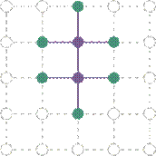
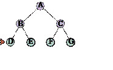

Khi hành động đúng để thực hiện không hiển nhiên ngay lập tức, một tác nhân có thể cần phải lên kế hoạch trước: xem xét một chuỗi các hành động tạo thành một đường dẫn đến một trạng thái mục tiêu. Một tác nhân như vậy được gọi là tác nhân giải quyết vấn đề (problem-solving agent), và quá trình tính toán mà nó thực hiện được gọi là tìm kiếm (search).
Các tác nhân giải quyết vấn đề sử dụng biểu diễn nguyên tử, như đã mô tả trong Phần 2.4.7—tức là, các trạng thái của thế giới được coi là toàn bộ, không có cấu trúc nội bộ nào hiển thị cho các thuật toán giải quyết vấn đề. Các tác nhân sử dụng biểu diễn trạng thái phân tách hoặc có cấu trúc được gọi là tác nhân lập kế hoạch (planning agents) và được thảo luận trong Chương 7 và 11.
Chúng ta sẽ đề cập đến một số thuật toán tìm kiếm. Trong chương này, chúng ta chỉ xem xét các môi trường đơn giản nhất: rời rạc, đơn tác nhân, có thể quan sát đầy đủ, xác định, tĩnh, rời rạc và đã biết. Chúng ta phân biệt giữa các thuật toán có thông tin (informed algorithms), trong đó tác nhân có thể ước tính nó cách mục tiêu bao xa, và các thuật toán không có thông tin (uninformed algorithms), trong đó không có ước tính nào như vậy. Chương 4 nới lỏng các ràng buộc về môi trường và Chương 6 xem xét nhiều tác nhân.
Chương này sử dụng các khái niệm về độ phức tạp tiệm cận (tức là ký hiệu O(n)). Độc giả chưa quen với các khái niệm này nên tham khảo Phụ lục A.
Hãy tưởng tượng một tác nhân đang tận hưởng một kỳ nghỉ du lịch ở Romania. Tác nhân muốn ngắm cảnh, cải thiện tiếng Romania, tận hưởng cuộc sống về đêm, tránh bị say, v.v. Vấn đề ra quyết định là một vấn đề phức tạp. Bây giờ, giả sử tác nhân hiện đang ở thành phố Arad và có một vé không hoàn lại để bay ra khỏi Bucharest vào ngày hôm sau. Tác nhân quan sát các biển báo đường phố và thấy rằng có ba con đường dẫn ra khỏi Arad: một về phía Sibiu, một đến Timisoara và một đến Zerind. Không có con đường nào trong số này là mục tiêu, vì vậy trừ khi tác nhân quen thuộc với địa lý của Romania, nó sẽ không biết phải đi theo con đường nào.
Nếu tác nhân không có thông tin bổ sung—nghĩa là, nếu môi trường là chưa biết—thì tác nhân không thể làm gì tốt hơn ngoài việc thực hiện một trong các hành động một cách ngẫu nhiên. Tình huống đáng buồn này được thảo luận trong Chương 4. Trong chương này, chúng ta sẽ giả định các tác nhân của chúng ta luôn có quyền truy cập vào thông tin về thế giới, chẳng hạn như bản đồ trong Hình 3.1. Với thông tin đó, tác nhân có thể tuân theo quy trình giải quyết vấn đề bốn pha này:
· Xây dựng mục tiêu (Goal formulation): Tác nhân đặt mục tiêu là đến Bucharest. Các mục tiêu tổ chức hành vi bằng cách giới hạn các mục tiêu và do đó các hành động cần được xem xét.
Hình 3.1 Một bản đồ đường bộ đơn giản hóa của một phần Romania, với khoảng cách đường bộ bằng dặm.
· Xây dựng vấn đề (Problem formulation): Tác nhân đưa ra một mô tả về các trạng thái và hành động cần thiết để đạt được mục tiêu—một mô hình trừu tượng của phần thế giới có liên quan. Đối với tác nhân của chúng ta, một mô hình tốt là xem xét các hành động di chuyển từ thành phố này đến một thành phố liền kề, và do đó sự thật duy nhất về trạng thái của thế giới sẽ thay đổi do một hành động là thành phố hiện tại.
· Tìm kiếm (Search): Trước khi thực hiện bất kỳ hành động nào trong thế giới thực, tác nhân mô phỏng các chuỗi hành động trong mô hình của nó, tìm kiếm cho đến khi nó tìm thấy một chuỗi các hành động đạt đến mục tiêu. Một chuỗi như vậy được gọi là một giải pháp (solution). Tác nhân có thể phải mô phỏng nhiều chuỗi không đạt đến mục tiêu, nhưng cuối cùng nó sẽ tìm thấy một giải pháp (chẳng hạn như đi từ Arad đến Sibiu đến Fagaras đến Bucharest), hoặc nó sẽ thấy rằng không thể có giải pháp nào.
· Thực thi (Execution): Tác nhân bây giờ có thể thực thi các hành động trong giải pháp, từng hành động một.
Đây là một thuộc tính quan trọng mà trong một môi trường có thể quan sát đầy đủ, xác định, đã biết, giải pháp cho bất kỳ vấn đề nào là một chuỗi hành động cố định: lái xe đến Sibiu, sau đó Fagaras, sau đó Bucharest. Nếu mô hình là đúng, thì một khi tác nhân đã tìm thấy một giải pháp, nó có thể bỏ qua các tri giác của mình trong khi nó đang thực thi các hành động—có thể nói là nhắm mắt lại—bởi vì giải pháp được đảm bảo sẽ dẫn đến mục tiêu. Các nhà lý thuyết điều khiển gọi đây là một hệ thống vòng hở (open-loop system): việc bỏ qua các tri giác phá vỡ vòng lặp giữa tác nhân và môi trường. Nếu có khả năng mô hình không chính xác, hoặc môi trường không xác định, thì tác nhân sẽ an toàn hơn khi sử dụng cách tiếp cận vòng kín (closed-loop) theo dõi các tri giác (xem Phần 4.4).
Trong các môi trường có thể quan sát một phần hoặc không xác định, một giải pháp sẽ là một chiến lược phân nhánh đề xuất các hành động tương lai khác nhau tùy thuộc vào tri giác nào đến. Ví dụ, tác nhân có thể lên kế hoạch lái xe từ Arad đến Sibiu nhưng có thể cần một kế hoạch dự phòng trong trường hợp nó đến Zerind một cách tình cờ hoặc tìm thấy một biển báo ghi “Drum Îinchis” (Đường cấm).
Một vấn đề tìm kiếm có thể được định nghĩa một cách chính thức như sau:
· Một tập hợp các trạng thái có thể mà môi trường có thể ở trong. Chúng ta gọi đây là không gian trạng thái (state space).
· Trạng thái ban đầu (initial state) mà tác nhân bắt đầu. Ví dụ: Arad.
· Một tập hợp một hoặc nhiều trạng thái mục tiêu (goal states). Đôi khi có một trạng thái mục tiêu (ví dụ: Bucharest), đôi khi có một tập hợp nhỏ các trạng thái mục tiêu thay thế, và đôi khi mục tiêu được định nghĩa bởi một thuộc tính áp dụng cho nhiều trạng thái (có khả năng là vô hạn). Ví dụ, trong một thế giới máy hút bụi, mục tiêu có thể là không có bụi bẩn ở bất kỳ vị trí nào, bất kể các sự thật khác về trạng thái. Chúng ta có thể tính đến cả ba khả năng này bằng cách chỉ định một phương thức IS-GOAL cho một vấn đề. Trong chương này, chúng ta đôi khi sẽ nói “mục tiêu” để đơn giản, nhưng những gì chúng ta nói cũng áp dụng cho “bất kỳ một trong các trạng thái mục tiêu có thể.”
·
Các hành động (action)
có sẵn cho tác nhân. Với một trạng thái  , ACTIONS(s) trả về một
tập hợp hữu hạn các hành động có thể được thực thi trong
, ACTIONS(s) trả về một
tập hợp hữu hạn các hành động có thể được thực thi trong  . Chúng ta nói rằng mỗi hành
động này là áp dụng được (applicable) trong
. Chúng ta nói rằng mỗi hành
động này là áp dụng được (applicable) trong  . Một ví dụ: Actions(Arad) = {ToSibiu, ToTimisoara, ToZerind}.
. Một ví dụ: Actions(Arad) = {ToSibiu, ToTimisoara, ToZerind}.
·
Một mô hình chuyển tiếp
(transition model), mô tả những gì mỗi hành động làm. RESULT(s, a) trả về
trạng thái là kết quả của việc thực hiện hành động  trong trạng thái
trong trạng thái  . Ví dụ, RESULT(Arad, ToZerind) = Zerind.
. Ví dụ, RESULT(Arad, ToZerind) = Zerind.
·
Một hàm chi phí hành động
(action cost function), được ký hiệu là ACTION-COST(s, a, s’) khi chúng
ta đang lập trình hoặc  khi chúng ta đang làm toán,
đưa ra chi phí số của việc áp dụng hành động
khi chúng ta đang làm toán,
đưa ra chi phí số của việc áp dụng hành động  trong trạng thái
trong trạng thái  để đạt đến trạng thái
để đạt đến trạng thái  . Một tác nhân giải quyết vấn
đề nên sử dụng một hàm chi phí phản ánh thước đo hiệu suất của chính nó; ví dụ,
đối với các tác nhân tìm đường, chi phí của một hành động có thể là chiều dài
theo dặm (như trong Hình 3.1), hoặc có thể là thời gian cần thiết để hoàn thành
hành động.
. Một tác nhân giải quyết vấn
đề nên sử dụng một hàm chi phí phản ánh thước đo hiệu suất của chính nó; ví dụ,
đối với các tác nhân tìm đường, chi phí của một hành động có thể là chiều dài
theo dặm (như trong Hình 3.1), hoặc có thể là thời gian cần thiết để hoàn thành
hành động.
Một chuỗi các hành động tạo thành một đường dẫn (path), và một giải pháp (solution) là một đường dẫn từ trạng thái ban đầu đến một trạng thái mục tiêu. Chúng ta giả định rằng chi phí hành động là cộng gộp; tức là, tổng chi phí của một đường dẫn là tổng của các chi phí hành động riêng lẻ. Một giải pháp tối ưu (optimal solution) có chi phí đường dẫn thấp nhất trong số tất cả các giải pháp. Trong chương này, chúng ta giả định rằng tất cả các chi phí hành động sẽ là dương, để tránh một số biến chứng.
Không gian trạng thái có thể được biểu diễn dưới dạng một đồ thị (graph) trong đó các đỉnh là trạng thái và các cạnh có hướng giữa chúng là hành động. Bản đồ Romania được hiển thị trong Hình 3.1 là một đồ thị như vậy, trong đó mỗi con đường chỉ ra hai hành động, một trong mỗi hướng.
Việc xây dựng vấn đề đến Bucharest của chúng ta là một mô hình—một mô tả toán học trừu tượng—chứ không phải là thứ thật. Hãy so sánh mô tả trạng thái nguyên tử đơn giản Arad với một chuyến đi thực tế xuyên quốc gia, trong đó trạng thái của thế giới bao gồm rất nhiều thứ: những người bạn đồng hành, chương trình radio hiện tại, phong cảnh ngoài cửa sổ, sự gần gũi của các nhân viên thực thi pháp luật, khoảng cách đến điểm dừng chân tiếp theo, tình trạng của con đường, thời tiết, giao thông, v.v. Tất cả những cân nhắc này đều bị loại bỏ khỏi mô hình của chúng ta vì chúng không liên quan đến vấn đề tìm một tuyến đường đến Bucharest.
Quá trình loại bỏ chi tiết khỏi một biểu diễn được gọi là trừu tượng hóa (abstraction). Một việc xây dựng vấn đề tốt có mức độ chi tiết phù hợp. Nếu các hành động ở mức độ “di chuyển chân phải về phía trước một centimet” hoặc “quay vô lăng sang trái một độ,” tác nhân có lẽ sẽ không bao giờ tìm thấy lối ra khỏi bãi đậu xe, chứ đừng nói đến Bucharest.
Chúng ta có thể chính xác hơn về mức độ trừu tượng thích hợp không? Hãy nghĩ về các trạng thái và hành động trừu tượng mà chúng ta đã chọn tương ứng với các tập hợp lớn các trạng thái thế giới chi tiết và các chuỗi hành động chi tiết. Bây giờ hãy xem xét một giải pháp cho vấn đề trừu tượng: ví dụ, đường dẫn từ Arad đến Sibiu đến Rimnicu Vilcea đến Pitesti đến Bucharest. Giải pháp trừu tượng này tương ứng với một số lượng lớn các đường dẫn chi tiết hơn. Ví dụ, chúng ta có thể lái xe với radio bật giữa Sibiu và Rimnicu Vilcea, và sau đó tắt nó trong phần còn lại của chuyến đi.
Sự trừu tượng hóa là hợp lệ nếu chúng ta có thể làm rõ bất kỳ giải pháp trừu tượng nào thành một giải pháp trong thế giới chi tiết hơn; một điều kiện đủ là đối với mỗi trạng thái chi tiết “ở Arad,” có một đường dẫn chi tiết đến một trạng thái nào đó “ở Sibiu,” v.v. Sự trừu tượng hóa là hữu ích nếu việc thực hiện mỗi hành động trong giải pháp dễ dàng hơn vấn đề ban đầu; trong trường hợp của chúng ta, hành động “lái xe từ Arad đến Sibiu” có thể được thực hiện mà không cần tìm kiếm hoặc lập kế hoạch thêm bởi một tài xế có kỹ năng trung bình. Do đó, việc lựa chọn một sự trừu tượng hóa tốt liên quan đến việc loại bỏ càng nhiều chi tiết càng tốt trong khi vẫn giữ được tính hợp lệ và đảm bảo rằng các hành động trừu tượng dễ thực hiện. Nếu không có khả năng xây dựng các sự trừu tượng hóa hữu ích, các tác nhân thông minh sẽ hoàn toàn bị choáng ngợp bởi thế giới thực.
Cách tiếp cận giải quyết vấn đề đã được áp dụng cho một loạt các môi trường tác vụ. Chúng ta liệt kê một số vấn đề nổi tiếng nhất ở đây, phân biệt giữa các vấn đề tiêu chuẩn hóa (standardized) và thế giới thực (real-world). Một vấn đề tiêu chuẩn hóa nhằm minh họa hoặc rèn luyện các phương pháp giải quyết vấn đề khác nhau. Nó có thể được đưa ra một mô tả chính xác, ngắn gọn và do đó phù hợp làm chuẩn mực để các nhà nghiên cứu so sánh hiệu suất của các thuật toán. Một vấn đề thế giới thực, chẳng hạn như điều hướng robot, là vấn đề mà các giải pháp của nó được con người thực sự sử dụng và việc xây dựng nó là đặc trưng, không tiêu chuẩn, vì, ví dụ, mỗi robot có các cảm biến khác nhau tạo ra dữ liệu khác nhau.
Một vấn đề thế giới lưới (grid world problem) là một mảng hình chữ nhật hai chiều gồm các ô vuông trong đó các tác nhân có thể di chuyển từ ô này sang ô khác. Thông thường, tác nhân có thể di chuyển đến bất kỳ ô liền kề nào không có chướng ngại vật—theo chiều ngang hoặc chiều dọc và trong một số vấn đề là theo đường chéo. Các ô có thể chứa các đối tượng, mà tác nhân có thể nhặt, đẩy hoặc tác động lên; một bức tường hoặc chướng ngại vật không thể vượt qua khác trong một ô ngăn cản tác nhân di chuyển vào ô đó. Thế giới máy hút bụi từ Phần 2.1 có thể được xây dựng như một vấn đề thế giới lưới như sau:
·
Trạng thái: Một trạng thái của thế giới cho biết những đối tượng nào ở trong
những ô nào. Đối với thế giới máy hút bụi, các đối tượng là tác nhân và bất kỳ
bụi bẩn nào. Trong phiên bản hai ô đơn giản, tác nhân có thể ở trong một trong
hai ô và mỗi ô có thể chứa bụi bẩn hoặc không, vì vậy có  trạng thái (xem Hình 3.2).
Nói chung, một môi trường máy hút bụi có
trạng thái (xem Hình 3.2).
Nói chung, một môi trường máy hút bụi có  ô có
ô có  trạng thái.
trạng thái.
· Trạng thái ban đầu: Bất kỳ trạng thái nào cũng có thể được chỉ định là trạng thái ban đầu.
· Hành động: Trong thế giới hai ô, chúng ta đã định nghĩa ba hành động: Hút, di chuyển Trái và di chuyển Phải. Trong một thế giới nhiều ô hai chiều, chúng ta cần nhiều hành động di chuyển hơn. Chúng ta có thể thêm Lên trên và Xuống dưới, cho chúng ta bốn hành động di chuyển tuyệt đối, hoặc chúng ta có thể chuyển sang các hành động tự tâm (egocentric), được định nghĩa tương đối với góc nhìn của tác nhân—ví dụ, Tiến, Lùi, Rẽ Phải và Rẽ Trái.
Hình 3.2 Đồ thị không gian trạng thái cho thế giới máy hút bụi hai ô. Có 8 trạng thái và ba hành động cho mỗi trạng thái: L = Trái, R = Phải, S = Hút.
· Mô hình chuyển tiếp: Hút loại bỏ bất kỳ bụi bẩn nào khỏi ô của tác nhân; Tiến di chuyển tác nhân về phía trước một ô theo hướng nó đang đối diện, trừ khi nó va vào tường, trong trường hợp đó hành động không có tác dụng. Lùi di chuyển tác nhân theo hướng ngược lại, trong khi Rẽ Phải và Rẽ Trái thay đổi hướng nó đang đối diện 90°.
· Trạng thái mục tiêu: Các trạng thái mà trong đó mọi ô đều sạch.
· Chi phí hành động: Mỗi hành động có chi phí là 1.
Một loại thế giới lưới khác là câu đố sokoban (sokoban
puzzle), trong đó mục tiêu của tác nhân là đẩy một số hộp, rải rác trên lưới, đến
các vị trí lưu trữ được chỉ định. Có thể có tối đa một hộp trên mỗi ô. Khi một
tác nhân di chuyển về phía trước vào một ô có chứa một hộp và có một ô trống ở
phía bên kia của hộp, thì cả hộp và tác nhân đều di chuyển về phía trước. Tác
nhân không thể đẩy một hộp vào một hộp khác hoặc một bức tường. Đối với một thế
giới có  ô không chướng ngại vật và
ô không chướng ngại vật và  hộp, có
hộp, có  trạng thái; ví dụ trên một lưới
8 × 8 với một tá hộp, có hơn 200 nghìn tỷ trạng thái.
trạng thái; ví dụ trên một lưới
8 × 8 với một tá hộp, có hơn 200 nghìn tỷ trạng thái.
Hình 3.3 Một ví dụ điển hình của câu đố 8-puzzle.
Trong một câu đố xếp gạch trượt (sliding-tile puzzle), một số gạch (đôi khi được gọi là khối hoặc mảnh) được sắp xếp trong một lưới với một hoặc nhiều khoảng trống để một số gạch có thể trượt vào khoảng trống. Một biến thể là câu đố Rush Hour, trong đó ô tô và xe tải trượt xung quanh một lưới 6 × 6 để cố gắng giải phóng một chiếc ô tô khỏi ùn tắc giao thông. Có lẽ biến thể nổi tiếng nhất là 8-puzzle (xem Hình 3.3), bao gồm một lưới 3 × 3 với tám gạch được đánh số và một khoảng trống, và 15-puzzle trên một lưới 4 × 4. Mục tiêu là đạt đến một trạng thái mục tiêu được chỉ định, chẳng hạn như trạng thái được hiển thị ở bên phải của hình. Việc xây dựng tiêu chuẩn của câu đố 8-puzzle như sau:
· Trạng thái: Một mô tả trạng thái chỉ định vị trí của mỗi gạch.
· Trạng thái ban đầu: Bất kỳ trạng thái nào cũng có thể được chỉ định là trạng thái ban đầu. Lưu ý rằng một thuộc tính chẵn lẻ phân chia không gian trạng thái—bất kỳ mục tiêu nào cũng có thể được đạt từ chính xác một nửa số trạng thái ban đầu có thể có.
· Hành động: Trong khi trong thế giới vật lý, một gạch là thứ trượt, cách đơn giản nhất để mô tả một hành động là nghĩ về khoảng trống di chuyển sang Trái, Phải, Lên hoặc Xuống. Nếu khoảng trống ở một cạnh hoặc góc thì không phải tất cả các hành động sẽ được áp dụng.
· Mô hình chuyển tiếp: Ánh xạ một trạng thái và hành động đến một trạng thái kết quả; ví dụ, nếu chúng ta áp dụng Trái cho trạng thái bắt đầu trong Hình 3.3, trạng thái kết quả sẽ có gạch 5 và khoảng trống hoán đổi.
· Trạng thái mục tiêu: Mặc dù bất kỳ trạng thái nào cũng có thể là mục tiêu, chúng ta thường chỉ định một trạng thái với các số theo thứ tự, như trong Hình 3.3.
· Chi phí hành động: Mỗi hành động có chi phí là 1.
Lưu ý rằng mọi việc xây dựng vấn đề đều liên quan đến các sự trừu tượng hóa. Các hành động của 8-puzzle được trừu tượng hóa thành các trạng thái bắt đầu và cuối của chúng, bỏ qua các vị trí trung gian nơi gạch đang trượt. Chúng ta đã trừu tượng hóa các hành động như lắc bảng khi gạch bị kẹt và loại trừ việc lấy gạch ra bằng dao và đặt chúng lại. Chúng ta còn lại với một mô tả về các quy tắc, tránh tất cả các chi tiết về thao tác vật lý.
Vấn đề tiêu chuẩn hóa cuối cùng của chúng ta được Donald Knuth
(1964) nghĩ ra và minh họa cách không gian trạng thái vô hạn có thể phát sinh.
Knuth phỏng đoán rằng bắt đầu với số 4, một chuỗi các phép toán căn bậc hai,
làm tròn xuống và giai thừa có thể đạt được bất kỳ số nguyên dương mong muốn
nào. Ví dụ, chúng ta có thể đạt được 5 từ 4 như sau:
Định nghĩa vấn đề rất đơn giản:
· Trạng thái: Số thực dương.
· Trạng thái ban đầu: 4.
· Hành động: Áp dụng phép toán căn bậc hai, làm tròn xuống hoặc giai thừa (giai thừa chỉ dành cho số nguyên).
· Mô hình chuyển tiếp: Như được đưa ra bởi các định nghĩa toán học của các phép toán.
· Trạng thái mục tiêu: Số nguyên dương mong muốn.
· Chi phí hành động: Mỗi hành động có chi phí là 1.
Không gian trạng thái cho vấn đề này là vô hạn: đối với bất kỳ số nguyên nào lớn hơn 2, toán tử giai thừa sẽ luôn tạo ra một số nguyên lớn hơn. Vấn đề này thú vị vì nó khám phá các số rất lớn: đường dẫn ngắn nhất đến 5 đi qua $\left(4\right!\right)\right!=620.448.401.733.239.439.360.000$ . Không gian trạng thái vô hạn thường xuyên phát sinh trong các tác vụ liên quan đến việc tạo ra các biểu thức toán học, mạch điện, bằng chứng, chương trình và các đối tượng được định nghĩa đệ quy khác.
Chúng ta đã thấy cách vấn đề tìm đường được định nghĩa theo các vị trí được chỉ định và các chuyển tiếp dọc theo các cạnh giữa chúng. Các thuật toán tìm đường được sử dụng trong nhiều ứng dụng khác nhau. Một số, chẳng hạn như các trang web và hệ thống trong ô tô cung cấp chỉ đường lái xe, là các phần mở rộng tương đối đơn giản của ví dụ Romania. (Các biến chứng chính là chi phí thay đổi do sự chậm trễ phụ thuộc vào giao thông và việc định tuyến lại do đường bị đóng.) Những vấn đề khác, chẳng hạn như định tuyến luồng video trong mạng máy tính, lập kế hoạch hoạt động quân sự và hệ thống lập kế hoạch du lịch hàng không, liên quan đến các đặc tả phức tạp hơn nhiều. Hãy xem xét các vấn đề du lịch hàng không phải được giải quyết bởi một trang web lập kế hoạch du lịch:
· Trạng thái: Mỗi trạng thái rõ ràng bao gồm một vị trí (ví dụ: một sân bay) và thời gian hiện tại. Hơn nữa, vì chi phí của một hành động (một phân đoạn chuyến bay) có thể phụ thuộc vào các phân đoạn trước đó, cơ sở giá vé của chúng và tình trạng của chúng là nội địa hay quốc tế, trạng thái phải ghi lại thông tin bổ sung về các khía cạnh “lịch sử” này.
· Trạng thái ban đầu: Sân bay nhà của người dùng.
· Hành động: Thực hiện bất kỳ chuyến bay nào từ vị trí hiện tại, ở bất kỳ hạng ghế nào, khởi hành sau thời gian hiện tại, để lại đủ thời gian cho việc trung chuyển trong sân bay nếu cần.
· Mô hình chuyển tiếp: Trạng thái kết quả từ việc thực hiện một chuyến bay sẽ có điểm đến của chuyến bay làm vị trí mới và thời gian đến của chuyến bay làm thời gian mới.
· Trạng thái mục tiêu: Một thành phố đích. Đôi khi mục tiêu có thể phức tạp hơn, chẳng hạn như “đến đích trên một chuyến bay thẳng.”
· Chi phí hành động: Một sự kết hợp của chi phí tiền tệ, thời gian chờ đợi, thời gian bay, thủ tục hải quan và nhập cảnh, chất lượng ghế, thời gian trong ngày, loại máy bay, điểm thưởng của người thường xuyên bay, v.v.
Các hệ thống tư vấn du lịch thương mại sử dụng một việc xây dựng vấn đề loại này, với nhiều biến chứng bổ sung để xử lý cấu trúc giá vé phức tạp của các hãng hàng không. Tuy nhiên, bất kỳ du khách dày dặn nào cũng biết rằng không phải tất cả các chuyến du lịch hàng không đều diễn ra theo kế hoạch. Một hệ thống thực sự tốt nên bao gồm các kế hoạch dự phòng—điều gì sẽ xảy ra nếu chuyến bay này bị trì hoãn và lỡ chuyến bay nối chuyến?
Các vấn đề du lịch (touring problem) mô tả một tập hợp các địa điểm phải được ghé thăm, thay vì một điểm đến mục tiêu duy nhất. Vấn đề người bán hàng rong (traveling salesperson problem - TSP) là một vấn đề du lịch trong đó mọi thành phố trên bản đồ phải được ghé thăm. Mục đích là tìm một chuyến đi với chi phí < C (hoặc trong phiên bản tối ưu hóa, để tìm một chuyến đi với chi phí thấp nhất có thể). Một lượng lớn nỗ lực đã được dành ra để cải thiện khả năng của các thuật toán TSP. Các thuật toán cũng có thể được mở rộng để xử lý các đội xe. Ví dụ, một thuật toán tìm kiếm và tối ưu hóa để định tuyến xe buýt trường học ở Boston đã tiết kiệm được 5 triệu đô la, cắt giảm giao thông và ô nhiễm không khí, và tiết kiệm thời gian cho tài xế và học sinh (Bertsimas et al., 2019). Ngoài việc lập kế hoạch các chuyến đi, các thuật toán tìm kiếm đã được sử dụng cho các tác vụ như lập kế hoạch di chuyển của máy khoan bảng mạch tự động và của máy xếp hàng trên sàn cửa hàng.
Một vấn đề bố trí VLSI (VLSI layout) yêu cầu định vị hàng triệu thành phần và kết nối trên một con chip để giảm thiểu diện tích, giảm thiểu độ trễ mạch, giảm thiểu điện dung lạc và tối đa hóa năng suất sản xuất. Vấn đề bố trí xuất hiện sau giai đoạn thiết kế logic và thường được chia thành hai phần: bố trí ô và định tuyến kênh. Trong bố trí ô, các thành phần nguyên thủy của mạch được nhóm lại thành các ô, mỗi ô thực hiện một chức năng được công nhận. Mỗi ô có một dấu chân cố định (kích thước và hình dạng) và yêu cầu một số kết nối nhất định với mỗi ô khác. Mục đích là đặt các ô trên chip sao cho chúng không chồng chéo và có chỗ cho các dây kết nối được đặt giữa các ô. Định tuyến kênh tìm một tuyến đường cụ thể cho mỗi dây thông qua các khoảng trống giữa các ô. Các vấn đề tìm kiếm này cực kỳ phức tạp, nhưng chắc chắn đáng để giải quyết.
Điều hướng robot (Robot navigation) là một sự tổng quát hóa của vấn đề tìm đường đã mô tả trước đó. Thay vì đi theo các đường dẫn riêng biệt (chẳng hạn như các con đường ở Romania), một robot có thể đi lang thang, trên thực tế tạo ra các đường dẫn của riêng nó. Đối với một robot hình tròn di chuyển trên một bề mặt phẳng, không gian về cơ bản là hai chiều. Khi robot có cánh tay và chân cũng phải được điều khiển, không gian tìm kiếm trở nên đa chiều—một chiều cho mỗi góc khớp. Các kỹ thuật tiên tiến được yêu cầu chỉ để làm cho không gian tìm kiếm về cơ bản là liên tục trở nên hữu hạn (xem Chương 26). Ngoài sự phức tạp của vấn đề, robot thực tế cũng phải đối phó với các lỗi trong các số đọc cảm biến và điều khiển động cơ của chúng, với khả năng quan sát một phần và với các tác nhân khác có thể làm thay đổi môi trường.
Trình tự lắp ráp tự động (Automatic assembly sequencing) của các đối tượng phức tạp (chẳng hạn như động cơ điện) bởi một robot đã là thực hành công nghiệp tiêu chuẩn từ những năm 1970. Các thuật toán đầu tiên tìm một chuỗi lắp ráp khả thi và sau đó làm việc để tối ưu hóa quy trình. Giảm thiểu lượng lao động thủ công của con người trên dây chuyền lắp ráp có thể tạo ra khoản tiết kiệm đáng kể về thời gian và chi phí. Trong các vấn đề lắp ráp, mục đích là tìm một thứ tự để lắp ráp các bộ phận của một đối tượng. Nếu chọn sai thứ tự, sẽ không có cách nào để thêm một số bộ phận sau này trong chuỗi mà không làm mất một số công việc đã được thực hiện. Kiểm tra một hành động trong chuỗi để xem tính khả thi là một vấn đề tìm kiếm hình học khó khăn liên quan chặt chẽ đến điều hướng robot. Do đó, việc tạo ra các hành động hợp lệ là phần tốn kém của trình tự lắp ráp. Bất kỳ thuật toán thực tế nào cũng phải tránh khám phá tất cả trừ một phần nhỏ của không gian trạng thái. Một vấn đề lắp ráp quan trọng là thiết kế protein (protein design), trong đó mục tiêu là tìm một chuỗi axit amin sẽ gập lại thành một protein ba chiều với các thuộc tính phù hợp để chữa một số bệnh.
Một thuật toán tìm kiếm (search algorithm) lấy một bài toán tìm kiếm làm đầu vào và trả về một giải pháp hoặc một chỉ báo về sự thất bại. Trong chương này, chúng ta xem xét các thuật toán chồng một cây tìm kiếm lên đồ thị không gian trạng thái, tạo thành các đường dẫn khác nhau từ trạng thái ban đầu, cố gắng tìm một đường dẫn đạt đến trạng thái mục tiêu. Mỗi nút (node) trong cây tìm kiếm tương ứng với một trạng thái trong không gian trạng thái và các cạnh trong cây tìm kiếm tương ứng với các hành động. Nút gốc của cây tương ứng với trạng thái ban đầu của bài toán.
Điều quan trọng là phải hiểu sự khác biệt giữa không gian trạng thái và cây tìm kiếm. Không gian trạng thái mô tả tập hợp các trạng thái (có thể là vô hạn) trong thế giới và các hành động cho phép chuyển đổi từ trạng thái này sang trạng thái khác. Cây tìm kiếm mô tả các đường dẫn giữa các trạng thái này, tiếp cận mục tiêu. Cây tìm kiếm có thể có nhiều đường dẫn đến (và do đó nhiều nút cho) bất kỳ trạng thái nào, nhưng mỗi nút trong cây có một đường dẫn duy nhất trở lại nút gốc (như trong tất cả các cây).

Hình 3.4 cho thấy một vài bước đầu tiên trong việc tìm đường dẫn từ Arad đến Bucharest. Nút gốc của cây tìm kiếm ở trạng thái ban đầu, Arad. Chúng ta có thể mở rộng (expand) nút, bằng cách xem xét các hành động có sẵn cho trạng thái đó, sử dụng hàm RESULT để xem các hành động đó dẫn đến đâu, và tạo một nút mới (được gọi là nút con (child node) hoặc nút kế tiếp (successor node)) cho mỗi trạng thái kết quả. Mỗi nút con có Arad làm nút cha (parent node) của nó.
Hình 3.4 Ba cây tìm kiếm một phần để tìm tuyến đường từ Arad đến Bucharest. Các nút đã được mở rộng có màu tím nhạt với chữ đậm; các nút trên biên (frontier) đã được tạo nhưng chưa được mở rộng có màu xanh lá cây; tập hợp các trạng thái tương ứng với hai loại nút này được cho là đã được đạt đến (reached). Các nút có thể được tạo tiếp theo được hiển thị bằng các đường đứt nét mờ. Lưu ý trong cây dưới cùng có một chu kỳ từ Arad đến Sibiu đến Arad; đó không thể là một đường dẫn tối ưu, vì vậy tìm kiếm không nên tiếp tục từ đó.
Hình 3.5 Một chuỗi các cây tìm kiếm được tạo bởi một tìm kiếm đồ thị trên bài toán Romania của Hình 3.1. Ở mỗi giai đoạn, chúng ta đã mở rộng mọi nút trên biên, mở rộng mọi đường dẫn với tất cả các hành động áp dụng được mà không dẫn đến một trạng thái đã được đạt đến. Lưu ý rằng ở giai đoạn thứ ba, thành phố trên cùng (Oradea) có hai nút kế tiếp, cả hai đều đã được đạt đến bằng các đường dẫn khác, vì vậy không có đường dẫn nào được mở rộng từ Oradea.

Hình 3.6 Thuộc tính tách biệt của tìm kiếm đồ thị, được minh họa trên một vấn đề lưới hình chữ nhật. Biên (màu xanh lá cây) tách biệt bên trong (màu tím nhạt) khỏi bên ngoài (đường đứt nét mờ). Biên là tập hợp các nút (và các trạng thái tương ứng) đã được đạt đến nhưng chưa được mở rộng; bên trong là tập hợp các nút (và các trạng thái tương ứng) đã được mở rộng; và bên ngoài là tập hợp các trạng thái chưa được đạt đến. Trong (a), chỉ nút gốc đã được mở rộng. Trong (b), nút biên trên cùng được mở rộng. Trong (c), các nút kế tiếp còn lại của nút gốc được mở rộng theo thứ tự kim đồng hồ.
Bây giờ chúng ta phải chọn nút nào từ biên để mở rộng tiếp theo. Đây là bản chất của tìm kiếm—theo đuổi một tùy chọn bây giờ và gác lại những tùy chọn khác để sau này. Giả sử chúng ta chọn mở rộng Sibiu trước. Hình 3.4 (dưới cùng) cho thấy kết quả: một tập hợp 6 nút chưa được mở rộng (được phác thảo bằng chữ đậm). Chúng ta gọi đây là biên (frontier) của cây tìm kiếm. Chúng ta nói rằng bất kỳ trạng thái nào đã có một nút được tạo cho nó đã được đạt đến (reached) (cho dù nút đó đã được mở rộng hay chưa). Hình 3.5 cho thấy cây tìm kiếm được chồng lên đồ thị không gian trạng thái.
Lưu ý rằng biên tách biệt hai vùng của đồ thị không gian trạng thái: một vùng bên trong (interior) nơi mọi trạng thái đã được mở rộng, và một vùng bên ngoài (exterior) gồm các trạng thái chưa được đạt đến. Thuộc tính này được minh họa trong Hình 3.6.
Làm thế nào chúng ta quyết định nút nào từ biên để mở rộng tiếp
theo? Một cách tiếp cận rất chung được gọi là tìm kiếm tốt nhất đầu tiên
(best-first search), trong đó chúng ta chọn một nút,  , với giá trị tối thiểu của một
số hàm đánh giá (evaluation function),
, với giá trị tối thiểu của một
số hàm đánh giá (evaluation function),  . Hình 3.7 cho thấy thuật
toán. Ở mỗi lần lặp, chúng ta chọn một nút trên biên với giá trị
. Hình 3.7 cho thấy thuật
toán. Ở mỗi lần lặp, chúng ta chọn một nút trên biên với giá trị  tối thiểu, trả về nó nếu trạng
thái của nó là trạng thái mục tiêu và ngược lại áp dụng EXPAND để tạo
các nút con. Mỗi nút con được thêm vào biên nếu nó chưa được đạt đến trước đây,
hoặc được thêm lại nếu nó hiện đang được đạt đến với một đường dẫn có chi phí
đường dẫn thấp hơn bất kỳ đường dẫn trước đó nào. Thuật toán trả về một chỉ báo
về sự thất bại, hoặc một nút đại diện cho một đường dẫn đến một mục tiêu. Bằng
cách sử dụng các hàm
tối thiểu, trả về nó nếu trạng
thái của nó là trạng thái mục tiêu và ngược lại áp dụng EXPAND để tạo
các nút con. Mỗi nút con được thêm vào biên nếu nó chưa được đạt đến trước đây,
hoặc được thêm lại nếu nó hiện đang được đạt đến với một đường dẫn có chi phí
đường dẫn thấp hơn bất kỳ đường dẫn trước đó nào. Thuật toán trả về một chỉ báo
về sự thất bại, hoặc một nút đại diện cho một đường dẫn đến một mục tiêu. Bằng
cách sử dụng các hàm  khác nhau, chúng ta có được
các thuật toán cụ thể khác nhau, mà chương này sẽ đề cập.
khác nhau, chúng ta có được
các thuật toán cụ thể khác nhau, mà chương này sẽ đề cập.
function
BEST-FIRST-SEARCH(problem, f) returns a solution node or failure
node ← NODE(STATE=problem.INITIAL)
frontier ← a priority queue ordered by f, with node as an element
reached ← a lookup table, with one entry with key problem.INITIAL and
value node
while not IS-EMPTY(frontier) do
node ← POP(frontier)
if problem.IS-GOAL(node.STATE) then
return node
for each child in EXPAND(problem, node)
do
s ← child.State
if s is not in reached or child.PATH-COST
< reached[s].PATH-COST then
reached[s] ← child
add child to frontier
return failure
function EXPAND(problem, node)
yields nodes
s ← node.State
for each action in problem.Actions(s) do
s' ← problem.RESULT(s, action)
cost ← node.Path-Cost +
problem.Action-Cost(s, action, s')
yield Node(State=s', Parent=node,
Action=action, Path-Cost=cost)
Hình 3.7 Thuật toán tìm kiếm tốt nhất đầu tiên, và hàm để mở rộng một nút. Các cấu trúc dữ liệu được sử dụng ở đây được mô tả trong Phần 3.3.2. Xem Phụ lục B để biết yield.
Các thuật toán tìm kiếm yêu cầu một cấu trúc dữ liệu để theo dõi cây tìm kiếm. Một nút trong cây được biểu diễn bởi một cấu trúc dữ liệu với bốn thành phần:
· node.STATE: trạng thái mà nút tương ứng;
· node.PARENT: nút trong cây đã tạo ra nút này;
· node.ACTION: hành động đã được áp dụng cho trạng thái của nút cha để tạo ra nút này;
·
node.PATH-COST: tổng chi phí của đường dẫn từ trạng thái ban đầu đến nút này.
Trong các công thức toán học, chúng ta sử dụng  như một từ đồng nghĩa với PATH-COST.
như một từ đồng nghĩa với PATH-COST.
Theo các con trỏ PARENT quay ngược từ một nút cho phép chúng ta phục hồi các trạng thái và hành động dọc theo đường dẫn đến nút đó. Thực hiện điều này từ một nút mục tiêu sẽ cho chúng ta giải pháp.
Chúng ta cần một cấu trúc dữ liệu để lưu trữ biên. Lựa chọn thích hợp là một loại hàng đợi nào đó, bởi vì các hoạt động trên biên là:
· IS-EMPTY(frontier) trả về đúng chỉ khi không có nút nào trong biên.
· POP(frontier) loại bỏ nút trên cùng khỏi biên và trả về nó.
· TOP(frontier) trả về (nhưng không loại bỏ) nút trên cùng của biên.
· ADD(node, frontier) chèn nút vào vị trí thích hợp của nó trong hàng đợi.
Ba loại hàng đợi được sử dụng trong các thuật toán tìm kiếm:
·
Một hàng đợi ưu tiên
(priority queue) đầu tiên sẽ loại bỏ nút có chi phí tối thiểu theo một số hàm
đánh giá,  . Nó được sử dụng trong tìm
kiếm tốt nhất đầu tiên.
. Nó được sử dụng trong tìm
kiếm tốt nhất đầu tiên.
· Một hàng đợi FIFO (first-in-first-out) đầu tiên sẽ loại bỏ nút đã được thêm vào hàng đợi đầu tiên; chúng ta sẽ thấy nó được sử dụng trong tìm kiếm theo chiều rộng.
· Một hàng đợi LIFO (last-in-first-out) (còn được gọi là một ngăn xếp (stack)) đầu tiên sẽ loại bỏ nút được thêm vào gần đây nhất; chúng ta sẽ thấy nó được sử dụng trong tìm kiếm theo chiều sâu.
Các trạng thái đã được đạt đến có thể được lưu trữ dưới dạng một bảng tra cứu (ví dụ: một bảng băm) trong đó mỗi khóa là một trạng thái và mỗi giá trị là nút cho trạng thái đó.
Cây tìm kiếm được hiển thị trong Hình 3.4 (dưới cùng) bao gồm một đường dẫn từ Arad đến Sibiu và quay trở lại Arad. Chúng ta nói rằng Arad là một trạng thái lặp lại (repeated state) trong cây tìm kiếm, được tạo ra trong trường hợp này bởi một chu kỳ (cycle) (còn được gọi là đường dẫn lặp (loopy path)). Vì vậy, mặc dù không gian trạng thái chỉ có 20 trạng thái, cây tìm kiếm hoàn chỉnh là vô hạn vì không có giới hạn về số lần người ta có thể đi qua một vòng lặp.
Một chu kỳ là một trường hợp đặc biệt của một đường dẫn dư thừa (redundant path). Ví dụ, chúng ta có thể đến Sibiu qua đường dẫn Arad–Sibiu (dài 140 dặm) hoặc đường dẫn Arad–Zerind–Oradea–Sibiu (dài 297 dặm). Đường dẫn thứ hai này là dư thừa—nó chỉ là một cách tồi tệ hơn để đến cùng một trạng thái—và không cần phải được xem xét trong hành trình tìm kiếm các đường dẫn tối ưu của chúng ta.
Hãy xem xét một tác
nhân trong một thế giới lưới 10 × 10, với khả năng di chuyển đến bất kỳ ô nào
trong số 8 ô liền kề. Nếu không có chướng ngại vật, tác nhân có thể đến bất kỳ
ô nào trong số 100 ô trong 9 lần di chuyển hoặc ít hơn. Nhưng số lượng đường dẫn
có độ dài 9 gần bằng  (ít hơn một chút vì các cạnh của lưới), hoặc
hơn 100 triệu. Nói cách khác, ô trung bình có thể được đạt đến bởi hơn một triệu
đường dẫn dư thừa có độ dài 9, và nếu chúng ta loại bỏ các đường dẫn dư thừa,
chúng ta có thể hoàn thành một tìm kiếm nhanh hơn khoảng một triệu lần. Như người
ta thường nói, các thuật toán không thể nhớ quá khứ thì sẽ lặp lại nó. Có ba
cách tiếp cận cho vấn đề này.
(ít hơn một chút vì các cạnh của lưới), hoặc
hơn 100 triệu. Nói cách khác, ô trung bình có thể được đạt đến bởi hơn một triệu
đường dẫn dư thừa có độ dài 9, và nếu chúng ta loại bỏ các đường dẫn dư thừa,
chúng ta có thể hoàn thành một tìm kiếm nhanh hơn khoảng một triệu lần. Như người
ta thường nói, các thuật toán không thể nhớ quá khứ thì sẽ lặp lại nó. Có ba
cách tiếp cận cho vấn đề này.
Đầu tiên, chúng ta có thể nhớ tất cả các trạng thái đã đạt đến trước đó (như tìm kiếm tốt nhất đầu tiên làm), cho phép chúng ta phát hiện tất cả các đường dẫn dư thừa và chỉ giữ đường dẫn tốt nhất đến mỗi trạng thái. Điều này phù hợp với các không gian trạng thái có nhiều đường dẫn dư thừa, và là lựa chọn ưu tiên khi bảng các trạng thái đã đạt đến có thể vừa trong bộ nhớ.
Thứ hai, chúng ta có thể không lo lắng về việc lặp lại quá khứ. Có một số việc xây dựng vấn đề mà hiếm khi hoặc không thể có hai đường dẫn đạt đến cùng một trạng thái. Một ví dụ sẽ là một vấn đề lắp ráp trong đó mỗi hành động thêm một bộ phận vào một cụm lắp ráp đang phát triển, và có một thứ tự các bộ phận sao cho có thể thêm A rồi B, nhưng không thể B rồi A. Đối với những vấn đề đó, chúng ta có thể tiết kiệm không gian bộ nhớ nếu chúng ta không theo dõi các trạng thái đã đạt đến và chúng ta không kiểm tra các đường dẫn dư thừa. Chúng ta gọi một thuật toán tìm kiếm là tìm kiếm đồ thị (graph search) nếu nó kiểm tra các đường dẫn dư thừa và là tìm kiếm giống cây (tree-like search) nếu nó không kiểm tra. Thuật toán BEST-FIRST-SEARCH trong Hình 3.7 là một thuật toán tìm kiếm đồ thị; nếu chúng ta loại bỏ tất cả các tham chiếu đến đã đạt đến, chúng ta sẽ có một tìm kiếm giống cây sử dụng ít bộ nhớ hơn nhưng sẽ kiểm tra các đường dẫn dư thừa đến cùng một trạng thái, và do đó sẽ chạy chậm hơn.
Thứ ba, chúng ta có thể thỏa hiệp và kiểm tra các chu kỳ, nhưng không kiểm tra các đường dẫn dư thừa nói chung. Vì mỗi nút có một chuỗi con trỏ cha, chúng ta có thể kiểm tra các chu kỳ mà không cần thêm bộ nhớ bằng cách theo dõi chuỗi cha để xem trạng thái ở cuối đường dẫn có xuất hiện sớm hơn trong đường dẫn hay không. Một số triển khai theo dõi chuỗi này suốt cả đường đi, và do đó loại bỏ tất cả các chu kỳ; các triển khai khác chỉ theo dõi một vài liên kết (ví dụ: đến cha, ông bà, và cụ), và do đó chỉ mất một lượng thời gian không đổi, trong khi loại bỏ tất cả các chu kỳ ngắn (và dựa vào các cơ chế khác để xử lý các chu kỳ dài).
Trước khi chúng ta đi vào thiết kế của các thuật toán tìm kiếm khác nhau, chúng ta sẽ xem xét các tiêu chí được sử dụng để lựa chọn giữa chúng. Chúng ta có thể đánh giá hiệu suất của một thuật toán theo bốn cách:
· Tính đầy đủ (Completeness): Thuật toán có được đảm bảo tìm thấy một giải pháp khi có một giải pháp không, và báo cáo thất bại một cách chính xác khi không có không?
· Tính tối ưu chi phí (Cost optimality): Nó có tìm thấy một giải pháp với chi phí đường dẫn thấp nhất trong tất cả các giải pháp không?
· Độ phức tạp thời gian (Time complexity): Cần bao lâu để tìm thấy một giải pháp? Điều này có thể được đo bằng giây, hoặc trừu tượng hơn bằng số lượng trạng thái và hành động được xem xét.
· Độ phức tạp không gian (Space complexity): Cần bao nhiêu bộ nhớ để thực hiện tìm kiếm?
Để hiểu tính đầy đủ, hãy xem xét một vấn đề tìm kiếm với một mục tiêu duy nhất. Mục tiêu đó có thể ở bất cứ đâu trong không gian trạng thái; do đó, một thuật toán đầy đủ phải có khả năng khám phá một cách có hệ thống mọi trạng thái có thể đạt được từ trạng thái ban đầu. Trong các không gian trạng thái hữu hạn, điều đó rất dễ đạt được: miễn là chúng ta theo dõi các đường dẫn và cắt bỏ những đường dẫn là chu kỳ (ví dụ: Arad đến Sibiu đến Arad), cuối cùng chúng ta sẽ đạt đến mọi trạng thái có thể đạt được.
Trong các không gian trạng thái vô hạn, cần cẩn thận hơn. Ví dụ, một thuật toán liên tục áp dụng toán tử “giai thừa” trong bài toán “4” của Knuth sẽ đi theo một đường dẫn vô hạn từ 4 đến 4! đến (4!)!, và cứ thế. Tương tự, trên một lưới vô hạn không có chướng ngại vật, việc liên tục di chuyển về phía trước theo một đường thẳng cũng đi theo một đường dẫn vô hạn của các trạng thái mới. Trong cả hai trường hợp, thuật toán không bao giờ quay trở lại một trạng thái nó đã đạt được trước đó, nhưng nó không đầy đủ vì các không gian rộng lớn của không gian trạng thái không bao giờ được đạt đến.
Để đầy đủ, một thuật toán tìm kiếm phải có hệ thống
(systematic) trong cách nó khám phá một không gian trạng thái vô hạn, đảm bảo rằng
nó cuối cùng có thể đạt được bất kỳ trạng thái nào được kết nối với trạng thái
ban đầu. Ví dụ, trên lưới vô hạn, một loại tìm kiếm có hệ thống là một đường xoắn
ốc bao phủ tất cả các ô cách gốc  bước trước khi di chuyển ra
ngoài đến các ô cách gốc
bước trước khi di chuyển ra
ngoài đến các ô cách gốc  bước. Thật không may, trong một
không gian trạng thái vô hạn không có giải pháp, một thuật toán đúng đắn cần phải
tiếp tục tìm kiếm mãi mãi; nó không thể kết thúc vì nó không thể biết liệu trạng
thái tiếp theo có phải là mục tiêu hay không.
bước. Thật không may, trong một
không gian trạng thái vô hạn không có giải pháp, một thuật toán đúng đắn cần phải
tiếp tục tìm kiếm mãi mãi; nó không thể kết thúc vì nó không thể biết liệu trạng
thái tiếp theo có phải là mục tiêu hay không.
Độ phức tạp thời gian và không gian được xem xét đối với một số thước
đo độ khó của vấn đề. Trong khoa học máy tính lý thuyết, thước đo điển hình là
kích thước của đồ thị không gian trạng thái,  , trong đó
, trong đó  là số đỉnh (nút trạng thái) của
đồ thị và
là số đỉnh (nút trạng thái) của
đồ thị và  là số cạnh (cặp trạng
thái/hành động riêng biệt). Điều này phù hợp khi đồ thị là một cấu trúc dữ liệu
tường minh, chẳng hạn như bản đồ Romania. Nhưng trong nhiều vấn đề AI, đồ thị
chỉ được biểu diễn một cách ngầm định bởi trạng thái ban đầu, các hành động và
mô hình chuyển tiếp. Đối với một không gian trạng thái ngầm định, độ phức tạp
có thể được đo lường theo
là số cạnh (cặp trạng
thái/hành động riêng biệt). Điều này phù hợp khi đồ thị là một cấu trúc dữ liệu
tường minh, chẳng hạn như bản đồ Romania. Nhưng trong nhiều vấn đề AI, đồ thị
chỉ được biểu diễn một cách ngầm định bởi trạng thái ban đầu, các hành động và
mô hình chuyển tiếp. Đối với một không gian trạng thái ngầm định, độ phức tạp
có thể được đo lường theo  , độ sâu (depth) hoặc
số lượng hành động trong một giải pháp tối ưu;
, độ sâu (depth) hoặc
số lượng hành động trong một giải pháp tối ưu;  , số lượng hành động tối đa
trong bất kỳ đường dẫn nào; và
, số lượng hành động tối đa
trong bất kỳ đường dẫn nào; và  , hệ số phân nhánh
(branching factor) hoặc số nút kế tiếp của một nút cần được xem xét.
, hệ số phân nhánh
(branching factor) hoặc số nút kế tiếp của một nút cần được xem xét.
Một thuật toán tìm kiếm không có thông tin (uninformed search algorithm) không được cung cấp bất kỳ manh mối nào về mức độ gần của một trạng thái với (các) mục tiêu. Ví dụ, hãy xem xét tác nhân của chúng ta ở Arad với mục tiêu đến Bucharest. Một tác nhân không có thông tin và không có kiến thức về địa lý Romania không có manh mối nào về việc đi đến Zerind hay Sibiu là bước đầu tiên tốt hơn. Ngược lại, một tác nhân có thông tin (Phần 3.5), người biết vị trí của mỗi thành phố, biết rằng Sibiu gần Bucharest hơn nhiều và do đó có nhiều khả năng nằm trên đường dẫn ngắn nhất.
Khi tất cả các hành động có cùng chi phí, một chiến lược thích hợp
là tìm kiếm theo chiều rộng đầu tiên (breadth-first search), trong đó
nút gốc được mở rộng đầu tiên, sau đó tất cả các nút kế tiếp của nút gốc được mở
rộng tiếp theo, sau đó là các nút kế tiếp của chúng, v.v. Đây là một chiến lược
tìm kiếm có hệ thống và do đó đầy đủ ngay cả trên các không gian trạng thái vô
hạn. Chúng ta có thể triển khai tìm kiếm theo chiều rộng đầu tiên như một lời gọi
đến BEST-FIRST-SEARCH trong đó hàm đánh giá  là độ sâu của nút—tức là số
hành động cần để đạt đến nút.
là độ sâu của nút—tức là số
hành động cần để đạt đến nút.
Tuy nhiên, chúng ta có thể đạt được hiệu quả bổ sung với một vài thủ thuật. Một hàng đợi vào trước ra trước (first-in-first-out queue) sẽ nhanh hơn một hàng đợi ưu tiên và sẽ cho chúng ta thứ tự nút chính xác: các nút mới (luôn sâu hơn cha của chúng) đi vào cuối hàng đợi, và các nút cũ, nông hơn các nút mới, được mở rộng trước. Ngoài ra, đã đạt đến có thể là một tập hợp các trạng thái chứ không phải là một ánh xạ từ trạng thái đến nút, bởi vì một khi chúng ta đã đạt đến một trạng thái, chúng ta không bao giờ có thể tìm thấy một đường dẫn tốt hơn đến trạng thái đó. Điều đó cũng có nghĩa là chúng ta có thể thực hiện kiểm tra mục tiêu sớm (early goal test), kiểm tra xem một nút có phải là giải pháp ngay khi nó được tạo ra, thay vì kiểm tra mục tiêu muộn (late goal test) mà tìm kiếm tốt nhất đầu tiên sử dụng, chờ cho đến khi một nút được lấy ra khỏi hàng đợi. Hình 3.8 cho thấy tiến trình của một tìm kiếm theo chiều rộng đầu tiên trên một cây nhị phân đơn giản, và Hình 3.9 cho thấy thuật toán với các cải tiến hiệu quả của việc kiểm tra mục tiêu sớm.

Hình 3.8 Tìm kiếm theo chiều rộng đầu tiên trên một cây nhị phân đơn giản. Ở mỗi giai đoạn, nút sẽ được mở rộng tiếp theo được chỉ ra bằng điểm đánh dấu hình tam giác.
function
BREADTH-FIRST-SEARCH(problem) returns a solution node or failure
node ← NODE(problem.INITIAL)
if problem.IS-GOAL(node.STATE) then return node
frontier ← a FIFO queue, with node as an element
reached ← {problem.INITIAL}
while not IS-EMPTY(frontier) do
node ← POP(frontier)
for each child in EXPAND(problem, node)
do
s ← child.State
if problem.IS-GOAL(s) then return
child
if s is not in reached then
add s to reached
add child to frontier
return failure
function
UNIFORM-COST-SEARCH(problem) returns a solution node, or failure
return Best-First-Search(problem, Path-Cost)
Hình 3.9 Thuật toán tìm kiếm theo chiều rộng đầu tiên và tìm kiếm chi phí đồng đều.
Tìm kiếm theo chiều rộng đầu tiên luôn tìm thấy một giải pháp với số
lượng hành động tối thiểu, bởi vì khi nó đang tạo ra các nút ở độ sâu  , nó đã tạo ra tất cả các nút
ở độ sâu
, nó đã tạo ra tất cả các nút
ở độ sâu  , vì vậy nếu một trong số
chúng là một giải pháp, nó sẽ được tìm thấy. Điều đó có nghĩa là nó tối ưu
chi phí đối với các vấn đề mà tất cả các hành động có cùng chi phí, nhưng
không phải đối với các vấn đề không có thuộc tính đó. Nó đầy đủ trong cả hai
trường hợp. Về thời gian và không gian, hãy tưởng tượng tìm kiếm một cây đồng
nhất trong đó mỗi trạng thái có
, vì vậy nếu một trong số
chúng là một giải pháp, nó sẽ được tìm thấy. Điều đó có nghĩa là nó tối ưu
chi phí đối với các vấn đề mà tất cả các hành động có cùng chi phí, nhưng
không phải đối với các vấn đề không có thuộc tính đó. Nó đầy đủ trong cả hai
trường hợp. Về thời gian và không gian, hãy tưởng tượng tìm kiếm một cây đồng
nhất trong đó mỗi trạng thái có  nút kế tiếp. Nút gốc của cây
tìm kiếm tạo ra
nút kế tiếp. Nút gốc của cây
tìm kiếm tạo ra  nút, mỗi nút trong số đó tạo
ra thêm
nút, mỗi nút trong số đó tạo
ra thêm  nút, với tổng số
nút, với tổng số  ở cấp độ thứ hai. Mỗi nút này
tạo ra thêm
ở cấp độ thứ hai. Mỗi nút này
tạo ra thêm  nút, tạo ra
nút, tạo ra  nút ở cấp độ thứ ba, và cứ thế.
Bây giờ giả sử rằng giải pháp ở độ sâu
nút ở cấp độ thứ ba, và cứ thế.
Bây giờ giả sử rằng giải pháp ở độ sâu  . Khi đó, tổng số nút được tạo
ra là:
. Khi đó, tổng số nút được tạo
ra là:

Tất cả các nút vẫn còn trong bộ nhớ, vì vậy cả độ phức tạp thời gian
và không gian đều là  . Giới hạn lũy thừa như vậy
thật đáng sợ. Là một ví dụ thế giới thực điển hình, hãy xem xét một vấn đề với
hệ số phân nhánh
. Giới hạn lũy thừa như vậy
thật đáng sợ. Là một ví dụ thế giới thực điển hình, hãy xem xét một vấn đề với
hệ số phân nhánh  , tốc độ xử lý 1 triệu
nút/giây và yêu cầu bộ nhớ 1 Kbyte/nút. Một tìm kiếm đến độ sâu
, tốc độ xử lý 1 triệu
nút/giây và yêu cầu bộ nhớ 1 Kbyte/nút. Một tìm kiếm đến độ sâu  sẽ mất chưa đến 3 giờ, nhưng
sẽ yêu cầu 10 terabyte bộ nhớ. Yêu cầu bộ nhớ là một vấn đề lớn hơn đối với tìm
kiếm theo chiều rộng đầu tiên so với thời gian thực thi. Nhưng thời gian vẫn là
một yếu tố quan trọng. Ở độ sâu
sẽ mất chưa đến 3 giờ, nhưng
sẽ yêu cầu 10 terabyte bộ nhớ. Yêu cầu bộ nhớ là một vấn đề lớn hơn đối với tìm
kiếm theo chiều rộng đầu tiên so với thời gian thực thi. Nhưng thời gian vẫn là
một yếu tố quan trọng. Ở độ sâu  , ngay cả với bộ nhớ vô hạn,
tìm kiếm sẽ mất 3,5 năm. Nói chung, các bài toán tìm kiếm có độ phức tạp lũy thừa
không thể được giải quyết bằng tìm kiếm không có thông tin đối với bất kỳ trường
hợp nào ngoài những trường hợp nhỏ nhất.
, ngay cả với bộ nhớ vô hạn,
tìm kiếm sẽ mất 3,5 năm. Nói chung, các bài toán tìm kiếm có độ phức tạp lũy thừa
không thể được giải quyết bằng tìm kiếm không có thông tin đối với bất kỳ trường
hợp nào ngoài những trường hợp nhỏ nhất.
Khi các hành động có chi phí khác nhau, một lựa chọn rõ ràng là sử dụng tìm kiếm tốt nhất đầu tiên trong đó hàm đánh giá là chi phí của đường dẫn từ nút gốc đến nút hiện tại. Điều này được cộng đồng khoa học máy tính lý thuyết gọi là thuật toán của Dijkstra, và được cộng đồng AI gọi là tìm kiếm chi phí đồng đều (uniform-cost search). Ý tưởng là trong khi tìm kiếm theo chiều rộng đầu tiên lan ra theo các làn sóng có độ sâu đồng đều—đầu tiên là độ sâu 1, sau đó là độ sâu 2, v.v.—thì tìm kiếm chi phí đồng đều lan ra theo các làn sóng có chi phí đường dẫn đồng đều. Thuật toán có thể được triển khai dưới dạng một lời gọi đến BEST-FIRST-SEARCH với PATH-COST làm hàm đánh giá, như trong Hình 3.9.
Hình 3.10 Một phần của không gian trạng thái Romania, được chọn để minh họa tìm kiếm chi phí đồng đều.
Hãy
xem xét Hình 3.10, trong đó vấn đề là đi từ Sibiu đến Bucharest. Các nút kế tiếp
của Sibiu là Rimnicu Vilcea và Fagaras, với chi phí lần lượt là 80 và 99. Nút
có chi phí thấp nhất, Rimnicu Vilcea, được mở rộng tiếp theo, thêm Pitesti với
chi phí  . Nút có chi phí thấp nhất bây giờ là Fagaras,
vì vậy nó được mở rộng, thêm Bucharest với chi phí
. Nút có chi phí thấp nhất bây giờ là Fagaras,
vì vậy nó được mở rộng, thêm Bucharest với chi phí  . Bucharest là mục tiêu, nhưng thuật toán chỉ
kiểm tra mục tiêu khi nó mở rộng một nút, chứ không phải khi nó tạo ra một nút,
vì vậy nó vẫn chưa phát hiện ra đây là một đường dẫn đến mục tiêu.
. Bucharest là mục tiêu, nhưng thuật toán chỉ
kiểm tra mục tiêu khi nó mở rộng một nút, chứ không phải khi nó tạo ra một nút,
vì vậy nó vẫn chưa phát hiện ra đây là một đường dẫn đến mục tiêu.
Thuật
toán tiếp tục, chọn Pitesti để mở rộng tiếp theo và thêm một đường dẫn thứ hai
đến Bucharest với chi phí  . Nó có chi phí thấp hơn, vì vậy nó thay thế
đường dẫn trước đó trong đã đạt đến và được thêm vào biên. Hóa ra nút
này bây giờ có chi phí thấp nhất, vì vậy nó được xem xét tiếp theo, được tìm thấy
là một mục tiêu và được trả về. Lưu ý rằng nếu chúng ta đã kiểm tra mục tiêu
khi tạo một nút thay vì khi mở rộng nút có chi phí thấp nhất, thì chúng ta sẽ
trả về một đường dẫn có chi phí cao hơn (đường dẫn qua Fagaras).
. Nó có chi phí thấp hơn, vì vậy nó thay thế
đường dẫn trước đó trong đã đạt đến và được thêm vào biên. Hóa ra nút
này bây giờ có chi phí thấp nhất, vì vậy nó được xem xét tiếp theo, được tìm thấy
là một mục tiêu và được trả về. Lưu ý rằng nếu chúng ta đã kiểm tra mục tiêu
khi tạo một nút thay vì khi mở rộng nút có chi phí thấp nhất, thì chúng ta sẽ
trả về một đường dẫn có chi phí cao hơn (đường dẫn qua Fagaras).
Độ
phức tạp của tìm kiếm chi phí đồng đều được đặc trưng bằng  , chi phí của giải pháp tối ưu, và
, chi phí của giải pháp tối ưu, và  , một cận dưới về chi phí của mỗi hành động, với
, một cận dưới về chi phí của mỗi hành động, với
 . Khi đó, độ phức tạp thời gian và không gian
trong trường hợp xấu nhất của thuật toán là
. Khi đó, độ phức tạp thời gian và không gian
trong trường hợp xấu nhất của thuật toán là  , có thể lớn hơn nhiều so với
, có thể lớn hơn nhiều so với  . Điều này là do tìm kiếm chi phí đồng đều có
thể khám phá các cây hành động lớn với chi phí thấp trước khi khám phá các đường
dẫn liên quan đến một hành động có chi phí cao và có thể hữu ích. Khi tất cả
các chi phí hành động bằng nhau,
. Điều này là do tìm kiếm chi phí đồng đều có
thể khám phá các cây hành động lớn với chi phí thấp trước khi khám phá các đường
dẫn liên quan đến một hành động có chi phí cao và có thể hữu ích. Khi tất cả
các chi phí hành động bằng nhau,  chỉ là
chỉ là  , và tìm kiếm chi phí đồng đều tương tự như
tìm kiếm theo chiều rộng đầu tiên.
, và tìm kiếm chi phí đồng đều tương tự như
tìm kiếm theo chiều rộng đầu tiên.
Tìm
kiếm chi phí đồng đều là đầy đủ và tối ưu chi phí, bởi vì giải
pháp đầu tiên nó tìm thấy sẽ có chi phí ít nhất bằng chi phí của bất kỳ nút nào
khác trong biên. Tìm kiếm chi phí đồng đều xem xét tất cả các đường dẫn một
cách có hệ thống theo thứ tự chi phí tăng dần, không bao giờ bị mắc kẹt khi đi
xuống một đường dẫn vô hạn (giả sử rằng tất cả các chi phí hành động đều >  ).
).
Tìm kiếm theo chiều sâu đầu tiên
(depth-first search) luôn mở rộng nút sâu nhất trong biên trước tiên. Nó có thể
được triển khai dưới dạng một lời gọi đến BEST-FIRST-SEARCH trong đó hàm
đánh giá  là âm của độ sâu. Tuy nhiên, nó thường được
triển khai không phải dưới dạng tìm kiếm đồ thị mà là tìm kiếm giống cây không
giữ một bảng các trạng thái đã đạt đến. Tiến trình của tìm kiếm được minh họa
trong Hình 3.11; tìm kiếm tiến hành ngay lập tức đến mức sâu nhất của cây tìm
kiếm, nơi các nút không có nút kế tiếp. Sau đó, tìm kiếm “quay lại” nút sâu nhất
tiếp theo vẫn còn các nút kế tiếp chưa được mở rộng. Tìm kiếm theo chiều sâu đầu
tiên không tối ưu chi phí; nó trả về giải pháp đầu tiên nó tìm thấy, ngay cả
khi nó không phải là rẻ nhất.
là âm của độ sâu. Tuy nhiên, nó thường được
triển khai không phải dưới dạng tìm kiếm đồ thị mà là tìm kiếm giống cây không
giữ một bảng các trạng thái đã đạt đến. Tiến trình của tìm kiếm được minh họa
trong Hình 3.11; tìm kiếm tiến hành ngay lập tức đến mức sâu nhất của cây tìm
kiếm, nơi các nút không có nút kế tiếp. Sau đó, tìm kiếm “quay lại” nút sâu nhất
tiếp theo vẫn còn các nút kế tiếp chưa được mở rộng. Tìm kiếm theo chiều sâu đầu
tiên không tối ưu chi phí; nó trả về giải pháp đầu tiên nó tìm thấy, ngay cả
khi nó không phải là rẻ nhất.
Hình 3.11 Một tá bước (từ trái sang phải, từ trên xuống dưới) trong tiến trình của một tìm kiếm theo chiều sâu đầu tiên trên một cây nhị phân từ trạng thái bắt đầu A đến mục tiêu M. Biên có màu xanh lá cây, với một hình tam giác đánh dấu nút sẽ được mở rộng tiếp theo. Các nút đã được mở rộng trước đó có màu tím nhạt, và các nút tương lai tiềm năng có các đường đứt nét mờ. Các nút đã mở rộng không có hậu duệ trong biên (các đường rất mờ) có thể bị loại bỏ.
Đối với các không gian trạng thái hữu hạn là cây, nó hiệu quả và đầy đủ; đối với các không gian trạng thái không có chu trình, nó có thể mở rộng cùng một trạng thái nhiều lần thông qua các đường dẫn khác nhau, nhưng sẽ (cuối cùng) khám phá toàn bộ không gian một cách có hệ thống.
Trong các không gian trạng thái có chu trình, nó có thể bị kẹt trong một vòng lặp vô hạn; do đó một số triển khai của tìm kiếm theo chiều sâu đầu tiên kiểm tra mỗi nút mới để tìm chu kỳ. Cuối cùng, trong các không gian trạng thái vô hạn, tìm kiếm theo chiều sâu đầu tiên không có hệ thống: nó có thể bị kẹt khi đi xuống một đường dẫn vô hạn, ngay cả khi không có chu kỳ. Do đó, tìm kiếm theo chiều sâu đầu tiên không đầy đủ.
Với tất cả những tin xấu này, tại sao mọi người lại cân nhắc sử dụng tìm kiếm theo chiều sâu đầu tiên thay vì tìm kiếm theo chiều rộng đầu tiên hoặc tìm kiếm tốt nhất đầu tiên? Câu trả lời là đối với các vấn đề mà tìm kiếm giống cây là khả thi, tìm kiếm theo chiều sâu đầu tiên có nhu cầu về bộ nhớ nhỏ hơn nhiều. Chúng ta không giữ một bảng đã đạt đến nào cả, và biên rất nhỏ: hãy nghĩ về biên trong tìm kiếm theo chiều rộng đầu tiên như bề mặt của một hình cầu không ngừng mở rộng, trong khi biên trong tìm kiếm theo chiều sâu đầu tiên chỉ là bán kính của hình cầu.
Đối
với một không gian trạng thái giống cây hữu hạn như trong Hình 3.11, một tìm kiếm
giống cây theo chiều sâu đầu tiên mất thời gian tỷ lệ thuận với số lượng trạng
thái, và có độ phức tạp bộ nhớ chỉ là  , trong đó
, trong đó  là hệ số phân nhánh và
là hệ số phân nhánh và  là độ sâu tối đa của cây. Một số vấn đề sẽ yêu
cầu exabyte bộ nhớ với tìm kiếm theo chiều rộng đầu tiên có thể được xử lý chỉ
với kilobyte bằng cách sử dụng tìm kiếm theo chiều sâu đầu tiên. Vì việc sử dụng
bộ nhớ tiết kiệm của nó, tìm kiếm giống cây theo chiều sâu đầu tiên đã được áp
dụng làm nền tảng cơ bản của nhiều lĩnh vực AI, bao gồm thỏa mãn ràng buộc
(Chương 5), thỏa mãn mệnh đề (Chương 7) và lập trình logic (Chương 9).
là độ sâu tối đa của cây. Một số vấn đề sẽ yêu
cầu exabyte bộ nhớ với tìm kiếm theo chiều rộng đầu tiên có thể được xử lý chỉ
với kilobyte bằng cách sử dụng tìm kiếm theo chiều sâu đầu tiên. Vì việc sử dụng
bộ nhớ tiết kiệm của nó, tìm kiếm giống cây theo chiều sâu đầu tiên đã được áp
dụng làm nền tảng cơ bản của nhiều lĩnh vực AI, bao gồm thỏa mãn ràng buộc
(Chương 5), thỏa mãn mệnh đề (Chương 7) và lập trình logic (Chương 9).
Một
biến thể của tìm kiếm theo chiều sâu đầu tiên được gọi là tìm kiếm quay lui
(backtracking search) thậm chí còn sử dụng ít bộ nhớ hơn. (Xem Chương 5 để biết
thêm chi tiết.) Trong tìm kiếm quay lui, chỉ có một nút kế tiếp được tạo ra tại
một thời điểm chứ không phải tất cả các nút kế tiếp; mỗi nút được mở rộng một
phần sẽ nhớ nút kế tiếp nào sẽ được tạo ra tiếp theo. Ngoài ra, các nút kế tiếp
được tạo ra bằng cách sửa đổi trực tiếp mô tả trạng thái hiện tại thay vì cấp
phát bộ nhớ cho một trạng thái hoàn toàn mới. Điều này làm giảm yêu cầu bộ nhớ
xuống chỉ còn một mô tả trạng thái và một đường dẫn gồm  hành động; một khoản tiết kiệm đáng kể so với
hành động; một khoản tiết kiệm đáng kể so với  trạng thái cho tìm kiếm theo chiều sâu đầu
tiên. Với tìm kiếm quay lui, chúng ta cũng có tùy chọn duy trì một cấu trúc dữ
liệu tập hợp hiệu quả cho các trạng thái trên đường dẫn hiện tại, cho phép
chúng ta kiểm tra một đường dẫn chu trình trong thời gian
trạng thái cho tìm kiếm theo chiều sâu đầu
tiên. Với tìm kiếm quay lui, chúng ta cũng có tùy chọn duy trì một cấu trúc dữ
liệu tập hợp hiệu quả cho các trạng thái trên đường dẫn hiện tại, cho phép
chúng ta kiểm tra một đường dẫn chu trình trong thời gian  thay vì
thay vì  . Để tìm kiếm quay lui hoạt động, chúng ta phải
có khả năng hoàn tác mỗi hành động khi chúng ta quay lui. Tìm kiếm quay lui rất
quan trọng đối với sự thành công của nhiều vấn đề với mô tả trạng thái lớn, chẳng
hạn như lắp ráp robot.
. Để tìm kiếm quay lui hoạt động, chúng ta phải
có khả năng hoàn tác mỗi hành động khi chúng ta quay lui. Tìm kiếm quay lui rất
quan trọng đối với sự thành công của nhiều vấn đề với mô tả trạng thái lớn, chẳng
hạn như lắp ráp robot.
Để
ngăn tìm kiếm theo chiều sâu đầu tiên đi lạc xuống một đường dẫn vô hạn, chúng
ta có thể sử dụng tìm kiếm giới hạn độ sâu (depth-limited search), một
phiên bản của tìm kiếm theo chiều sâu đầu tiên trong đó chúng ta cung cấp một giới
hạn độ sâu,  , và coi tất cả các nút ở độ sâu
, và coi tất cả các nút ở độ sâu  như thể chúng không có nút kế tiếp (xem Hình
3.12). Độ phức tạp thời gian là
như thể chúng không có nút kế tiếp (xem Hình
3.12). Độ phức tạp thời gian là  và độ phức tạp không gian là
và độ phức tạp không gian là  . Thật không may, nếu chúng ta chọn
. Thật không may, nếu chúng ta chọn  không tốt, thuật toán sẽ không tìm thấy giải
pháp, làm cho nó trở nên không đầy đủ.
không tốt, thuật toán sẽ không tìm thấy giải
pháp, làm cho nó trở nên không đầy đủ.
Vì tìm kiếm theo chiều sâu đầu tiên là một tìm kiếm giống cây, chúng ta không thể ngăn nó lãng phí thời gian vào các đường dẫn dư thừa nói chung, nhưng chúng ta có thể loại bỏ các chu kỳ với chi phí là một số thời gian tính toán. Nếu chúng ta chỉ nhìn lên một vài liên kết trong chuỗi cha, chúng ta có thể bắt được hầu hết các chu kỳ; các chu kỳ dài hơn được xử lý bởi giới hạn độ sâu.
Đôi
khi một giới hạn độ sâu tốt có thể được chọn dựa trên kiến thức về vấn đề. Ví dụ,
trên bản đồ Romania có 20 thành phố. Do đó,  là một giới hạn hợp lệ. Nhưng nếu chúng ta
nghiên cứu bản đồ một cách cẩn thận, chúng ta sẽ khám phá ra rằng bất kỳ thành
phố nào cũng có thể được đến từ bất kỳ thành phố nào khác trong tối đa 9 hành động.
Con số này, được gọi là đường kính của đồ thị không gian trạng thái, cho
chúng ta một giới hạn độ sâu tốt hơn, dẫn đến một tìm kiếm giới hạn độ sâu hiệu
quả hơn. Tuy nhiên, đối với hầu hết các vấn đề, chúng ta sẽ không biết một giới
hạn độ sâu tốt cho đến khi chúng ta đã giải quyết vấn đề.
là một giới hạn hợp lệ. Nhưng nếu chúng ta
nghiên cứu bản đồ một cách cẩn thận, chúng ta sẽ khám phá ra rằng bất kỳ thành
phố nào cũng có thể được đến từ bất kỳ thành phố nào khác trong tối đa 9 hành động.
Con số này, được gọi là đường kính của đồ thị không gian trạng thái, cho
chúng ta một giới hạn độ sâu tốt hơn, dẫn đến một tìm kiếm giới hạn độ sâu hiệu
quả hơn. Tuy nhiên, đối với hầu hết các vấn đề, chúng ta sẽ không biết một giới
hạn độ sâu tốt cho đến khi chúng ta đã giải quyết vấn đề.
Tìm kiếm lặp sâu dần (iterative
deepening search) giải quyết vấn đề chọn một giá trị tốt cho  bằng cách thử tất cả các giá trị: đầu tiên là
0, sau đó là 1, sau đó là 2, v.v.—cho đến khi một giải pháp được tìm thấy hoặc
tìm kiếm giới hạn độ sâu trả về giá trị cắt cụt (cutoff) thay vì giá trị
thất bại. Thuật toán được hiển thị trong Hình 3.12. Tìm kiếm lặp sâu dần kết hợp
nhiều lợi ích của tìm kiếm theo chiều sâu đầu tiên và tìm kiếm theo chiều rộng
đầu tiên. Giống như tìm kiếm theo chiều sâu đầu tiên, yêu cầu bộ nhớ của nó là
khiêm tốn:
bằng cách thử tất cả các giá trị: đầu tiên là
0, sau đó là 1, sau đó là 2, v.v.—cho đến khi một giải pháp được tìm thấy hoặc
tìm kiếm giới hạn độ sâu trả về giá trị cắt cụt (cutoff) thay vì giá trị
thất bại. Thuật toán được hiển thị trong Hình 3.12. Tìm kiếm lặp sâu dần kết hợp
nhiều lợi ích của tìm kiếm theo chiều sâu đầu tiên và tìm kiếm theo chiều rộng
đầu tiên. Giống như tìm kiếm theo chiều sâu đầu tiên, yêu cầu bộ nhớ của nó là
khiêm tốn:  khi có một giải pháp, hoặc
khi có một giải pháp, hoặc  trên các không gian trạng thái hữu hạn không
có giải pháp. Giống như tìm kiếm theo chiều rộng đầu tiên, tìm kiếm lặp sâu dần
là tối ưu cho các vấn đề mà tất cả các hành động có cùng chi phí, và đầy đủ
trên các không gian trạng thái không có chu trình hữu hạn, hoặc trên bất kỳ
không gian trạng thái hữu hạn nào khi chúng ta kiểm tra các chu kỳ của nút trên
suốt đường dẫn.
trên các không gian trạng thái hữu hạn không
có giải pháp. Giống như tìm kiếm theo chiều rộng đầu tiên, tìm kiếm lặp sâu dần
là tối ưu cho các vấn đề mà tất cả các hành động có cùng chi phí, và đầy đủ
trên các không gian trạng thái không có chu trình hữu hạn, hoặc trên bất kỳ
không gian trạng thái hữu hạn nào khi chúng ta kiểm tra các chu kỳ của nút trên
suốt đường dẫn.
function
ITERATIVE-DEEPENING-SEARCH(problem) returns a solution node or failure
for depth = 0 to ∞ do
result ← Depth-Limited-Search(problem,
depth)
if result /= cutoff then return result
function
DEPTH-LIMITED-SEARCH(problem, l) returns a node or failure or cutoff
frontier ← a LIFO queue (stack) with NODE(problem.INITIAL) as an element
result ← failure
while not IS-EMPTY(frontier) do
node ← POP(frontier)
if problem.IS-GOAL(node.STATE) then
return node
if Depth(node) > l then
result ← cutoff
else if not IS-CYCLE(node) do
for each child in EXPAND(problem,
node) do
add child to frontier
return result
Hình 3.12 Tìm kiếm lặp sâu dần và tìm kiếm
giống cây giới hạn độ sâu. Tìm kiếm lặp sâu dần liên tục áp dụng tìm kiếm giới
hạn độ sâu với các giới hạn tăng dần. Nó trả về một trong ba loại giá trị khác
nhau: hoặc một nút giải pháp; hoặc failure, khi nó đã cạn kiệt tất cả
các nút và chứng minh không có giải pháp ở bất kỳ độ sâu nào; hoặc cutoff,
có nghĩa là có thể có một giải pháp ở độ sâu sâu hơn  . Đây là một thuật toán tìm kiếm giống cây
không theo dõi các trạng thái đã đạt đến, và do đó sử dụng ít bộ nhớ hơn nhiều
so với tìm kiếm tốt nhất đầu tiên, nhưng có nguy cơ ghé thăm cùng một trạng
thái nhiều lần trên các đường dẫn khác nhau. Ngoài ra, nếu việc kiểm tra IS-CYCLE
không kiểm tra tất cả các chu kỳ, thì thuật toán có thể bị mắc kẹt trong một
vòng lặp.
. Đây là một thuật toán tìm kiếm giống cây
không theo dõi các trạng thái đã đạt đến, và do đó sử dụng ít bộ nhớ hơn nhiều
so với tìm kiếm tốt nhất đầu tiên, nhưng có nguy cơ ghé thăm cùng một trạng
thái nhiều lần trên các đường dẫn khác nhau. Ngoài ra, nếu việc kiểm tra IS-CYCLE
không kiểm tra tất cả các chu kỳ, thì thuật toán có thể bị mắc kẹt trong một
vòng lặp.
Độ
phức tạp thời gian là  khi có một giải pháp, hoặc
khi có một giải pháp, hoặc  khi không có. Mỗi lần lặp của tìm kiếm lặp sâu
dần tạo ra một cấp độ mới, theo cùng một cách mà tìm kiếm theo chiều rộng đầu
tiên làm, nhưng tìm kiếm theo chiều rộng đầu tiên làm điều này bằng cách lưu trữ
tất cả các nút trong bộ nhớ, trong khi tìm kiếm lặp sâu dần làm điều đó bằng
cách lặp lại các cấp độ trước đó, do đó tiết kiệm bộ nhớ với chi phí là nhiều
thời gian hơn. Hình 3.13 cho thấy bốn lần lặp của tìm kiếm lặp sâu dần trên một
cây tìm kiếm nhị phân, trong đó giải pháp được tìm thấy ở lần lặp thứ tư.
khi không có. Mỗi lần lặp của tìm kiếm lặp sâu
dần tạo ra một cấp độ mới, theo cùng một cách mà tìm kiếm theo chiều rộng đầu
tiên làm, nhưng tìm kiếm theo chiều rộng đầu tiên làm điều này bằng cách lưu trữ
tất cả các nút trong bộ nhớ, trong khi tìm kiếm lặp sâu dần làm điều đó bằng
cách lặp lại các cấp độ trước đó, do đó tiết kiệm bộ nhớ với chi phí là nhiều
thời gian hơn. Hình 3.13 cho thấy bốn lần lặp của tìm kiếm lặp sâu dần trên một
cây tìm kiếm nhị phân, trong đó giải pháp được tìm thấy ở lần lặp thứ tư.
Hình 3.13 Bốn lần lặp của tìm kiếm lặp sâu dần cho mục tiêu M trên một cây nhị phân, với giới hạn độ sâu thay đổi từ 0 đến 3. Lưu ý các nút bên trong tạo thành một đường dẫn duy nhất. Hình tam giác đánh dấu nút sẽ được mở rộng tiếp theo; các nút màu xanh lá cây với viền đậm nằm trên biên; các nút rất mờ có thể chứng minh không thể là một phần của giải pháp với giới hạn độ sâu này.
Tìm
kiếm lặp sâu dần có vẻ lãng phí vì các trạng thái gần đỉnh của cây tìm kiếm được
tạo lại nhiều lần. Nhưng đối với nhiều không gian trạng thái, hầu hết các nút đều
ở cấp độ dưới cùng, vì vậy việc các cấp độ trên được lặp lại không thành vấn đề.
Trong một tìm kiếm lặp sâu dần, các nút ở cấp độ dưới cùng (độ sâu  ) được tạo ra một lần, những nút ở cấp độ kế
cuối được tạo ra hai lần, v.v., cho đến các nút con của nút gốc, được tạo ra
) được tạo ra một lần, những nút ở cấp độ kế
cuối được tạo ra hai lần, v.v., cho đến các nút con của nút gốc, được tạo ra  lần. Vì vậy, tổng số nút được tạo ra trong trường
hợp xấu nhất là:
lần. Vì vậy, tổng số nút được tạo ra trong trường
hợp xấu nhất là:

Điều
này cho độ phức tạp thời gian là  —về mặt tiệm cận giống như tìm kiếm theo chiều
rộng đầu tiên. Ví dụ, nếu
—về mặt tiệm cận giống như tìm kiếm theo chiều
rộng đầu tiên. Ví dụ, nếu  và
và  , các con số là:
, các con số là:


Nếu bạn thực sự lo lắng về sự lặp lại, bạn có thể sử dụng một cách tiếp cận kết hợp chạy tìm kiếm theo chiều rộng đầu tiên cho đến khi gần như toàn bộ bộ nhớ có sẵn được sử dụng, và sau đó chạy tìm kiếm lặp sâu dần từ tất cả các nút trong biên. Nói chung, tìm kiếm lặp sâu dần là phương pháp tìm kiếm không có thông tin được ưu tiên khi không gian trạng thái tìm kiếm lớn hơn khả năng chứa của bộ nhớ và độ sâu của giải pháp không được biết.
Các thuật toán chúng
ta đã đề cập cho đến nay bắt đầu từ một trạng thái ban đầu và có thể đạt đến bất
kỳ trạng thái mục tiêu nào trong số nhiều trạng thái mục tiêu có thể có. Một
cách tiếp cận thay thế được gọi là tìm kiếm hai chiều (bidirectional
search) đồng thời tìm kiếm tiến về phía trước từ trạng thái ban đầu và lùi về
phía sau từ các trạng thái mục tiêu, với hy vọng rằng hai tìm kiếm sẽ gặp nhau.
Động lực là  nhỏ hơn nhiều so với
nhỏ hơn nhiều so với  (ví dụ, nhỏ hơn 50.000 lần khi
(ví dụ, nhỏ hơn 50.000 lần khi  ).
).
function BIBF-SEARCH(problemF, fF, problemB, fB)
returns a solution node, or failure
nodeF ←
NODE(problemF.INITIAL) // Nút cho một trạng thái bắt đầu
nodeB ←
NODE(problemB.INITIAL) // Nút cho một trạng thái mục tiêu
frontierF ←
a priority queue ordered by fF, with nodeF as an element
frontierB ←
a priority queue ordered by fB, with nodeB as an element
reachedF ←
a lookup table, with one key nodeF.STATE and value nodeF
reachedB ←
a lookup table, with one key nodeB.STATE and value nodeB
solution ←
failure
while not
TERMINATED(solution, frontierF, frontierB) do
if
fF(TOP(frontierF)) < fB(TOP(frontierB)) then
solution ← PROCEED(F, problemF, frontierF, reachedF, reachedB, solution)
else
solution ← PROCEED(B, problemB, frontierB, reachedB, reachedF, solution)
return
solution
function PROCEED(dir, problem, frontier, reached,
reached2, solution) returns a solution
// Mở rộng
nút trên biên; kiểm tra với biên kia trong reached2.
// Biến
"dir" là hướng: F cho tiến hoặc B cho lùi.
node ←
POP(frontier)
for each
child in EXPAND(problem, node) do
s ←
child.State
if s
not in reached or PATH-COST(child) < PATH-COST(reached[s]) then
reached[s] ← child
add
child to frontier
if s is
in reached2 then
solution2 ← JOIN-NODES(dir, child, reached2[s])
if
PATH-COST(solution2) < PATH-COST(solution) then
solution ← solution2
return
solution
Hình 3.14 Tìm kiếm tốt nhất đầu tiên hai chiều giữ hai biên và hai bảng các trạng thái đã đạt đến. Khi một đường dẫn trong một biên đạt đến một trạng thái cũng được đạt đến trong nửa kia của tìm kiếm, hai đường dẫn được nối lại (bằng hàm JOIN-NODES) để tạo thành một giải pháp. Giải pháp đầu tiên chúng ta có được không được đảm bảo là tốt nhất; hàm TERMINATED xác định khi nào dừng tìm kiếm các giải pháp mới.
Để điều này hoạt động,
chúng ta cần theo dõi hai biên và hai bảng các trạng thái đã đạt đến, và chúng
ta cần có khả năng suy luận ngược: nếu trạng thái  là một nút kế tiếp của
là một nút kế tiếp của  theo hướng tiến, thì chúng ta cần biết rằng
theo hướng tiến, thì chúng ta cần biết rằng  là một nút kế tiếp của
là một nút kế tiếp của  theo hướng lùi. Chúng ta có một giải pháp khi
hai biên va chạm.
theo hướng lùi. Chúng ta có một giải pháp khi
hai biên va chạm.
Có nhiều phiên bản khác nhau của tìm kiếm hai chiều, giống như có nhiều thuật toán tìm kiếm một chiều khác nhau. Trong phần này, chúng ta mô tả tìm kiếm tốt nhất đầu tiên hai chiều. Mặc dù có hai biên riêng biệt, nút sẽ được mở rộng tiếp theo luôn là một nút có giá trị tối thiểu của hàm đánh giá, trên cả hai biên. Khi hàm đánh giá là chi phí đường dẫn, chúng ta biết rằng giải pháp đầu tiên được tìm thấy sẽ là một giải pháp tối ưu, nhưng với các hàm đánh giá khác nhau, điều đó không nhất thiết phải đúng. Do đó, chúng ta theo dõi giải pháp tốt nhất được tìm thấy cho đến nay và có thể phải cập nhật nó nhiều lần trước khi kiểm tra TERMINATED chứng minh rằng không còn giải pháp tốt hơn có thể có.
Hình
3.15 so sánh các thuật toán tìm kiếm không có thông tin dựa trên bốn tiêu chí
đánh giá được đưa ra trong Phần 3.3.4. So sánh này dành cho các phiên bản tìm
kiếm giống cây không kiểm tra các trạng thái lặp lại. Đối với các tìm kiếm
đồ thị có kiểm tra, sự khác biệt chính là tìm kiếm theo chiều sâu đầu tiên là đầy
đủ đối với các không gian trạng thái hữu hạn, và độ phức tạp không gian và thời
gian được giới hạn bởi kích thước của không gian trạng thái (số đỉnh và cạnh,  ).
).
|
Tiêu chí |
Tìm kiếm theo chiều rộng đầu tiên |
Tìm kiếm chi phí đồng đều |
Tìm kiếm theo chiều sâu đầu tiên |
Tìm kiếm giới hạn độ sâu |
Tìm kiếm lặp sâu dần |
Hai chiều (nếu áp dụng) |
|
Đầy đủ? |
Có¹ |
Có¹,² |
Không |
Không |
Có¹ |
Có¹,⁴ |
|
Chi phí tối ưu? |
Có³ |
Có |
Không |
Không |
Có³ |
Có³,⁴ |
|
Thời gian |
|
|
|
|
|
|
|
Không gian |
|
|
|
|
|
|
Hình 3.15 Đánh giá các thuật toán tìm kiếm.
 là hệ số phân nhánh;
là hệ số phân nhánh;  là độ sâu tối đa của cây tìm kiếm;
là độ sâu tối đa của cây tìm kiếm;  là độ sâu của giải pháp nông nhất, hoặc là
là độ sâu của giải pháp nông nhất, hoặc là  khi không có giải pháp;
khi không có giải pháp;  là giới hạn độ sâu. Các chú thích ở trên như
sau: ¹ đầy đủ nếu
là giới hạn độ sâu. Các chú thích ở trên như
sau: ¹ đầy đủ nếu  là hữu hạn, và không gian trạng thái hoặc có một
giải pháp hoặc là hữu hạn. ² đầy đủ nếu tất cả chi phí hành động đều
là hữu hạn, và không gian trạng thái hoặc có một
giải pháp hoặc là hữu hạn. ² đầy đủ nếu tất cả chi phí hành động đều  ; ³ tối ưu chi phí nếu tất cả chi phí hành động
đều giống hệt nhau; ⁴ nếu cả hai hướng đều là tìm kiếm theo chiều rộng đầu tiên
hoặc chi phí đồng đều.
; ³ tối ưu chi phí nếu tất cả chi phí hành động
đều giống hệt nhau; ⁴ nếu cả hai hướng đều là tìm kiếm theo chiều rộng đầu tiên
hoặc chi phí đồng đều.
Phần
này cho thấy cách một chiến lược tìm kiếm có thông tin—một chiến lược sử
dụng các gợi ý dành riêng cho miền về vị trí của mục tiêu—có thể tìm thấy giải
pháp hiệu quả hơn so với một chiến lược không có thông tin. Các gợi ý đến dưới
dạng một hàm heuristic, ký hiệu là  :
:
_Vietnamses_files/image170.png)
Ví dụ, trong các bài toán tìm đường, chúng ta có thể ước tính khoảng cách từ trạng thái hiện tại đến một mục tiêu bằng cách tính khoảng cách đường chim bay trên bản đồ giữa hai điểm. Chúng ta nghiên cứu các heuristic và chúng đến từ đâu chi tiết hơn trong Phần 3.6.
Hình 3.16 Các giá trị của  —khoảng cách đường chim bay đến Bucharest.
—khoảng cách đường chim bay đến Bucharest.
Tìm
kiếm tốt nhất đầu tiên tham lam (Greedy best-first
search) là một dạng tìm kiếm tốt nhất đầu tiên mở rộng nút có giá trị  thấp nhất trước tiên—nút dường như gần mục
tiêu nhất—dựa trên cơ sở rằng điều này có khả năng dẫn đến một giải pháp nhanh
chóng. Vì vậy, hàm đánh giá là
thấp nhất trước tiên—nút dường như gần mục
tiêu nhất—dựa trên cơ sở rằng điều này có khả năng dẫn đến một giải pháp nhanh
chóng. Vì vậy, hàm đánh giá là  .
.
Hãy
xem điều này hoạt động như thế nào đối với các bài toán tìm đường ở Romania;
chúng ta sử dụng heuristic khoảng cách đường chim bay, mà chúng ta sẽ gọi
là  . Nếu mục tiêu là Bucharest, chúng ta cần biết
khoảng cách đường chim bay đến Bucharest, được hiển thị trong Hình 3.16. Ví dụ,
. Nếu mục tiêu là Bucharest, chúng ta cần biết
khoảng cách đường chim bay đến Bucharest, được hiển thị trong Hình 3.16. Ví dụ,
 . Lưu ý rằng các giá trị của
. Lưu ý rằng các giá trị của  không thể được tính toán từ chính mô tả vấn đề
(tức là các hàm ACTIONS và RESULT). Hơn nữa, phải mất một lượng
kiến thức nhất định về thế giới để biết rằng
không thể được tính toán từ chính mô tả vấn đề
(tức là các hàm ACTIONS và RESULT). Hơn nữa, phải mất một lượng
kiến thức nhất định về thế giới để biết rằng  có tương quan với khoảng cách đường bộ thực tế
và do đó là một heuristic hữu ích.
có tương quan với khoảng cách đường bộ thực tế
và do đó là một heuristic hữu ích.
Hình
3.17 cho thấy tiến trình của một tìm kiếm giống cây tốt nhất đầu tiên tham lam
sử dụng  để tìm đường dẫn từ Arad đến Bucharest. Nút đầu
tiên được mở rộng từ Arad sẽ là Sibiu vì heuristic nói rằng nó gần Bucharest
hơn so với Zerind hoặc Timisoara. Nút tiếp theo được mở rộng sẽ là Fagaras vì
nó hiện gần nhất theo heuristic. Fagaras đến lượt nó tạo ra Bucharest, là mục
tiêu. Đối với bài toán cụ thể này, tìm kiếm tốt nhất đầu tiên tham lam sử dụng
để tìm đường dẫn từ Arad đến Bucharest. Nút đầu
tiên được mở rộng từ Arad sẽ là Sibiu vì heuristic nói rằng nó gần Bucharest
hơn so với Zerind hoặc Timisoara. Nút tiếp theo được mở rộng sẽ là Fagaras vì
nó hiện gần nhất theo heuristic. Fagaras đến lượt nó tạo ra Bucharest, là mục
tiêu. Đối với bài toán cụ thể này, tìm kiếm tốt nhất đầu tiên tham lam sử dụng  tìm thấy một giải pháp mà không bao giờ mở rộng
một nút không nằm trên đường dẫn giải pháp. Tuy nhiên, giải pháp nó tìm thấy
không có chi phí tối ưu: đường dẫn qua Sibiu và Fagaras đến Bucharest dài hơn
32 dặm so với đường dẫn qua Rimnicu Vilcea và Pitesti. Đây là lý do tại sao thuật
toán được gọi là “tham lam”—ở mỗi lần lặp, nó cố gắng đến gần mục tiêu nhất có
thể, nhưng sự tham lam có thể dẫn đến kết quả tồi tệ hơn so với việc cẩn thận.
tìm thấy một giải pháp mà không bao giờ mở rộng
một nút không nằm trên đường dẫn giải pháp. Tuy nhiên, giải pháp nó tìm thấy
không có chi phí tối ưu: đường dẫn qua Sibiu và Fagaras đến Bucharest dài hơn
32 dặm so với đường dẫn qua Rimnicu Vilcea và Pitesti. Đây là lý do tại sao thuật
toán được gọi là “tham lam”—ở mỗi lần lặp, nó cố gắng đến gần mục tiêu nhất có
thể, nhưng sự tham lam có thể dẫn đến kết quả tồi tệ hơn so với việc cẩn thận.
Tìm
kiếm đồ thị tốt nhất đầu tiên tham lam là đầy đủ trong các không gian trạng
thái hữu hạn, nhưng không phải trong các không gian vô hạn. Độ phức tạp thời
gian và không gian trong trường hợp xấu nhất là  . Tuy nhiên, với một hàm heuristic tốt, độ phức
tạp có thể được giảm đáng kể, trên một số vấn đề đạt đến
. Tuy nhiên, với một hàm heuristic tốt, độ phức
tạp có thể được giảm đáng kể, trên một số vấn đề đạt đến  .
.
Hình
3.17 Các giai đoạn trong một tìm kiếm giống cây tốt
nhất đầu tiên tham lam cho Bucharest với heuristic khoảng cách đường chim bay  . Các nút được gắn nhãn bằng các giá trị
. Các nút được gắn nhãn bằng các giá trị  của chúng.
của chúng.
Thuật toán tìm kiếm có thông tin phổ biến nhất là tìm kiếm A* (phát âm là “A-star search”), một tìm kiếm tốt nhất đầu tiên sử dụng hàm đánh giá:

trong đó  là chi phí đường dẫn từ trạng thái ban
đầu đến nút
là chi phí đường dẫn từ trạng thái ban
đầu đến nút  , và
, và  là chi phí ước tính của đường dẫn ngắn
nhất từ
là chi phí ước tính của đường dẫn ngắn
nhất từ  đến một trạng thái mục tiêu, vì vậy chúng ta
có:
đến một trạng thái mục tiêu, vì vậy chúng ta
có:

Trong Hình 3.18, chúng ta thấy
tiến trình của một tìm kiếm A* với mục tiêu là đến Bucharest. Các giá trị của  được tính từ chi phí hành động trong Hình 3.1,
và các giá trị của
được tính từ chi phí hành động trong Hình 3.1,
và các giá trị của  được cho trong Hình 3.16. Lưu ý rằng Bucharest
lần đầu tiên xuất hiện trên biên ở bước (e), nhưng nó không được chọn để mở rộng
(và do đó không được phát hiện là một giải pháp) vì ở
được cho trong Hình 3.16. Lưu ý rằng Bucharest
lần đầu tiên xuất hiện trên biên ở bước (e), nhưng nó không được chọn để mở rộng
(và do đó không được phát hiện là một giải pháp) vì ở  nó không phải là nút có chi phí thấp nhất trên
biên—đó sẽ là Pitesti, ở
nó không phải là nút có chi phí thấp nhất trên
biên—đó sẽ là Pitesti, ở  . Một cách khác để nói điều này là có thể có một
giải pháp thông qua Pitesti có chi phí thấp tới 417, vì vậy thuật toán sẽ không
chấp nhận một giải pháp có chi phí 450. Ở bước (f), một đường dẫn khác đến
Bucharest bây giờ là nút có chi phí thấp nhất, ở
. Một cách khác để nói điều này là có thể có một
giải pháp thông qua Pitesti có chi phí thấp tới 417, vì vậy thuật toán sẽ không
chấp nhận một giải pháp có chi phí 450. Ở bước (f), một đường dẫn khác đến
Bucharest bây giờ là nút có chi phí thấp nhất, ở  , vì vậy nó được chọn và được phát hiện là giải
pháp tối ưu.
, vì vậy nó được chọn và được phát hiện là giải
pháp tối ưu.
Tìm kiếm A* là đầy đủ. Việc A*
có tối ưu chi phí hay không phụ thuộc vào một số thuộc tính của heuristic. Một
thuộc tính chính là tính chấp nhận được (admissibility): một heuristic
chấp nhận được là một heuristic không bao giờ ước tính quá cao chi phí để đạt đến
một mục tiêu. (Do đó, một heuristic chấp nhận được là lạc quan.) Với một
heuristic chấp nhận được, A* là tối ưu chi phí, điều mà chúng ta có thể chứng
minh bằng phản chứng. Giả sử đường dẫn tối ưu có chi phí  , nhưng thuật toán trả về một đường dẫn có chi
phí
, nhưng thuật toán trả về một đường dẫn có chi
phí  . Khi đó phải có một số nút
. Khi đó phải có một số nút  nằm trên đường dẫn tối ưu và chưa được mở rộng
(bởi vì nếu tất cả các nút trên đường dẫn tối ưu đã được mở rộng, thì chúng ta
đã trả về giải pháp tối ưu đó). Vì vậy, sau đó, sử dụng ký hiệu
nằm trên đường dẫn tối ưu và chưa được mở rộng
(bởi vì nếu tất cả các nút trên đường dẫn tối ưu đã được mở rộng, thì chúng ta
đã trả về giải pháp tối ưu đó). Vì vậy, sau đó, sử dụng ký hiệu  để chỉ chi phí của đường dẫn tối ưu từ điểm bắt
đầu đến
để chỉ chi phí của đường dẫn tối ưu từ điểm bắt
đầu đến  , và
, và  để chỉ chi phí của đường dẫn tối ưu từ
để chỉ chi phí của đường dẫn tối ưu từ  đến mục tiêu gần nhất, chúng ta có:
đến mục tiêu gần nhất, chúng ta có:
 (nếu không thì
(nếu không thì  đã được mở rộng)
đã được mở rộng)  (theo định nghĩa)
(theo định nghĩa)  (vì
(vì  nằm trên một đường dẫn tối ưu)
nằm trên một đường dẫn tối ưu)  (vì tính chấp nhận được,
(vì tính chấp nhận được,  )
)  (theo định nghĩa,
(theo định nghĩa,  )
)
Dòng đầu tiên và dòng cuối cùng tạo thành một sự mâu thuẫn, vì vậy giả định rằng thuật toán có thể trả về một đường dẫn dưới tối ưu phải sai—chắc chắn A* chỉ trả về các đường dẫn tối ưu chi phí.
Hình 3.18 Các giai đoạn trong một tìm kiếm A* cho Bucharest. Các nút được gắn
nhãn bằng  . Các giá trị
. Các giá trị  là khoảng cách đường chim bay đến Bucharest lấy
từ Hình 3.16.
là khoảng cách đường chim bay đến Bucharest lấy
từ Hình 3.16.
Một thuộc tính mạnh hơn một
chút được gọi là tính nhất quán (consistency). Một heuristic  là nhất quán nếu, đối với mọi nút
là nhất quán nếu, đối với mọi nút  và mọi nút kế tiếp
và mọi nút kế tiếp  của
của  được tạo ra bởi một hành động
được tạo ra bởi một hành động  , chúng ta có:
, chúng ta có:

Đây là một dạng của bất đẳng
thức tam giác, quy định rằng một cạnh của một tam giác không thể dài hơn tổng
của hai cạnh kia (xem Hình 3.19). Một ví dụ về một heuristic nhất quán là khoảng
cách đường chim bay  mà chúng ta đã sử dụng để đến Bucharest.
mà chúng ta đã sử dụng để đến Bucharest.
Hình 3.19 Bất đẳng thức tam giác: Nếu heuristic  là nhất quán, thì một số duy nhất
là nhất quán, thì một số duy nhất  sẽ nhỏ hơn tổng của chi phí
sẽ nhỏ hơn tổng của chi phí  của hành động từ
của hành động từ  đến
đến  cộng với ước tính heuristic
cộng với ước tính heuristic  .
.
Mọi heuristic nhất quán đều chấp nhận được (nhưng không ngược lại), vì vậy với một heuristic nhất quán, A* là tối ưu chi phí. Ngoài ra, với một heuristic nhất quán, lần đầu tiên chúng ta đạt đến một trạng thái, nó sẽ nằm trên một đường dẫn tối ưu, vì vậy chúng ta không bao giờ phải thêm lại một trạng thái vào biên và không bao giờ phải thay đổi một mục trong đã đạt đến. Nhưng với một heuristic không nhất quán, chúng ta có thể kết thúc với nhiều đường dẫn đạt đến cùng một trạng thái, và nếu mỗi đường dẫn mới có chi phí đường dẫn thấp hơn đường dẫn trước đó, thì chúng ta sẽ kết thúc với nhiều nút cho trạng thái đó trong biên, gây tốn cả thời gian và không gian. Vì lý do đó, một số triển khai của A* cẩn thận chỉ nhập một trạng thái vào biên một lần, và nếu một đường dẫn tốt hơn đến trạng thái đó được tìm thấy, tất cả các nút kế tiếp của trạng thái đó sẽ được cập nhật (điều này đòi hỏi các nút phải có con trỏ con cũng như con trỏ cha). Những phức tạp này đã khiến nhiều người triển khai tránh các heuristic không nhất quán, nhưng Felner và cộng sự (2011) lập luận rằng những ảnh hưởng tồi tệ nhất hiếm khi xảy ra trong thực tế và người ta không nên sợ các heuristic không nhất quán.

Hình 3.20 Bản đồ Romania cho thấy các đường đồng mức tại  , và
, và  , với Arad là trạng thái bắt đầu. Các nút bên
trong một đường đồng mức đã cho có chi phí
, với Arad là trạng thái bắt đầu. Các nút bên
trong một đường đồng mức đã cho có chi phí  nhỏ hơn hoặc bằng giá trị đường đồng mức.
nhỏ hơn hoặc bằng giá trị đường đồng mức.
Với một heuristic không chấp
nhận được, A* có thể hoặc không tối ưu chi phí. Dưới đây là hai trường hợp nó tối
ưu: Thứ nhất, nếu có ít nhất một đường dẫn tối ưu chi phí mà trên đó  là chấp nhận được cho tất cả các nút
là chấp nhận được cho tất cả các nút  trên đường dẫn, thì đường dẫn đó sẽ được tìm
thấy, bất kể heuristic nói gì về các trạng thái ngoài đường dẫn. Thứ hai, nếu
giải pháp tối ưu có chi phí
trên đường dẫn, thì đường dẫn đó sẽ được tìm
thấy, bất kể heuristic nói gì về các trạng thái ngoài đường dẫn. Thứ hai, nếu
giải pháp tối ưu có chi phí  , và giải pháp tốt thứ hai có chi phí
, và giải pháp tốt thứ hai có chi phí  , và nếu
, và nếu  ước tính quá cao một số chi phí, nhưng không
bao giờ nhiều hơn
ước tính quá cao một số chi phí, nhưng không
bao giờ nhiều hơn  , thì A* được đảm bảo sẽ trả về các giải pháp
tối ưu chi phí.
, thì A* được đảm bảo sẽ trả về các giải pháp
tối ưu chi phí.
Một cách hữu
ích để hình dung một tìm kiếm là vẽ các đường đồng mức trong không gian
trạng thái, giống như các đường đồng mức trong bản đồ địa hình. Hình 3.20 cho
thấy một ví dụ. Bên trong đường đồng mức được dán nhãn 400, tất cả các nút có  , v.v. Sau đó, vì A* mở rộng nút biên có chi
phí
, v.v. Sau đó, vì A* mở rộng nút biên có chi
phí  thấp nhất, chúng ta có thể thấy rằng một tìm
kiếm A* lan ra từ nút bắt đầu, thêm các nút trong các dải đồng tâm có chi phí
thấp nhất, chúng ta có thể thấy rằng một tìm
kiếm A* lan ra từ nút bắt đầu, thêm các nút trong các dải đồng tâm có chi phí  tăng dần.
tăng dần.
Với tìm kiếm
chi phí đồng đều, chúng ta cũng có các đường đồng mức, nhưng là của chi phí  , không phải
, không phải  . Các đường đồng mức với tìm kiếm chi phí đồng
đều sẽ “tròn” xung quanh trạng thái bắt đầu, lan ra đều theo mọi hướng mà không
có sự ưu tiên nào đối với mục tiêu. Với tìm kiếm A* sử dụng một heuristic tốt,
các dải
. Các đường đồng mức với tìm kiếm chi phí đồng
đều sẽ “tròn” xung quanh trạng thái bắt đầu, lan ra đều theo mọi hướng mà không
có sự ưu tiên nào đối với mục tiêu. Với tìm kiếm A* sử dụng một heuristic tốt,
các dải  sẽ kéo dài về phía một trạng thái mục tiêu
(như trong Hình 3.20) và trở nên tập trung hơn xung quanh một đường dẫn tối ưu.
sẽ kéo dài về phía một trạng thái mục tiêu
(như trong Hình 3.20) và trở nên tập trung hơn xung quanh một đường dẫn tối ưu.
Hình 3.20 Bản đồ Romania cho thấy các đường đồng mức tại  , và
, và  , với Arad là trạng thái bắt đầu. Các nút bên
trong một đường đồng mức đã cho có chi phí
, với Arad là trạng thái bắt đầu. Các nút bên
trong một đường đồng mức đã cho có chi phí  nhỏ hơn hoặc bằng giá trị đường đồng mức.
nhỏ hơn hoặc bằng giá trị đường đồng mức.
Nên rõ ràng rằng
khi bạn mở rộng một đường dẫn, chi phí  là đơn điệu (monotonic): chi phí đường
dẫn luôn tăng khi bạn đi dọc theo một đường dẫn, vì chi phí hành động luôn
dương. Do đó, bạn có được các đường đồng mức đồng tâm không cắt nhau, và nếu bạn
chọn vẽ các đường đủ mịn, bạn có thể đặt một đường giữa bất kỳ hai nút nào trên
bất kỳ đường dẫn nào.
là đơn điệu (monotonic): chi phí đường
dẫn luôn tăng khi bạn đi dọc theo một đường dẫn, vì chi phí hành động luôn
dương. Do đó, bạn có được các đường đồng mức đồng tâm không cắt nhau, và nếu bạn
chọn vẽ các đường đủ mịn, bạn có thể đặt một đường giữa bất kỳ hai nút nào trên
bất kỳ đường dẫn nào.
Nhưng không
rõ liệu chi phí  có tăng đơn điệu hay không. Khi bạn mở rộng một
đường dẫn từ
có tăng đơn điệu hay không. Khi bạn mở rộng một
đường dẫn từ  đến
đến  , chi phí đi từ
, chi phí đi từ  đến
đến  . Hủy bỏ số hạng
. Hủy bỏ số hạng  , chúng ta thấy rằng chi phí của đường dẫn sẽ
tăng đơn điệu nếu và chỉ nếu
, chúng ta thấy rằng chi phí của đường dẫn sẽ
tăng đơn điệu nếu và chỉ nếu  ; nói cách khác nếu và chỉ nếu heuristic là nhất
quán. Nhưng lưu ý rằng một đường dẫn có thể đóng góp một vài nút liên tiếp
với cùng điểm
; nói cách khác nếu và chỉ nếu heuristic là nhất
quán. Nhưng lưu ý rằng một đường dẫn có thể đóng góp một vài nút liên tiếp
với cùng điểm  ; điều này sẽ xảy ra bất cứ khi nào sự giảm
trong
; điều này sẽ xảy ra bất cứ khi nào sự giảm
trong  chính xác bằng chi phí hành động vừa được thực
hiện (ví dụ, trong một bài toán lưới, khi
chính xác bằng chi phí hành động vừa được thực
hiện (ví dụ, trong một bài toán lưới, khi  ở cùng hàng với mục tiêu và bạn thực hiện một
bước về phía mục tiêu,
ở cùng hàng với mục tiêu và bạn thực hiện một
bước về phía mục tiêu,  được tăng thêm 1 và
được tăng thêm 1 và  được giảm đi 1). Nếu
được giảm đi 1). Nếu  là chi phí của đường dẫn giải pháp tối ưu, thì
chúng ta có thể nói những điều sau:
là chi phí của đường dẫn giải pháp tối ưu, thì
chúng ta có thể nói những điều sau:
·
A* mở rộng tất cả các nút có thể
đạt được từ trạng thái ban đầu trên một đường dẫn mà mọi nút trên đường dẫn đều
có  . Chúng ta nói đây là các nút chắc chắn được
mở rộng (surely expanded nodes).
. Chúng ta nói đây là các nút chắc chắn được
mở rộng (surely expanded nodes).
·
A* sau đó có thể mở rộng một số
nút ngay trên “đường đồng mức mục tiêu” (nơi  ) trước khi chọn một nút mục tiêu.
) trước khi chọn một nút mục tiêu.
·
A* không mở rộng nút nào có  .
.
Chúng ta nói
rằng A* với một heuristic nhất quán là tối ưu hiệu quả (optimally
efficient) theo nghĩa là bất kỳ thuật toán nào mở rộng các đường dẫn tìm kiếm từ
trạng thái ban đầu và sử dụng cùng thông tin heuristic, phải mở rộng tất cả các
nút chắc chắn được mở rộng bởi A* (vì bất kỳ nút nào trong số chúng có thể là một
phần của giải pháp tối ưu). Trong số các nút có  , một thuật toán có thể may mắn và chọn nút tối
ưu trước trong khi một thuật toán khác không may mắn; chúng ta không xem xét sự
khác biệt này trong việc xác định hiệu quả tối ưu.
, một thuật toán có thể may mắn và chọn nút tối
ưu trước trong khi một thuật toán khác không may mắn; chúng ta không xem xét sự
khác biệt này trong việc xác định hiệu quả tối ưu.
A* hiệu quả
vì nó cắt tỉa (prunes) các nút cây tìm kiếm không cần thiết để tìm một
giải pháp tối ưu. Trong Hình 3.18(b), chúng ta thấy rằng Timisoara có  và Zerind có
và Zerind có  . Mặc dù chúng là con của nút gốc và sẽ là một
trong những nút đầu tiên được mở rộng bởi tìm kiếm chi phí đồng đều hoặc tìm kiếm
theo chiều rộng đầu tiên, chúng không bao giờ được mở rộng bởi tìm kiếm A* vì
giải pháp với
. Mặc dù chúng là con của nút gốc và sẽ là một
trong những nút đầu tiên được mở rộng bởi tìm kiếm chi phí đồng đều hoặc tìm kiếm
theo chiều rộng đầu tiên, chúng không bao giờ được mở rộng bởi tìm kiếm A* vì
giải pháp với  được tìm thấy trước. Khái niệm cắt tỉa—loại bỏ
các khả năng khỏi sự xem xét mà không cần phải kiểm tra chúng—rất quan trọng đối
với nhiều lĩnh vực của AI.
được tìm thấy trước. Khái niệm cắt tỉa—loại bỏ
các khả năng khỏi sự xem xét mà không cần phải kiểm tra chúng—rất quan trọng đối
với nhiều lĩnh vực của AI.
Việc tìm kiếm
A* là đầy đủ, tối ưu chi phí và tối ưu hiệu quả trong số tất cả các thuật toán
như vậy là khá thỏa mãn. Thật không may, điều đó không có nghĩa là A* là câu trả
lời cho tất cả các nhu cầu tìm kiếm của chúng ta. Vấn đề là đối với nhiều bài
toán, số nút được mở rộng có thể là hàm mũ theo độ dài của giải pháp. Ví dụ,
hãy xem xét một phiên bản của thế giới chân không với một chân không siêu mạnh
có thể dọn dẹp bất kỳ ô vuông nào với chi phí 1 đơn vị, mà không cần phải ghé
thăm ô vuông đó; trong kịch bản đó, các ô vuông có thể được dọn dẹp theo bất kỳ
thứ tự nào. Với  ô vuông ban đầu bị bẩn, có
ô vuông ban đầu bị bẩn, có  trạng thái mà một số tập con đã được dọn dẹp;
tất cả các trạng thái đó nằm trên một đường dẫn giải pháp tối ưu, và do đó thỏa
mãn
trạng thái mà một số tập con đã được dọn dẹp;
tất cả các trạng thái đó nằm trên một đường dẫn giải pháp tối ưu, và do đó thỏa
mãn  , vì vậy tất cả chúng sẽ được A* ghé thăm.
, vì vậy tất cả chúng sẽ được A* ghé thăm.
Tìm kiếm A* có nhiều phẩm chất tốt, nhưng nó mở rộng rất nhiều nút. Chúng ta có thể khám phá ít nút hơn (tốn ít thời gian và không gian hơn) nếu chúng ta sẵn sàng chấp nhận các giải pháp dưới tối ưu, nhưng “đủ tốt”—những gì chúng ta gọi là giải pháp thỏa mãn (satisficing solutions). Nếu chúng ta cho phép tìm kiếm A* sử dụng một heuristic không chấp nhận được—một heuristic có thể ước tính quá cao—thì chúng ta có nguy cơ bỏ lỡ giải pháp tối ưu, nhưng heuristic có khả năng chính xác hơn, do đó giảm số nút được mở rộng. Ví dụ, các kỹ sư đường bộ biết khái niệm chỉ số đường vòng (detour index), là một số nhân được áp dụng cho khoảng cách đường chim bay để tính đến độ cong điển hình của các con đường. Một chỉ số đường vòng là 1.3 có nghĩa là nếu hai thành phố cách nhau 10 dặm theo khoảng cách đường chim bay, một ước tính tốt về đường dẫn tốt nhất giữa chúng là 13 dặm. Đối với hầu hết các địa phương, chỉ số đường vòng dao động từ 1.2 đến 1.6.
Chúng ta có thể áp dụng
ý tưởng này cho bất kỳ bài toán nào, không chỉ những bài toán liên quan đến đường,
với một cách tiếp cận được gọi là __tìm kiếm A_ có trọng số_* (weighted A*
search) trong đó chúng ta đặt nặng giá trị heuristic hơn, cho chúng ta hàm đánh
giá  , với một số
, với một số  .
.
Hình 3.21 Hai tìm kiếm trên cùng một lưới: (a) một tìm kiếm A* và (b) một tìm
kiếm A* có trọng số với trọng số  . Các thanh màu xám là chướng ngại vật, đường
màu tím là đường dẫn từ điểm bắt đầu màu xanh lá cây đến mục tiêu màu đỏ, và
các chấm nhỏ là các trạng thái đã được mỗi tìm kiếm đạt đến. Đối với bài toán cụ
thể này, A* có trọng số khám phá ít trạng thái hơn 7 lần và tìm thấy một đường
dẫn có chi phí cao hơn 5%.
. Các thanh màu xám là chướng ngại vật, đường
màu tím là đường dẫn từ điểm bắt đầu màu xanh lá cây đến mục tiêu màu đỏ, và
các chấm nhỏ là các trạng thái đã được mỗi tìm kiếm đạt đến. Đối với bài toán cụ
thể này, A* có trọng số khám phá ít trạng thái hơn 7 lần và tìm thấy một đường
dẫn có chi phí cao hơn 5%.
Hình 3.21 cho thấy một
bài toán tìm kiếm trên một thế giới lưới. Trong (a), một tìm kiếm A* tìm thấy
giải pháp tối ưu, nhưng phải khám phá một phần lớn của không gian trạng thái để
tìm thấy nó. Trong (b), một tìm kiếm A* có trọng số tìm thấy một giải pháp có
chi phí cao hơn một chút, nhưng thời gian tìm kiếm nhanh hơn nhiều. Chúng ta thấy
rằng tìm kiếm có trọng số tập trung đường đồng mức của các trạng thái đã đạt đến
về phía một mục tiêu. Điều đó có nghĩa là ít trạng thái được khám phá hơn,
nhưng nếu đường dẫn tối ưu từng đi ra ngoài đường đồng mức của tìm kiếm có trọng
số (như trong trường hợp này), thì đường dẫn tối ưu sẽ không được tìm thấy. Nói
chung, nếu giải pháp tối ưu có chi phí  , một tìm kiếm A* có trọng số sẽ tìm thấy một
giải pháp có chi phí nằm đâu đó giữa
, một tìm kiếm A* có trọng số sẽ tìm thấy một
giải pháp có chi phí nằm đâu đó giữa  và
và  ; nhưng trong thực tế chúng ta thường nhận được
kết quả gần
; nhưng trong thực tế chúng ta thường nhận được
kết quả gần  hơn nhiều so với
hơn nhiều so với  . Chúng ta đã xem xét các tìm kiếm đánh giá
các trạng thái bằng cách kết hợp
. Chúng ta đã xem xét các tìm kiếm đánh giá
các trạng thái bằng cách kết hợp  và
và  theo nhiều cách khác nhau; A* có trọng số có
thể được xem là một sự khái quát hóa của những cái khác:
theo nhiều cách khác nhau; A* có trọng số có
thể được xem là một sự khái quát hóa của những cái khác:
·
Tìm kiếm A*:  (
(  )
)
·
Tìm kiếm chi phí đồng đều:  (
(  )
)
·
Tìm kiếm tốt nhất đầu tiên tham
lam:  (
(  )
)
·
Tìm kiếm A* có trọng số:  (
(  )
)
Bạn có thể gọi A* có trọng số là “tìm kiếm hơi tham lam”: giống như tìm kiếm tốt nhất đầu tiên tham lam, nó tập trung tìm kiếm về phía một mục tiêu; mặt khác, nó sẽ không bỏ qua chi phí đường dẫn hoàn toàn và sẽ đình chỉ một đường dẫn đang tiến triển ít với chi phí lớn.
Có nhiều thuật toán
tìm kiếm dưới tối ưu khác nhau, có thể được đặc trưng bởi các tiêu chí về những
gì được coi là “đủ tốt”. Trong tìm kiếm dưới tối ưu có giới hạn (bounded
suboptimal search), chúng ta tìm kiếm một giải pháp được đảm bảo nằm trong một
hằng số  của chi phí tối ưu. A* có trọng số cung cấp sự
đảm bảo này. Trong tìm kiếm chi phí có giới hạn (bounded-cost search),
chúng ta tìm kiếm một giải pháp có chi phí nhỏ hơn một hằng số
của chi phí tối ưu. A* có trọng số cung cấp sự
đảm bảo này. Trong tìm kiếm chi phí có giới hạn (bounded-cost search),
chúng ta tìm kiếm một giải pháp có chi phí nhỏ hơn một hằng số  . Và trong tìm kiếm chi phí không có giới hạn
(unbounded-cost search), chúng ta chấp nhận một giải pháp có bất kỳ chi phí
nào, miễn là chúng ta có thể tìm thấy nó nhanh chóng.
. Và trong tìm kiếm chi phí không có giới hạn
(unbounded-cost search), chúng ta chấp nhận một giải pháp có bất kỳ chi phí
nào, miễn là chúng ta có thể tìm thấy nó nhanh chóng.
Một ví dụ về thuật toán tìm kiếm chi phí không có giới hạn là tìm kiếm nhanh (speedy search), là một phiên bản của tìm kiếm tốt nhất đầu tiên tham lam sử dụng làm heuristic số hành động ước tính cần thiết để đạt đến một mục tiêu, bất kể chi phí của những hành động đó. Do đó, đối với các bài toán mà tất cả các hành động có cùng chi phí, nó giống như tìm kiếm tốt nhất đầu tiên tham lam, nhưng khi các hành động có chi phí khác nhau, nó có xu hướng dẫn tìm kiếm tìm thấy một giải pháp nhanh chóng, ngay cả khi nó có thể có chi phí cao.
Vấn đề chính với A* là việc sử dụng bộ nhớ của nó. Trong phần này, chúng ta sẽ đề cập đến một số thủ thuật triển khai giúp tiết kiệm không gian, và sau đó là một số thuật toán hoàn toàn mới tận dụng tốt hơn không gian có sẵn.
Bộ nhớ được chia giữa biên và các trạng thái đã đạt đến. Trong việc triển khai tìm kiếm tốt nhất đầu tiên của chúng ta, một trạng thái nằm trên biên được lưu trữ ở hai nơi: là một nút trong biên (để chúng ta có thể quyết định mở rộng nút nào tiếp theo) và là một mục nhập trong bảng các trạng thái đã đạt đến (để chúng ta biết liệu chúng ta đã ghé thăm trạng thái đó trước đây chưa). Đối với nhiều bài toán (chẳng hạn như khám phá một lưới), việc trùng lặp này không phải là một vấn đề, vì kích thước của biên nhỏ hơn nhiều so với đã đạt đến, vì vậy việc trùng lặp các trạng thái trong biên đòi hỏi một lượng bộ nhớ tương đối nhỏ. Nhưng một số triển khai chỉ giữ một trạng thái ở một trong hai nơi, tiết kiệm một chút không gian với chi phí làm phức tạp (và có lẽ làm chậm) thuật toán.
Một khả năng khác là xóa các trạng thái khỏi đã đạt đến khi chúng ta có thể chứng minh rằng chúng không còn cần thiết nữa. Đối với một số bài toán, chúng ta có thể sử dụng thuộc tính tách (separation property) (Hình 3.6 trên trang 90), cùng với việc cấm các hành động quay đầu, để đảm bảo rằng tất cả các hành động hoặc di chuyển ra ngoài biên hoặc vào một trạng thái biên khác. Trong trường hợp đó, chúng ta chỉ cần kiểm tra biên để tìm các đường dẫn dư thừa và chúng ta có thể loại bỏ bảng đã đạt đến.
Đối với các bài toán khác, chúng ta có thể giữ số lượng tham chiếu (reference counts) về số lần một trạng thái đã được đạt đến và xóa nó khỏi bảng đã đạt đến khi không còn cách nào để đạt đến trạng thái đó nữa. Ví dụ, trên một thế giới lưới nơi mỗi trạng thái chỉ có thể được đạt đến từ bốn nút lân cận của nó, một khi chúng ta đã đạt đến một trạng thái bốn lần, chúng ta có thể xóa nó khỏi bảng.
Bây giờ chúng ta hãy xem xét các thuật toán mới được thiết kế để bảo tồn việc sử dụng bộ nhớ.
Tìm kiếm chùm tia (Beam search) giới hạn kích thước của biên. Cách tiếp cận dễ nhất
là chỉ giữ  nút có điểm
nút có điểm  tốt nhất, loại bỏ bất kỳ nút mở rộng nào khác.
Điều này tất nhiên làm cho tìm kiếm không đầy đủ và dưới tối ưu, nhưng chúng ta
có thể chọn
tốt nhất, loại bỏ bất kỳ nút mở rộng nào khác.
Điều này tất nhiên làm cho tìm kiếm không đầy đủ và dưới tối ưu, nhưng chúng ta
có thể chọn  để sử dụng tốt bộ nhớ có sẵn và thuật toán thực
thi nhanh vì nó mở rộng ít nút hơn. Đối với nhiều bài toán, nó có thể tìm thấy
các giải pháp tốt gần tối ưu. Bạn có thể nghĩ tìm kiếm chi phí đồng đều hoặc A*
là lan ra khắp nơi trong các đường đồng mức đồng tâm, và nghĩ tìm kiếm chùm tia
là chỉ khám phá một phần tập trung của các đường đồng mức đó, phần chứa
để sử dụng tốt bộ nhớ có sẵn và thuật toán thực
thi nhanh vì nó mở rộng ít nút hơn. Đối với nhiều bài toán, nó có thể tìm thấy
các giải pháp tốt gần tối ưu. Bạn có thể nghĩ tìm kiếm chi phí đồng đều hoặc A*
là lan ra khắp nơi trong các đường đồng mức đồng tâm, và nghĩ tìm kiếm chùm tia
là chỉ khám phá một phần tập trung của các đường đồng mức đó, phần chứa  ứng cử viên tốt nhất.
ứng cử viên tốt nhất.
Một phiên bản thay thế của tìm kiếm
chùm tia không giữ một giới hạn nghiêm ngặt về kích thước của biên mà thay vào
đó giữ mọi nút có điểm  nằm trong
nằm trong  của điểm
của điểm  tốt nhất. Bằng cách đó, khi có một vài nút có
điểm mạnh, chỉ một vài nút sẽ được giữ lại, nhưng nếu không có nút mạnh nào,
nhiều nút hơn sẽ được giữ lại cho đến khi một nút mạnh xuất hiện.
tốt nhất. Bằng cách đó, khi có một vài nút có
điểm mạnh, chỉ một vài nút sẽ được giữ lại, nhưng nếu không có nút mạnh nào,
nhiều nút hơn sẽ được giữ lại cho đến khi một nút mạnh xuất hiện.
Hình 3.22 Thuật toán cho tìm kiếm tốt nhất đầu tiên đệ quy.
__Tìm kiếm A_ lặp sâu dần (IDA_)** (Iterative-deepening A* search) đối với A* cũng giống như tìm kiếm lặp sâu dần đối với tìm kiếm theo chiều sâu đầu tiên: IDA* mang lại cho chúng ta những lợi ích của A* mà không yêu cầu giữ tất cả các trạng thái đã đạt đến trong bộ nhớ, với chi phí là ghé thăm một số trạng thái nhiều lần. Đây là một thuật toán rất quan trọng và thường được sử dụng cho các bài toán không vừa với bộ nhớ.
Trong tìm kiếm lặp sâu dần tiêu
chuẩn, giới hạn là độ sâu, được tăng thêm một mỗi lần lặp. Trong IDA*, giới hạn
là chi phí  ; ở mỗi lần lặp, giá trị giới hạn là chi phí
; ở mỗi lần lặp, giá trị giới hạn là chi phí  nhỏ nhất của bất kỳ nút nào vượt quá giới hạn ở
lần lặp trước đó. Nói cách khác, mỗi lần lặp tìm kiếm một cách cạn kiệt một đường
đồng mức
nhỏ nhất của bất kỳ nút nào vượt quá giới hạn ở
lần lặp trước đó. Nói cách khác, mỗi lần lặp tìm kiếm một cách cạn kiệt một đường
đồng mức  , tìm một nút ngay bên ngoài đường đồng mức đó
và sử dụng chi phí
, tìm một nút ngay bên ngoài đường đồng mức đó
và sử dụng chi phí  của nút đó làm đường đồng mức tiếp theo. Đối với
các bài toán như 8-puzzle, nơi chi phí
của nút đó làm đường đồng mức tiếp theo. Đối với
các bài toán như 8-puzzle, nơi chi phí  của mỗi đường dẫn là một số nguyên, điều này
hoạt động rất tốt, dẫn đến tiến trình ổn định về phía mục tiêu mỗi lần lặp. Nếu
giải pháp tối ưu có chi phí
của mỗi đường dẫn là một số nguyên, điều này
hoạt động rất tốt, dẫn đến tiến trình ổn định về phía mục tiêu mỗi lần lặp. Nếu
giải pháp tối ưu có chi phí  , thì không thể có nhiều hơn
, thì không thể có nhiều hơn  lần lặp (ví dụ, không quá 31 lần lặp trên các
bài toán 8-puzzle khó nhất). Nhưng đối với một bài toán mà mỗi nút có một chi
phí
lần lặp (ví dụ, không quá 31 lần lặp trên các
bài toán 8-puzzle khó nhất). Nhưng đối với một bài toán mà mỗi nút có một chi
phí  khác nhau, mỗi đường đồng mức mới có thể chỉ
chứa một nút mới, và số lần lặp có thể bằng số trạng thái.
khác nhau, mỗi đường đồng mức mới có thể chỉ
chứa một nút mới, và số lần lặp có thể bằng số trạng thái.
Tìm kiếm tốt nhất đầu tiên đệ
quy (RBFS) (Recursive best-first search) (Hình
3.22) cố gắng bắt chước hoạt động của tìm kiếm tốt nhất đầu tiên tiêu chuẩn,
nhưng chỉ sử dụng không gian tuyến tính. RBFS giống với một tìm kiếm theo chiều
sâu đầu tiên đệ quy, nhưng thay vì tiếp tục vô thời hạn xuống đường dẫn hiện tại,
nó sử dụng biến flimit để theo dõi giá trị  của đường dẫn thay thế tốt nhất có sẵn từ bất
kỳ tổ tiên nào của nút hiện tại. Nếu nút hiện tại vượt quá giới hạn này, đệ quy
sẽ quay lại đường dẫn thay thế. Khi đệ quy quay lại, RBFS thay thế giá trị
của đường dẫn thay thế tốt nhất có sẵn từ bất
kỳ tổ tiên nào của nút hiện tại. Nếu nút hiện tại vượt quá giới hạn này, đệ quy
sẽ quay lại đường dẫn thay thế. Khi đệ quy quay lại, RBFS thay thế giá trị  của mỗi nút dọc theo đường dẫn bằng một giá
trị được sao lưu (backed-up value)—giá trị
của mỗi nút dọc theo đường dẫn bằng một giá
trị được sao lưu (backed-up value)—giá trị  tốt nhất của các nút con của nó. Bằng cách
này, RBFS ghi nhớ giá trị
tốt nhất của các nút con của nó. Bằng cách
này, RBFS ghi nhớ giá trị  của lá tốt nhất trong cây con bị lãng quên và
do đó có thể quyết định xem có đáng để mở rộng lại cây con đó vào một thời điểm
sau đó hay không. Hình 3.23 cho thấy cách RBFS đến Bucharest. RBFS hiệu quả hơn
một chút so với IDA*, nhưng vẫn bị tái tạo nút quá mức. Trong ví dụ trong Hình
3.23, RBFS đi theo đường dẫn qua Rimnicu Vilcea, sau đó “thay đổi ý định” và thử
Fagaras, và sau đó lại thay đổi ý định trở lại. Những thay đổi ý định này xảy
ra bởi vì mỗi khi đường dẫn tốt nhất hiện tại được mở rộng, giá trị
của lá tốt nhất trong cây con bị lãng quên và
do đó có thể quyết định xem có đáng để mở rộng lại cây con đó vào một thời điểm
sau đó hay không. Hình 3.23 cho thấy cách RBFS đến Bucharest. RBFS hiệu quả hơn
một chút so với IDA*, nhưng vẫn bị tái tạo nút quá mức. Trong ví dụ trong Hình
3.23, RBFS đi theo đường dẫn qua Rimnicu Vilcea, sau đó “thay đổi ý định” và thử
Fagaras, và sau đó lại thay đổi ý định trở lại. Những thay đổi ý định này xảy
ra bởi vì mỗi khi đường dẫn tốt nhất hiện tại được mở rộng, giá trị  của nó có khả năng tăng lên—
của nó có khả năng tăng lên—  thường ít lạc quan hơn đối với các nút gần mục
tiêu hơn. Khi điều này xảy ra, đường dẫn tốt thứ hai có thể trở thành đường dẫn
tốt nhất, vì vậy tìm kiếm phải quay lui để đi theo nó. Mỗi thay đổi ý định
tương ứng với một lần lặp của IDA* và có thể yêu cầu nhiều lần tái mở rộng các
nút bị lãng quên để tạo lại đường dẫn tốt nhất và mở rộng nó thêm một nút nữa.
thường ít lạc quan hơn đối với các nút gần mục
tiêu hơn. Khi điều này xảy ra, đường dẫn tốt thứ hai có thể trở thành đường dẫn
tốt nhất, vì vậy tìm kiếm phải quay lui để đi theo nó. Mỗi thay đổi ý định
tương ứng với một lần lặp của IDA* và có thể yêu cầu nhiều lần tái mở rộng các
nút bị lãng quên để tạo lại đường dẫn tốt nhất và mở rộng nó thêm một nút nữa.
Hình 3.23 Các giai đoạn trong một tìm kiếm RBFS cho tuyến đường ngắn nhất đến
Bucharest. Giá trị giới hạn  cho mỗi lời gọi đệ quy được hiển thị trên mỗi
nút hiện tại, và mỗi nút được gắn nhãn với chi phí
cho mỗi lời gọi đệ quy được hiển thị trên mỗi
nút hiện tại, và mỗi nút được gắn nhãn với chi phí  của nó. (a) Đường dẫn qua Rimnicu Vilcea được
đi theo cho đến khi lá tốt nhất hiện tại (Pitesti) có giá trị tệ hơn đường dẫn
thay thế tốt nhất (Fagaras). (b) Đệ quy quay lại và giá trị lá tốt nhất của cây
con bị lãng quên (417) được sao lưu đến Rimnicu Vilcea; sau đó Fagaras được mở
rộng, tiết lộ một giá trị lá tốt nhất là 450. (c) Đệ quy quay lại và giá trị lá
tốt nhất của cây con bị lãng quên (450) được sao lưu đến Fagaras; sau đó
Rimnicu Vilcea được mở rộng. Lần này, vì đường dẫn thay thế tốt nhất (qua Timisoara)
có chi phí ít nhất là 447, việc mở rộng tiếp tục đến Bucharest.
của nó. (a) Đường dẫn qua Rimnicu Vilcea được
đi theo cho đến khi lá tốt nhất hiện tại (Pitesti) có giá trị tệ hơn đường dẫn
thay thế tốt nhất (Fagaras). (b) Đệ quy quay lại và giá trị lá tốt nhất của cây
con bị lãng quên (417) được sao lưu đến Rimnicu Vilcea; sau đó Fagaras được mở
rộng, tiết lộ một giá trị lá tốt nhất là 450. (c) Đệ quy quay lại và giá trị lá
tốt nhất của cây con bị lãng quên (450) được sao lưu đến Fagaras; sau đó
Rimnicu Vilcea được mở rộng. Lần này, vì đường dẫn thay thế tốt nhất (qua Timisoara)
có chi phí ít nhất là 447, việc mở rộng tiếp tục đến Bucharest.
RBFS là tối ưu nếu hàm heuristic  là chấp nhận được. Độ phức tạp không gian của
nó là tuyến tính theo độ sâu của giải pháp tối ưu sâu nhất, nhưng độ phức tạp
thời gian của nó khá khó để đặc trưng: nó phụ thuộc cả vào độ chính xác của hàm
heuristic và tần suất đường dẫn tốt nhất thay đổi khi các nút được mở rộng. Nó
mở rộng các nút theo thứ tự chi phí
là chấp nhận được. Độ phức tạp không gian của
nó là tuyến tính theo độ sâu của giải pháp tối ưu sâu nhất, nhưng độ phức tạp
thời gian của nó khá khó để đặc trưng: nó phụ thuộc cả vào độ chính xác của hàm
heuristic và tần suất đường dẫn tốt nhất thay đổi khi các nút được mở rộng. Nó
mở rộng các nút theo thứ tự chi phí  tăng dần, ngay cả khi
tăng dần, ngay cả khi  không đơn điệu.
không đơn điệu.
IDA* và RBFS gặp vấn đề do sử dụng
quá ít bộ nhớ. Giữa các lần lặp, IDA* chỉ giữ lại một số duy nhất: giới hạn chi
phí  hiện tại. RBFS giữ lại nhiều thông tin hơn
trong bộ nhớ, nhưng nó chỉ sử dụng không gian tuyến tính: ngay cả khi có nhiều
bộ nhớ hơn, RBFS không có cách nào để sử dụng nó. Vì chúng quên hầu hết những
gì chúng đã làm, cả hai thuật toán có thể kết thúc việc khám phá lại cùng một
trạng thái nhiều lần.
hiện tại. RBFS giữ lại nhiều thông tin hơn
trong bộ nhớ, nhưng nó chỉ sử dụng không gian tuyến tính: ngay cả khi có nhiều
bộ nhớ hơn, RBFS không có cách nào để sử dụng nó. Vì chúng quên hầu hết những
gì chúng đã làm, cả hai thuật toán có thể kết thúc việc khám phá lại cùng một
trạng thái nhiều lần.
Do đó, có vẻ hợp lý khi xác định
chúng ta có bao nhiêu bộ nhớ, và cho phép một thuật toán sử dụng tất cả bộ nhớ
đó. Hai thuật toán làm điều này là MA* (memory-bounded A*) và SMA*
(simplified MA*). SMA* — tốt — đơn giản hơn, vì vậy chúng ta sẽ mô tả
nó. SMA* tiến hành giống như A*, mở rộng lá tốt nhất cho đến khi bộ nhớ đầy. Tại
thời điểm này, nó không thể thêm một nút mới vào cây tìm kiếm mà không bỏ một
nút cũ. SMA* luôn bỏ nút lá tệ nhất—nút có giá trị  cao nhất. Giống như RBFS, SMA* sau đó sao lưu
giá trị của nút bị lãng quên đến nút cha của nó. Bằng cách này, tổ tiên của một
cây con bị lãng quên biết được chất lượng của đường dẫn tốt nhất trong cây con
đó. Với thông tin này, SMA* chỉ tạo lại cây con khi tất cả các đường dẫn khác
đã được chứng minh là trông tệ hơn đường dẫn mà nó đã quên. Một cách khác để
nói điều này là nếu tất cả các hậu duệ của một nút
cao nhất. Giống như RBFS, SMA* sau đó sao lưu
giá trị của nút bị lãng quên đến nút cha của nó. Bằng cách này, tổ tiên của một
cây con bị lãng quên biết được chất lượng của đường dẫn tốt nhất trong cây con
đó. Với thông tin này, SMA* chỉ tạo lại cây con khi tất cả các đường dẫn khác
đã được chứng minh là trông tệ hơn đường dẫn mà nó đã quên. Một cách khác để
nói điều này là nếu tất cả các hậu duệ của một nút  bị lãng quên, thì chúng ta sẽ không biết phải
đi đường nào từ
bị lãng quên, thì chúng ta sẽ không biết phải
đi đường nào từ  , nhưng chúng ta vẫn sẽ có ý tưởng về mức độ
đáng giá để đi bất cứ đâu từ
, nhưng chúng ta vẫn sẽ có ý tưởng về mức độ
đáng giá để đi bất cứ đâu từ  .
.
Thuật toán hoàn chỉnh được mô tả
trong kho mã trực tuyến đi kèm với cuốn sách này. Có một điểm tinh tế đáng nói.
Chúng ta đã nói rằng SMA* mở rộng lá tốt nhất và xóa lá tệ nhất. Điều gì sẽ xảy
ra nếu tất cả các nút lá đều có cùng giá trị  ? Để tránh chọn cùng một nút để xóa và mở rộng,
SMA* mở rộng lá tốt nhất mới nhất và xóa lá tệ nhất cũ nhất. Những điều này
trùng nhau khi chỉ có một lá, nhưng trong trường hợp đó, cây tìm kiếm hiện tại
phải là một đường dẫn duy nhất từ gốc đến lá lấp đầy toàn bộ bộ nhớ. Nếu lá
không phải là nút mục tiêu, thì ngay cả khi nó nằm trên một đường dẫn giải pháp
tối ưu, giải pháp đó không thể đạt được với bộ nhớ có sẵn. Do đó, nút có thể bị
loại bỏ chính xác như thể nó không có nút kế tiếp.
? Để tránh chọn cùng một nút để xóa và mở rộng,
SMA* mở rộng lá tốt nhất mới nhất và xóa lá tệ nhất cũ nhất. Những điều này
trùng nhau khi chỉ có một lá, nhưng trong trường hợp đó, cây tìm kiếm hiện tại
phải là một đường dẫn duy nhất từ gốc đến lá lấp đầy toàn bộ bộ nhớ. Nếu lá
không phải là nút mục tiêu, thì ngay cả khi nó nằm trên một đường dẫn giải pháp
tối ưu, giải pháp đó không thể đạt được với bộ nhớ có sẵn. Do đó, nút có thể bị
loại bỏ chính xác như thể nó không có nút kế tiếp.
SMA* là đầy đủ nếu có bất kỳ giải
pháp nào có thể đạt được—tức là, nếu  , độ sâu của nút mục tiêu nông nhất, nhỏ hơn
kích thước bộ nhớ (được biểu thị bằng các nút). Nó là tối ưu nếu bất kỳ giải
pháp tối ưu nào có thể đạt được; nếu không, nó trả về giải pháp tốt nhất có thể
đạt được. Trong thực tế, SMA* là một lựa chọn khá mạnh mẽ để tìm các giải pháp
tối ưu, đặc biệt là khi không gian trạng thái là một đồ thị, chi phí hành động
không đồng nhất và việc tạo nút tốn kém so với chi phí duy trì biên và tập hợp đã
đạt đến.
, độ sâu của nút mục tiêu nông nhất, nhỏ hơn
kích thước bộ nhớ (được biểu thị bằng các nút). Nó là tối ưu nếu bất kỳ giải
pháp tối ưu nào có thể đạt được; nếu không, nó trả về giải pháp tốt nhất có thể
đạt được. Trong thực tế, SMA* là một lựa chọn khá mạnh mẽ để tìm các giải pháp
tối ưu, đặc biệt là khi không gian trạng thái là một đồ thị, chi phí hành động
không đồng nhất và việc tạo nút tốn kém so với chi phí duy trì biên và tập hợp đã
đạt đến.
Tuy nhiên, trên các bài toán rất khó, thường thì SMA* sẽ bị buộc phải liên tục chuyển đổi qua lại giữa nhiều đường dẫn giải pháp ứng cử viên, chỉ một tập hợp con nhỏ trong số đó có thể vừa với bộ nhớ. (Điều này giống với vấn đề thrashing trong các hệ thống phân trang đĩa.) Khi đó, thời gian bổ sung cần thiết cho việc tái tạo lặp đi lặp lại cùng một nút có nghĩa là các bài toán có thể giải quyết được trên thực tế bằng A*, với bộ nhớ không giới hạn, trở nên không thể giải quyết được đối với SMA*. Tức là, các giới hạn bộ nhớ có thể làm cho một bài toán trở nên không thể giải quyết được từ quan điểm của thời gian tính toán. Mặc dù không có lý thuyết hiện tại nào giải thích sự đánh đổi giữa thời gian và bộ nhớ, dường như đây là một vấn đề không thể tránh khỏi. Cách thoát duy nhất là từ bỏ yêu cầu tối ưu.
Với tìm kiếm
tốt nhất đầu tiên một chiều, chúng ta đã thấy rằng việc sử dụng  làm hàm đánh giá cho chúng ta một tìm kiếm A*
được đảm bảo tìm thấy các giải pháp có chi phí tối ưu (giả sử
làm hàm đánh giá cho chúng ta một tìm kiếm A*
được đảm bảo tìm thấy các giải pháp có chi phí tối ưu (giả sử  là chấp nhận được) trong khi vẫn hiệu quả tối
ưu về số nút được mở rộng.
là chấp nhận được) trong khi vẫn hiệu quả tối
ưu về số nút được mở rộng.
Với tìm kiếm
tốt nhất đầu tiên hai chiều, chúng ta cũng có thể thử sử dụng  , nhưng thật không may, không có gì đảm bảo rằng
điều này sẽ dẫn đến một giải pháp có chi phí tối ưu, cũng như không hiệu quả tối
ưu, ngay cả với một heuristic chấp nhận được. Với tìm kiếm hai chiều, hóa ra
không phải các nút riêng lẻ mà là các cặp nút (một từ mỗi biên) có thể được chứng
minh là chắc chắn được mở rộng, vì vậy bất kỳ bằng chứng nào về hiệu quả sẽ phải
xem xét các cặp nút (Eckerle et al., 2017).
, nhưng thật không may, không có gì đảm bảo rằng
điều này sẽ dẫn đến một giải pháp có chi phí tối ưu, cũng như không hiệu quả tối
ưu, ngay cả với một heuristic chấp nhận được. Với tìm kiếm hai chiều, hóa ra
không phải các nút riêng lẻ mà là các cặp nút (một từ mỗi biên) có thể được chứng
minh là chắc chắn được mở rộng, vì vậy bất kỳ bằng chứng nào về hiệu quả sẽ phải
xem xét các cặp nút (Eckerle et al., 2017).
Chúng ta sẽ
bắt đầu với một số ký hiệu mới. Chúng ta sử dụng  cho các nút đi theo hướng tiến (với trạng thái
ban đầu là gốc) và
cho các nút đi theo hướng tiến (với trạng thái
ban đầu là gốc) và  cho các nút đi theo hướng lùi (với một trạng
thái mục tiêu là gốc). Mặc dù cả tìm kiếm tiến và lùi đều đang giải quyết cùng
một vấn đề, chúng có các hàm đánh giá khác nhau vì, ví dụ, các heuristic khác
nhau tùy thuộc vào việc bạn đang cố gắng đạt được mục tiêu hay trạng thái ban đầu.
Chúng ta sẽ giả sử các heuristic là chấp nhận được.
cho các nút đi theo hướng lùi (với một trạng
thái mục tiêu là gốc). Mặc dù cả tìm kiếm tiến và lùi đều đang giải quyết cùng
một vấn đề, chúng có các hàm đánh giá khác nhau vì, ví dụ, các heuristic khác
nhau tùy thuộc vào việc bạn đang cố gắng đạt được mục tiêu hay trạng thái ban đầu.
Chúng ta sẽ giả sử các heuristic là chấp nhận được.
Xem xét một
đường dẫn tiến từ trạng thái ban đầu đến một nút  và một đường dẫn lùi từ mục tiêu đến một nút
và một đường dẫn lùi từ mục tiêu đến một nút  . Chúng ta có thể định nghĩa một cận dưới về
chi phí của một giải pháp đi theo đường dẫn từ trạng thái ban đầu đến
. Chúng ta có thể định nghĩa một cận dưới về
chi phí của một giải pháp đi theo đường dẫn từ trạng thái ban đầu đến  , sau đó bằng cách nào đó đến
, sau đó bằng cách nào đó đến  , sau đó đi theo đường dẫn đến mục tiêu là:
, sau đó đi theo đường dẫn đến mục tiêu là:

Nói cách
khác, chi phí của một đường dẫn như vậy phải ít nhất là tổng chi phí đường dẫn
của hai phần (vì kết nối còn lại giữa chúng phải có chi phí không âm), và chi
phí cũng phải ít nhất bằng chi phí  ước tính của một trong hai phần (vì các ước
tính heuristic là lạc quan). Theo đó, định lý là đối với bất kỳ cặp nút
ước tính của một trong hai phần (vì các ước
tính heuristic là lạc quan). Theo đó, định lý là đối với bất kỳ cặp nút  nào có
nào có  nhỏ hơn chi phí tối ưu
nhỏ hơn chi phí tối ưu  , chúng ta phải mở rộng hoặc
, chúng ta phải mở rộng hoặc  hoặc
hoặc  , bởi vì đường dẫn đi qua cả hai chúng là một
giải pháp tối ưu tiềm năng. Khó khăn là chúng ta không biết chắc chắn nút nào
là tốt nhất để mở rộng, và do đó không có thuật toán tìm kiếm hai chiều nào có
thể được đảm bảo là hiệu quả tối ưu—bất kỳ thuật toán nào cũng có thể mở rộng
lên đến gấp đôi số nút tối thiểu nếu nó luôn chọn thành viên sai của một cặp để
mở rộng trước. Một số thuật toán tìm kiếm heuristic hai chiều quản lý rõ ràng một
hàng đợi các cặp
, bởi vì đường dẫn đi qua cả hai chúng là một
giải pháp tối ưu tiềm năng. Khó khăn là chúng ta không biết chắc chắn nút nào
là tốt nhất để mở rộng, và do đó không có thuật toán tìm kiếm hai chiều nào có
thể được đảm bảo là hiệu quả tối ưu—bất kỳ thuật toán nào cũng có thể mở rộng
lên đến gấp đôi số nút tối thiểu nếu nó luôn chọn thành viên sai của một cặp để
mở rộng trước. Một số thuật toán tìm kiếm heuristic hai chiều quản lý rõ ràng một
hàng đợi các cặp  , nhưng chúng ta sẽ gắn bó với tìm kiếm tốt nhất
đầu tiên hai chiều (Hình 3.14), có hai hàng đợi ưu tiên biên và đưa cho nó một
hàm đánh giá bắt chước tiêu chí
, nhưng chúng ta sẽ gắn bó với tìm kiếm tốt nhất
đầu tiên hai chiều (Hình 3.14), có hai hàng đợi ưu tiên biên và đưa cho nó một
hàm đánh giá bắt chước tiêu chí  :
:

Nút được mở
rộng tiếp theo sẽ là nút giảm thiểu giá trị  này; nút có thể đến từ một trong hai biên. Hàm
này; nút có thể đến từ một trong hai biên. Hàm
 này đảm bảo rằng chúng ta sẽ không bao giờ mở
rộng một nút (từ bất kỳ biên nào) với
này đảm bảo rằng chúng ta sẽ không bao giờ mở
rộng một nút (từ bất kỳ biên nào) với  . Chúng ta nói rằng hai nửa của tìm kiếm “gặp
nhau ở giữa” theo nghĩa là khi hai biên chạm vào nhau, không có nút nào bên
trong một trong hai biên có chi phí đường dẫn lớn hơn giới hạn
. Chúng ta nói rằng hai nửa của tìm kiếm “gặp
nhau ở giữa” theo nghĩa là khi hai biên chạm vào nhau, không có nút nào bên
trong một trong hai biên có chi phí đường dẫn lớn hơn giới hạn  . Hình 3.24 giải thích một ví dụ về tìm kiếm
hai chiều.
. Hình 3.24 giải thích một ví dụ về tìm kiếm
hai chiều.
Hình 3.24 Tìm kiếm hai chiều duy trì hai biên: ở bên trái, các nút A và B là
các nút kế tiếp của Bắt đầu; ở bên phải, nút F là một nút kế tiếp ngược của Mục
tiêu. Mỗi nút được gắn nhãn với các giá trị  và giá trị
và giá trị  . (Các giá trị
. (Các giá trị  là tổng của các chi phí hành động như được hiển
thị trên mỗi mũi tên; các giá trị
là tổng của các chi phí hành động như được hiển
thị trên mỗi mũi tên; các giá trị  là tùy ý và không thể suy ra từ bất cứ điều gì
trong hình.) Giải pháp tối ưu, Bắt đầu-A-F-Mục tiêu, có chi phí
là tùy ý và không thể suy ra từ bất cứ điều gì
trong hình.) Giải pháp tối ưu, Bắt đầu-A-F-Mục tiêu, có chi phí  , vì vậy điều đó có nghĩa là một thuật toán
hai chiều gặp nhau ở giữa không nên mở rộng bất kỳ nút nào có
, vì vậy điều đó có nghĩa là một thuật toán
hai chiều gặp nhau ở giữa không nên mở rộng bất kỳ nút nào có  ; và quả thực nút tiếp theo được mở rộng sẽ là
A hoặc F (mỗi nút có
; và quả thực nút tiếp theo được mở rộng sẽ là
A hoặc F (mỗi nút có  ), dẫn chúng ta đến một giải pháp tối ưu. Nếu
chúng ta mở rộng nút có chi phí
), dẫn chúng ta đến một giải pháp tối ưu. Nếu
chúng ta mở rộng nút có chi phí  thấp nhất trước, thì B và C sẽ đến tiếp theo,
và D và E sẽ bằng A, nhưng tất cả chúng đều có
thấp nhất trước, thì B và C sẽ đến tiếp theo,
và D và E sẽ bằng A, nhưng tất cả chúng đều có  và do đó không bao giờ được mở rộng khi
và do đó không bao giờ được mở rộng khi  là hàm đánh giá.
là hàm đánh giá.
Chúng ta đã
mô tả một cách tiếp cận trong đó heuristic  ước tính khoảng cách đến mục tiêu (hoặc, khi
bài toán có nhiều trạng thái mục tiêu, khoảng cách đến mục tiêu gần nhất) và
ước tính khoảng cách đến mục tiêu (hoặc, khi
bài toán có nhiều trạng thái mục tiêu, khoảng cách đến mục tiêu gần nhất) và  ước tính khoảng cách đến điểm bắt đầu. Đây được
gọi là tìm kiếm từ đầu đến cuối (front-to-end search). Một cách thay thế,
được gọi là tìm kiếm từ biên đến biên (front-to-front search), cố gắng ước
tính khoảng cách đến biên kia. Rõ ràng, nếu một biên có hàng triệu nút, sẽ
không hiệu quả khi áp dụng hàm heuristic cho tất cả chúng và lấy giá trị nhỏ nhất.
Nhưng nó có thể hoạt động để lấy mẫu một vài nút từ biên. Trong một số miền bài
toán cụ thể, có thể tóm tắt biên—ví dụ, trong một bài toán tìm kiếm lưới, chúng
ta có thể tính toán một hộp giới hạn của biên một cách gia tăng và sử dụng khoảng
cách đến hộp giới hạn làm heuristic.
ước tính khoảng cách đến điểm bắt đầu. Đây được
gọi là tìm kiếm từ đầu đến cuối (front-to-end search). Một cách thay thế,
được gọi là tìm kiếm từ biên đến biên (front-to-front search), cố gắng ước
tính khoảng cách đến biên kia. Rõ ràng, nếu một biên có hàng triệu nút, sẽ
không hiệu quả khi áp dụng hàm heuristic cho tất cả chúng và lấy giá trị nhỏ nhất.
Nhưng nó có thể hoạt động để lấy mẫu một vài nút từ biên. Trong một số miền bài
toán cụ thể, có thể tóm tắt biên—ví dụ, trong một bài toán tìm kiếm lưới, chúng
ta có thể tính toán một hộp giới hạn của biên một cách gia tăng và sử dụng khoảng
cách đến hộp giới hạn làm heuristic.
Tìm kiếm hai
chiều đôi khi hiệu quả hơn tìm kiếm một chiều, đôi khi không. Nói chung, nếu
chúng ta có một heuristic rất tốt, thì tìm kiếm A* tạo ra các đường đồng mức
tìm kiếm tập trung vào mục tiêu, và việc thêm tìm kiếm hai chiều không giúp ích
nhiều. Với một heuristic trung bình, tìm kiếm hai chiều gặp nhau ở giữa có xu
hướng mở rộng ít nút hơn và được ưu tiên. Trong trường hợp xấu nhất của một
heuristic kém, tìm kiếm không còn tập trung vào mục tiêu, và tìm kiếm hai chiều
có độ phức tạp tiệm cận tương tự như A*. Tìm kiếm hai chiều với hàm đánh giá  và một heuristic
và một heuristic  chấp nhận được là đầy đủ và tối ưu.
chấp nhận được là đầy đủ và tối ưu.
Trong phần này, chúng ta xem xét cách độ chính xác của một heuristic ảnh hưởng đến hiệu suất tìm kiếm và cũng xem xét cách các heuristic có thể được phát minh. Là ví dụ chính, chúng ta sẽ quay lại 8-puzzle. Như đã đề cập trong Phần 3.2, mục tiêu của trò chơi xếp hình là trượt các ô vuông theo chiều ngang hoặc chiều dọc vào khoảng trống cho đến khi cấu hình khớp với cấu hình mục tiêu (Hình 3.25).
Có  trạng thái có thể đạt được trong một 8-puzzle,
vì vậy một tìm kiếm có thể dễ dàng giữ tất cả chúng trong bộ nhớ. Nhưng đối với
15-puzzle, có
trạng thái có thể đạt được trong một 8-puzzle,
vì vậy một tìm kiếm có thể dễ dàng giữ tất cả chúng trong bộ nhớ. Nhưng đối với
15-puzzle, có  trạng thái—hơn 10 nghìn tỷ—vì vậy để tìm kiếm
không gian đó, chúng ta sẽ cần sự trợ giúp của một hàm heuristic chấp nhận được
tốt. Có một lịch sử lâu dài về các heuristic như vậy cho 15-puzzle; dưới đây là
hai ứng cử viên thường được sử dụng:
trạng thái—hơn 10 nghìn tỷ—vì vậy để tìm kiếm
không gian đó, chúng ta sẽ cần sự trợ giúp của một hàm heuristic chấp nhận được
tốt. Có một lịch sử lâu dài về các heuristic như vậy cho 15-puzzle; dưới đây là
hai ứng cử viên thường được sử dụng:
·
**  = số ô sai vị trí** (không bao gồm ô trống). Đối
với Hình 3.25, cả tám ô đều sai vị trí, vì vậy trạng thái bắt đầu có
= số ô sai vị trí** (không bao gồm ô trống). Đối
với Hình 3.25, cả tám ô đều sai vị trí, vì vậy trạng thái bắt đầu có  .
.  là một heuristic chấp nhận được vì bất kỳ ô
nào sai vị trí sẽ yêu cầu ít nhất một lần di chuyển để đưa nó đến đúng vị trí.
là một heuristic chấp nhận được vì bất kỳ ô
nào sai vị trí sẽ yêu cầu ít nhất một lần di chuyển để đưa nó đến đúng vị trí.
Hình 3.25 Một trường hợp điển hình của 8-puzzle. Giải pháp ngắn nhất dài 26 hành động.
·
**  = tổng khoảng cách của các ô so với vị trí mục
tiêu của chúng. Vì các ô không thể di chuyển theo đường chéo, khoảng cách là
tổng của khoảng cách ngang và dọc—đôi khi được gọi là khoảng cách khối
thành phố** (city-block distance) hoặc khoảng cách Manhattan (Manhattan
distance).
= tổng khoảng cách của các ô so với vị trí mục
tiêu của chúng. Vì các ô không thể di chuyển theo đường chéo, khoảng cách là
tổng của khoảng cách ngang và dọc—đôi khi được gọi là khoảng cách khối
thành phố** (city-block distance) hoặc khoảng cách Manhattan (Manhattan
distance).  cũng chấp nhận được vì tất cả những gì một lần
di chuyển có thể làm là di chuyển một ô tiến gần hơn một bước đến mục tiêu. Các
ô từ 1 đến 8 trong trạng thái bắt đầu của Hình 3.25 cho khoảng cách Manhattan
là:
cũng chấp nhận được vì tất cả những gì một lần
di chuyển có thể làm là di chuyển một ô tiến gần hơn một bước đến mục tiêu. Các
ô từ 1 đến 8 trong trạng thái bắt đầu của Hình 3.25 cho khoảng cách Manhattan
là:  Như mong đợi, không có heuristic nào trong số
này ước tính quá cao chi phí giải pháp thực sự, là 26.
Như mong đợi, không có heuristic nào trong số
này ước tính quá cao chi phí giải pháp thực sự, là 26.
Một cách để mô tả chất lượng của một heuristic là hệ số phân
nhánh hiệu quả  . Nếu tổng số nút được tạo ra
bởi A* cho một bài toán cụ thể là
. Nếu tổng số nút được tạo ra
bởi A* cho một bài toán cụ thể là  và độ sâu giải pháp là
và độ sâu giải pháp là  , thì
, thì  là hệ số phân nhánh mà một
cây đồng nhất có độ sâu
là hệ số phân nhánh mà một
cây đồng nhất có độ sâu  sẽ phải có để chứa
sẽ phải có để chứa  nút. Do đó,
nút. Do đó,

Ví dụ, nếu A* tìm thấy một giải pháp ở độ sâu 5 sử dụng 52 nút, thì
hệ số phân nhánh hiệu quả là 1.92. Hệ số phân nhánh hiệu quả có thể thay đổi
tùy theo các trường hợp bài toán, nhưng thường đối với một miền cụ thể (chẳng hạn
như 8-puzzles), nó khá ổn định trên tất cả các trường hợp bài toán không tầm
thường. Do đó, các phép đo thực nghiệm của  trên một tập hợp nhỏ các bài
toán có thể cung cấp một hướng dẫn tốt về tính hữu ích tổng thể của heuristic.
Một heuristic được thiết kế tốt sẽ có giá trị
trên một tập hợp nhỏ các bài
toán có thể cung cấp một hướng dẫn tốt về tính hữu ích tổng thể của heuristic.
Một heuristic được thiết kế tốt sẽ có giá trị  gần 1, cho phép các bài toán
khá lớn được giải quyết với chi phí tính toán hợp lý. Korf và Reid (1998) lập
luận rằng một cách tốt hơn để mô tả ảnh hưởng của việc cắt tỉa A* với một
heuristic
gần 1, cho phép các bài toán
khá lớn được giải quyết với chi phí tính toán hợp lý. Korf và Reid (1998) lập
luận rằng một cách tốt hơn để mô tả ảnh hưởng của việc cắt tỉa A* với một
heuristic  đã cho là nó làm giảm độ
sâu hiệu quả (effective depth) bằng một hằng số
đã cho là nó làm giảm độ
sâu hiệu quả (effective depth) bằng một hằng số  so với độ sâu thực tế. Điều
này có nghĩa là tổng chi phí tìm kiếm là
so với độ sâu thực tế. Điều
này có nghĩa là tổng chi phí tìm kiếm là  so với
so với  đối với một tìm kiếm không có
thông tin. Các thí nghiệm của họ trên Rubik’s Cube và các bài toán n-puzzle cho
thấy rằng công thức này đưa ra các dự đoán chính xác cho tổng chi phí tìm kiếm
cho các trường hợp bài toán được lấy mẫu trên một phạm vi rộng các độ dài giải
pháp—ít nhất là đối với các độ dài giải pháp lớn hơn
đối với một tìm kiếm không có
thông tin. Các thí nghiệm của họ trên Rubik’s Cube và các bài toán n-puzzle cho
thấy rằng công thức này đưa ra các dự đoán chính xác cho tổng chi phí tìm kiếm
cho các trường hợp bài toán được lấy mẫu trên một phạm vi rộng các độ dài giải
pháp—ít nhất là đối với các độ dài giải pháp lớn hơn  .
.
Đối với Hình 3.26, chúng tôi đã tạo các bài toán 8-puzzle ngẫu nhiên
và giải chúng bằng tìm kiếm theo chiều rộng đầu tiên không có thông tin và với
tìm kiếm A* sử dụng cả  và
và  , báo cáo số nút trung bình
được tạo ra và hệ số phân nhánh hiệu quả tương ứng cho mỗi chiến lược tìm kiếm
và cho mỗi độ dài giải pháp. Kết quả cho thấy
, báo cáo số nút trung bình
được tạo ra và hệ số phân nhánh hiệu quả tương ứng cho mỗi chiến lược tìm kiếm
và cho mỗi độ dài giải pháp. Kết quả cho thấy  tốt hơn
tốt hơn  và cả hai đều tốt hơn so với
không có heuristic nào cả.
và cả hai đều tốt hơn so với
không có heuristic nào cả.
Hình 3.26 So sánh chi phí tìm kiếm và hệ
số phân nhánh hiệu quả cho các bài toán 8-puzzle sử dụng tìm kiếm theo chiều rộng
đầu tiên, A* với  (các ô sai vị trí) và A* với
(các ô sai vị trí) và A* với  (khoảng cách Manhattan). Dữ
liệu được lấy trung bình trên 100 câu đố cho mỗi độ dài giải pháp
(khoảng cách Manhattan). Dữ
liệu được lấy trung bình trên 100 câu đố cho mỗi độ dài giải pháp  từ 6 đến 28.
từ 6 đến 28.
Người ta có thể hỏi liệu  có luôn tốt hơn
có luôn tốt hơn  hay không. Câu trả lời là “Về
cơ bản là có.” Dễ dàng thấy từ các định nghĩa của hai heuristic rằng đối với bất
kỳ nút
hay không. Câu trả lời là “Về
cơ bản là có.” Dễ dàng thấy từ các định nghĩa của hai heuristic rằng đối với bất
kỳ nút  nào,
nào,  . Do đó, chúng ta nói rằng
. Do đó, chúng ta nói rằng  thống trị (dominates)
thống trị (dominates)  . Sự thống trị này chuyển trực
tiếp thành hiệu quả: A* sử dụng
. Sự thống trị này chuyển trực
tiếp thành hiệu quả: A* sử dụng  sẽ không bao giờ mở rộng nhiều
nút hơn A* sử dụng
sẽ không bao giờ mở rộng nhiều
nút hơn A* sử dụng  (ngoại trừ trong trường hợp
không may mắn phá vỡ sự cân bằng). Lập luận rất đơn giản. Nhớ lại quan sát trên
trang 108 rằng mọi nút có
(ngoại trừ trong trường hợp
không may mắn phá vỡ sự cân bằng). Lập luận rất đơn giản. Nhớ lại quan sát trên
trang 108 rằng mọi nút có  chắc chắn sẽ được mở rộng. Điều
này giống như nói rằng mọi nút có
chắc chắn sẽ được mở rộng. Điều
này giống như nói rằng mọi nút có  chắc chắn được mở rộng khi
chắc chắn được mở rộng khi  nhất quán. Nhưng vì
nhất quán. Nhưng vì  lớn ít nhất bằng
lớn ít nhất bằng  đối với tất cả các nút, mọi
nút chắc chắn được mở rộng bởi tìm kiếm A* với
đối với tất cả các nút, mọi
nút chắc chắn được mở rộng bởi tìm kiếm A* với  cũng chắc chắn được mở rộng với
cũng chắc chắn được mở rộng với
 , và
, và  có thể khiến các nút khác
cũng được mở rộng. Do đó, nhìn chung tốt hơn là sử dụng một hàm heuristic có
giá trị cao hơn, miễn là nó nhất quán và thời gian tính toán cho heuristic
không quá dài.
có thể khiến các nút khác
cũng được mở rộng. Do đó, nhìn chung tốt hơn là sử dụng một hàm heuristic có
giá trị cao hơn, miễn là nó nhất quán và thời gian tính toán cho heuristic
không quá dài.
Chúng ta đã thấy rằng cả  (số ô sai vị trí) và
(số ô sai vị trí) và  (khoảng cách Manhattan) đều
là các heuristic khá tốt cho 8-puzzle và
(khoảng cách Manhattan) đều
là các heuristic khá tốt cho 8-puzzle và  thì tốt hơn. Làm thế nào người
ta có thể nghĩ ra
thì tốt hơn. Làm thế nào người
ta có thể nghĩ ra  ? Liệu một máy tính có thể tự
động phát minh ra một heuristic như vậy không?
? Liệu một máy tính có thể tự
động phát minh ra một heuristic như vậy không?
 và
và  là các ước tính về độ dài đường
dẫn còn lại cho 8-puzzle, nhưng chúng cũng là độ dài đường dẫn hoàn toàn chính
xác cho các phiên bản đơn giản hóa của câu đố. Nếu các quy tắc của câu đố được
thay đổi sao cho một ô có thể di chuyển đến bất cứ đâu thay vì chỉ đến ô trống
liền kề, thì
là các ước tính về độ dài đường
dẫn còn lại cho 8-puzzle, nhưng chúng cũng là độ dài đường dẫn hoàn toàn chính
xác cho các phiên bản đơn giản hóa của câu đố. Nếu các quy tắc của câu đố được
thay đổi sao cho một ô có thể di chuyển đến bất cứ đâu thay vì chỉ đến ô trống
liền kề, thì  sẽ đưa ra độ dài chính xác của
giải pháp ngắn nhất. Tương tự, nếu một ô có thể di chuyển một ô theo bất kỳ hướng
nào, ngay cả trên một ô đã có người, thì
sẽ đưa ra độ dài chính xác của
giải pháp ngắn nhất. Tương tự, nếu một ô có thể di chuyển một ô theo bất kỳ hướng
nào, ngay cả trên một ô đã có người, thì  sẽ đưa ra độ dài chính xác của
giải pháp ngắn nhất. Một bài toán có ít hạn chế hơn về các hành động được gọi
là một bài toán đã được nới lỏng (relaxed problem). Đồ thị không gian trạng
thái của bài toán đã được nới lỏng là một siêu đồ thị của không gian trạng thái
ban đầu vì việc loại bỏ các hạn chế tạo ra các cạnh bổ sung trong đồ thị.
sẽ đưa ra độ dài chính xác của
giải pháp ngắn nhất. Một bài toán có ít hạn chế hơn về các hành động được gọi
là một bài toán đã được nới lỏng (relaxed problem). Đồ thị không gian trạng
thái của bài toán đã được nới lỏng là một siêu đồ thị của không gian trạng thái
ban đầu vì việc loại bỏ các hạn chế tạo ra các cạnh bổ sung trong đồ thị.
Vì bài toán đã được nới lỏng thêm các cạnh vào đồ thị không gian trạng thái, nên bất kỳ giải pháp tối ưu nào trong bài toán gốc, theo định nghĩa, cũng là một giải pháp trong bài toán đã được nới lỏng; nhưng bài toán đã được nới lỏng có thể có các giải pháp tốt hơn nếu các cạnh được thêm vào cung cấp các lối tắt. Do đó, chi phí của một giải pháp tối ưu cho một bài toán đã được nới lỏng là một heuristic chấp nhận được cho bài toán gốc. Hơn nữa, vì heuristic được suy ra là một chi phí chính xác cho bài toán đã được nới lỏng, nó phải tuân theo bất đẳng thức tam giác và do đó là nhất quán (xem trang 106).
Nếu một định nghĩa bài toán được viết bằng một ngôn ngữ hình thức, có thể tự động xây dựng các bài toán đã được nới lỏng. Ví dụ, nếu các hành động của 8-puzzle được mô tả là: Một ô có thể di chuyển từ ô X đến ô Y nếu X liền kề với Y và Y trống. Chúng ta có thể tạo ra ba bài toán đã được nới lỏng bằng cách loại bỏ một hoặc cả hai điều kiện: (a) Một ô có thể di chuyển từ ô X đến ô Y nếu X liền kề với Y. (b) Một ô có thể di chuyển từ ô X đến ô Y nếu Y trống. (c) Một ô có thể di chuyển từ ô X đến ô Y.
Từ (a), chúng ta có thể suy ra  (khoảng cách Manhattan). Lập
luận là
(khoảng cách Manhattan). Lập
luận là  sẽ là điểm số thích hợp nếu
chúng ta lần lượt di chuyển từng ô đến đích của nó. Heuristic được suy ra từ
(b) được thảo luận trong Bài tập 3.GASC. Từ (c), chúng ta có thể suy ra
sẽ là điểm số thích hợp nếu
chúng ta lần lượt di chuyển từng ô đến đích của nó. Heuristic được suy ra từ
(b) được thảo luận trong Bài tập 3.GASC. Từ (c), chúng ta có thể suy ra  (các ô sai vị trí) vì nó sẽ
là điểm số thích hợp nếu các ô có thể di chuyển đến đích dự định của chúng
trong một hành động. Lưu ý rằng điều quan trọng là các bài toán đã được nới lỏng
được tạo ra bằng kỹ thuật này có thể được giải quyết về cơ bản mà không cần tìm
kiếm, bởi vì các quy tắc nới lỏng cho phép bài toán được phân tách thành tám bài
toán con (subproblem) độc lập. Nếu bài toán đã được nới lỏng khó giải quyết,
thì các giá trị của heuristic tương ứng sẽ tốn kém để có được.
(các ô sai vị trí) vì nó sẽ
là điểm số thích hợp nếu các ô có thể di chuyển đến đích dự định của chúng
trong một hành động. Lưu ý rằng điều quan trọng là các bài toán đã được nới lỏng
được tạo ra bằng kỹ thuật này có thể được giải quyết về cơ bản mà không cần tìm
kiếm, bởi vì các quy tắc nới lỏng cho phép bài toán được phân tách thành tám bài
toán con (subproblem) độc lập. Nếu bài toán đã được nới lỏng khó giải quyết,
thì các giá trị của heuristic tương ứng sẽ tốn kém để có được.
Một chương trình có tên ABSOLVER có thể tự động tạo ra các heuristic từ các định nghĩa bài toán, sử dụng phương pháp “bài toán đã được nới lỏng” và các kỹ thuật khác nhau (Prieditis, 1993). ABSOLVER đã tạo ra một heuristic mới cho 8-puzzle tốt hơn bất kỳ heuristic hiện có nào và tìm thấy heuristic hữu ích đầu tiên cho câu đố Rubik’s Cube nổi tiếng.
Nếu một bộ sưu tập các heuristic chấp nhận được  có sẵn cho một bài toán và
không có heuristic nào trong số chúng rõ ràng là tốt hơn những heuristic khác,
chúng ta nên chọn cái nào? Hóa ra, chúng ta có thể có điều tốt nhất của tất cả
các thế giới, bằng cách định nghĩa:
$h\left(n\right)=max\left{h_{1}\left(n\right),...,h_{k}\left(n\right)\right}$ .
Heuristic tổng hợp này chọn hàm nào chính xác nhất trên nút đang được xem xét.
Vì các thành phần
có sẵn cho một bài toán và
không có heuristic nào trong số chúng rõ ràng là tốt hơn những heuristic khác,
chúng ta nên chọn cái nào? Hóa ra, chúng ta có thể có điều tốt nhất của tất cả
các thế giới, bằng cách định nghĩa:
$h\left(n\right)=max\left{h_{1}\left(n\right),...,h_{k}\left(n\right)\right}$ .
Heuristic tổng hợp này chọn hàm nào chính xác nhất trên nút đang được xem xét.
Vì các thành phần  là chấp nhận được,
là chấp nhận được,  là chấp nhận được (và nếu tất
cả
là chấp nhận được (và nếu tất
cả  đều nhất quán,
đều nhất quán,  là nhất quán). Hơn nữa,
là nhất quán). Hơn nữa,  thống trị (dominates)
tất cả các heuristic thành phần của nó. Nhược điểm duy nhất là
thống trị (dominates)
tất cả các heuristic thành phần của nó. Nhược điểm duy nhất là  mất nhiều thời gian hơn để
tính toán. Nếu đó là một vấn đề, một lựa chọn thay thế là chọn ngẫu nhiên một
trong các heuristic ở mỗi lần đánh giá hoặc sử dụng một thuật toán học máy để dự
đoán heuristic nào sẽ tốt nhất. Làm như vậy có thể dẫn đến một heuristic không
nhất quán (ngay cả khi mọi
mất nhiều thời gian hơn để
tính toán. Nếu đó là một vấn đề, một lựa chọn thay thế là chọn ngẫu nhiên một
trong các heuristic ở mỗi lần đánh giá hoặc sử dụng một thuật toán học máy để dự
đoán heuristic nào sẽ tốt nhất. Làm như vậy có thể dẫn đến một heuristic không
nhất quán (ngay cả khi mọi  đều nhất quán), nhưng trong
thực tế, nó thường dẫn đến việc giải quyết vấn đề nhanh hơn.
đều nhất quán), nhưng trong
thực tế, nó thường dẫn đến việc giải quyết vấn đề nhanh hơn.
Các heuristic chấp nhận được cũng có thể được suy ra từ chi phí giải pháp của một bài toán con của một bài toán đã cho. Ví dụ, Hình 3.27 cho thấy một bài toán con của trường hợp 8-puzzle trong Hình 3.25. Bài toán con này liên quan đến việc đưa các ô 1, 2, 3, 4 và ô trống vào đúng vị trí của chúng. Rõ ràng, chi phí của giải pháp tối ưu của bài toán con này là một cận dưới về chi phí của bài toán hoàn chỉnh. Nó hóa ra chính xác hơn khoảng cách Manhattan trong một số trường hợp.
Hình 3.27 Một bài toán con của trường hợp 8-puzzle được đưa ra trong Hình 3.25. Nhiệm vụ là đưa các ô 1, 2, 3, 4 và ô trống vào đúng vị trí của chúng, mà không cần lo lắng về những gì xảy ra với các ô khác.
Ý tưởng đằng sau cơ sở dữ liệu mẫu (pattern databases) là lưu
trữ các chi phí giải pháp chính xác này cho mọi trường hợp bài toán con có thể
có—trong ví dụ của chúng ta, mọi cấu hình có thể có của bốn ô và ô trống. (Sẽ
có  mẫu trong cơ sở dữ liệu. Danh
tính của bốn ô khác không liên quan cho mục đích giải quyết bài toán con, nhưng
các bước di chuyển của các ô đó có tính vào chi phí giải pháp của bài toán
con.) Sau đó, chúng ta tính toán một heuristic chấp nhận được
mẫu trong cơ sở dữ liệu. Danh
tính của bốn ô khác không liên quan cho mục đích giải quyết bài toán con, nhưng
các bước di chuyển của các ô đó có tính vào chi phí giải pháp của bài toán
con.) Sau đó, chúng ta tính toán một heuristic chấp nhận được  cho mỗi trạng thái gặp phải
trong quá trình tìm kiếm chỉ bằng cách tra cứu cấu hình bài toán con tương ứng
trong cơ sở dữ liệu. Bản thân cơ sở dữ liệu được xây dựng bằng cách tìm kiếm
ngược từ mục tiêu và ghi lại chi phí của mỗi mẫu mới gặp phải; chi phí của tìm
kiếm này được khấu hao trên các trường hợp bài toán tiếp theo và do đó có ý
nghĩa nếu chúng ta mong đợi được yêu cầu giải quyết nhiều bài toán.
cho mỗi trạng thái gặp phải
trong quá trình tìm kiếm chỉ bằng cách tra cứu cấu hình bài toán con tương ứng
trong cơ sở dữ liệu. Bản thân cơ sở dữ liệu được xây dựng bằng cách tìm kiếm
ngược từ mục tiêu và ghi lại chi phí của mỗi mẫu mới gặp phải; chi phí của tìm
kiếm này được khấu hao trên các trường hợp bài toán tiếp theo và do đó có ý
nghĩa nếu chúng ta mong đợi được yêu cầu giải quyết nhiều bài toán.
Việc chọn các ô 1-2-3-4 đi cùng với ô trống là khá tùy ý; chúng ta cũng có thể xây dựng cơ sở dữ liệu cho 5-6-7-8, cho 2-4-6-8, v.v. Mỗi cơ sở dữ liệu mang lại một heuristic chấp nhận được, và các heuristic này có thể được kết hợp, như đã giải thích trước đó, bằng cách lấy giá trị tối đa. Một heuristic kết hợp loại này chính xác hơn nhiều so với khoảng cách Manhattan; số nút được tạo ra khi giải quyết các 15-puzzle ngẫu nhiên có thể giảm đi 1000 lần. Tuy nhiên, với mỗi cơ sở dữ liệu bổ sung, có những lợi ích giảm dần và tăng chi phí bộ nhớ và tính toán.
Người ta có thể tự hỏi liệu các heuristic thu được từ cơ sở dữ liệu 1-2-3-4 và 5-6-7-8 có thể được cộng lại không, vì hai bài toán con dường như không chồng chéo. Liệu điều này vẫn cho một heuristic chấp nhận được không? Câu trả lời là không, bởi vì các giải pháp của bài toán con 1-2-3-4 và bài toán con 5-6-7-8 cho một trạng thái nhất định gần như chắc chắn sẽ chia sẻ một số bước di chuyển—rất khó có khả năng 1-2-3-4 có thể được di chuyển vào vị trí mà không chạm vào 5-6-7-8, và ngược lại. Nhưng nếu chúng ta không đếm những bước di chuyển đó thì sao—nếu chúng ta không trừu tượng hóa các ô khác thành các ngôi sao, mà thay vào đó làm cho chúng biến mất thì sao? Tức là, chúng ta không ghi lại tổng chi phí giải quyết bài toán con 1-2-3-4, mà chỉ là số lần di chuyển liên quan đến 1-2-3-4. Sau đó, tổng của hai chi phí vẫn là một cận dưới về chi phí giải quyết toàn bộ bài toán. Đây là ý tưởng đằng sau cơ sở dữ liệu mẫu rời rạc (disjoint pattern databases). Với các cơ sở dữ liệu như vậy, có thể giải quyết các 15-puzzle ngẫu nhiên trong vài mili giây—số nút được tạo ra giảm đi 10,000 lần so với việc sử dụng khoảng cách Manhattan. Đối với 24-puzzles, có thể đạt được tốc độ tăng lên khoảng một triệu lần. Cơ sở dữ liệu mẫu rời rạc hoạt động cho các câu đố trượt ô vì bài toán có thể được chia nhỏ theo cách mà mỗi lần di chuyển chỉ ảnh hưởng đến một bài toán con—vì chỉ có một ô được di chuyển tại một thời điểm.
Có các dịch vụ trực tuyến lưu trữ bản đồ với hàng chục triệu đỉnh và tìm chỉ đường lái xe với chi phí tối ưu trong vài mili giây (Hình 3.28). Làm thế nào họ có thể làm điều đó, khi các thuật toán tìm kiếm tốt nhất mà chúng ta đã xem xét cho đến nay chậm hơn khoảng một triệu lần? Có nhiều thủ thuật, nhưng thủ thuật quan trọng nhất là tính toán trước (precomputation) một số chi phí đường dẫn tối ưu. Mặc dù việc tính toán trước có thể tốn thời gian, nhưng nó chỉ cần được thực hiện một lần, và sau đó có thể được khấu hao trên hàng tỷ yêu cầu tìm kiếm của người dùng.
Hình 3.28 Một dịch vụ web cung cấp chỉ đường lái xe, được tính toán bằng một thuật toán tìm kiếm.
Chúng ta có thể tạo ra một heuristic hoàn hảo bằng cách tính toán
trước và lưu trữ chi phí của đường dẫn tối ưu giữa mọi cặp đỉnh. Điều đó sẽ tốn
không gian  và thời gian
và thời gian  —thực tế đối với các đồ thị
có 10 nghìn đỉnh, nhưng không phải 10 triệu.
—thực tế đối với các đồ thị
có 10 nghìn đỉnh, nhưng không phải 10 triệu.
Một cách tiếp cận tốt hơn là chọn một vài (có lẽ 10 hoặc 20) điểm
mốc (landmark point) từ các đỉnh. Sau đó, đối với mỗi điểm mốc  và đối với mỗi đỉnh
và đối với mỗi đỉnh  khác trong đồ thị, chúng ta
tính toán và lưu trữ
khác trong đồ thị, chúng ta
tính toán và lưu trữ  , chi phí chính xác của đường
dẫn tối ưu từ
, chi phí chính xác của đường
dẫn tối ưu từ  đến
đến  . (Chúng ta cũng cần
. (Chúng ta cũng cần  ; trên một đồ thị vô hướng,
điều này giống như
; trên một đồ thị vô hướng,
điều này giống như  ; trên một đồ thị có hướng—ví
dụ, với các đường một chiều—chúng ta cần tính toán điều này một cách riêng biệt.)
Với các bảng
; trên một đồ thị có hướng—ví
dụ, với các đường một chiều—chúng ta cần tính toán điều này một cách riêng biệt.)
Với các bảng  đã được lưu trữ, chúng ta có
thể dễ dàng tạo ra một heuristic hiệu quả (mặc dù không chấp nhận được): giá trị
nhỏ nhất, trên tất cả các điểm mốc, của chi phí để đi từ nút hiện tại đến điểm
mốc, và sau đó đến mục tiêu:
đã được lưu trữ, chúng ta có
thể dễ dàng tạo ra một heuristic hiệu quả (mặc dù không chấp nhận được): giá trị
nhỏ nhất, trên tất cả các điểm mốc, của chi phí để đi từ nút hiện tại đến điểm
mốc, và sau đó đến mục tiêu:

Nếu đường dẫn tối ưu tình cờ đi qua một điểm mốc, heuristic này sẽ
chính xác; nếu không, nó không chấp nhận được—nó ước tính quá cao chi phí đến mục
tiêu. Trong một tìm kiếm A*, nếu bạn có các heuristic chính xác, thì một khi bạn
đến một nút nằm trên một đường dẫn tối ưu, mọi nút bạn mở rộng từ đó trở đi sẽ
nằm trên một đường dẫn tối ưu. Hãy nghĩ về các đường đồng mức như đi theo đường
dẫn tối ưu này. Tìm kiếm sẽ đi theo đường dẫn tối ưu, ở mỗi lần lặp thêm một
hành động với chi phí  để đến một trạng thái kết quả
có giá trị
để đến một trạng thái kết quả
có giá trị  sẽ nhỏ hơn
sẽ nhỏ hơn  , có nghĩa là tổng điểm
, có nghĩa là tổng điểm  sẽ không đổi ở
sẽ không đổi ở  dọc theo đường dẫn.
dọc theo đường dẫn.
Một số thuật toán tìm đường tiết kiệm thời gian hơn nữa bằng cách thêm các lối tắt (shortcuts)—các cạnh nhân tạo trong đồ thị định nghĩa một đường dẫn đa hành động tối ưu. Ví dụ, nếu có các lối tắt được xác định trước giữa tất cả 100 thành phố lớn nhất ở Hoa Kỳ, và chúng ta đang cố gắng điều hướng từ khuôn viên Berkeley ở California đến NYU ở New York, chúng ta có thể đi lối tắt giữa Sacramento và Manhattan và đi được 90% đường dẫn trong một hành động.
 hiệu quả nhưng không chấp nhận
được. Nhưng với một chút cẩn thận hơn, chúng ta có thể đưa ra một heuristic vừa
hiệu quả vừa chấp nhận được:
hiệu quả nhưng không chấp nhận
được. Nhưng với một chút cẩn thận hơn, chúng ta có thể đưa ra một heuristic vừa
hiệu quả vừa chấp nhận được:

Đây được gọi là heuristic vi sai (differential heuristic) (vì
phép trừ). Hãy nghĩ về điều này với một điểm mốc nằm đâu đó ngoài mục tiêu. Nếu
mục tiêu tình cờ nằm trên đường dẫn tối ưu từ  đến điểm mốc, thì điều này
đang nói “xem xét toàn bộ đường dẫn từ
đến điểm mốc, thì điều này
đang nói “xem xét toàn bộ đường dẫn từ  đến
đến  , sau đó trừ đi phần cuối của
đường dẫn đó, từ mục tiêu đến
, sau đó trừ đi phần cuối của
đường dẫn đó, từ mục tiêu đến  , cho chúng ta chi phí chính
xác của đường dẫn từ
, cho chúng ta chi phí chính
xác của đường dẫn từ  đến mục tiêu.” Trong chừng mực
mà mục tiêu hơi lệch khỏi đường dẫn tối ưu đến điểm mốc, heuristic sẽ không
chính xác, nhưng vẫn chấp nhận được. Các điểm mốc không nằm ngoài mục tiêu sẽ
không hữu ích; một điểm mốc nằm chính xác ở giữa
đến mục tiêu.” Trong chừng mực
mà mục tiêu hơi lệch khỏi đường dẫn tối ưu đến điểm mốc, heuristic sẽ không
chính xác, nhưng vẫn chấp nhận được. Các điểm mốc không nằm ngoài mục tiêu sẽ
không hữu ích; một điểm mốc nằm chính xác ở giữa  và mục tiêu sẽ cho
và mục tiêu sẽ cho  , điều này không hữu ích.
, điều này không hữu ích.
Có một vài cách để chọn các điểm mốc. Chọn các điểm ngẫu nhiên thì
nhanh, nhưng chúng ta nhận được kết quả tốt hơn nếu chúng ta cẩn thận để trải
các điểm mốc ra để chúng không quá gần nhau. Một cách tiếp cận tham lam là chọn
một điểm mốc đầu tiên một cách ngẫu nhiên, sau đó tìm điểm xa nhất từ đó và
thêm nó vào tập hợp các điểm mốc, và tiếp tục, ở mỗi lần lặp thêm điểm tối đa
hóa khoảng cách đến điểm mốc gần nhất. Nếu bạn có nhật ký các yêu cầu tìm kiếm
trong quá khứ của người dùng, thì bạn có thể chọn các điểm mốc thường xuyên được
yêu cầu trong các tìm kiếm. Đối với heuristic vi sai, tốt hơn là các điểm mốc
được trải ra xung quanh chu vi của đồ thị. Do đó, một kỹ thuật tốt là tìm trọng
tâm của đồ thị, sắp xếp  hình nêm xung quanh trọng
tâm, và trong mỗi hình nêm chọn đỉnh xa nhất từ tâm.
hình nêm xung quanh trọng
tâm, và trong mỗi hình nêm chọn đỉnh xa nhất từ tâm.
Các điểm mốc hoạt động đặc biệt tốt trong các bài toán tìm đường vì cách các con đường được bố trí trên thế giới: rất nhiều giao thông thực sự muốn đi lại giữa các điểm mốc, vì vậy các kỹ sư dân sự xây dựng các con đường rộng nhất và nhanh nhất dọc theo các tuyến đường này; tìm kiếm điểm mốc giúp dễ dàng khôi phục các tuyến đường này hơn.
Chúng ta đã trình bày một số chiến lược tìm kiếm cố định—tìm kiếm theo chiều rộng, A*, v.v.—đã được các nhà khoa học máy tính thiết kế và lập trình cẩn thận. Liệu một tác nhân có thể học cách tìm kiếm tốt hơn không? Câu trả lời là có, và phương pháp này dựa trên một khái niệm quan trọng được gọi là không gian trạng thái siêu cấp (metalevel state space). Mỗi trạng thái trong một không gian trạng thái siêu cấp nắm bắt trạng thái bên trong (tính toán) của một chương trình đang tìm kiếm trong một không gian trạng thái thông thường như bản đồ Romania. (Để giữ hai khái niệm này tách biệt, chúng ta gọi bản đồ Romania là không gian trạng thái cấp đối tượng (object-level state space).) Ví dụ, trạng thái bên trong của thuật toán A* bao gồm cây tìm kiếm hiện tại. Mỗi hành động trong không gian trạng thái siêu cấp là một bước tính toán làm thay đổi trạng thái bên trong; ví dụ, mỗi bước tính toán trong A* mở rộng một nút lá và thêm các nút kế tiếp của nó vào cây. Do đó, Hình 3.18, cho thấy một chuỗi các cây tìm kiếm ngày càng lớn, có thể được coi là mô tả một đường dẫn trong không gian trạng thái siêu cấp, trong đó mỗi trạng thái trên đường dẫn là một cây tìm kiếm cấp đối tượng.
Bây giờ, đường dẫn trong Hình 3.18 có năm bước, bao gồm một bước, việc mở rộng Fagaras, không đặc biệt hữu ích. Đối với các bài toán khó hơn, sẽ có nhiều bước đi sai như vậy, và một thuật toán học siêu cấp (metalevel learning) có thể học từ những kinh nghiệm này để tránh khám phá các cây con không có triển vọng. Các kỹ thuật được sử dụng cho loại học này được mô tả trong Chương 23. Mục tiêu của việc học là để giảm thiểu tổng chi phí giải quyết bài toán, cân bằng giữa chi phí tính toán và chi phí đường dẫn.
Chúng ta đã
thấy rằng một cách để phát minh ra một heuristic là nghĩ ra một bài toán đã được
nới lỏng mà một giải pháp tối ưu có thể được tìm thấy dễ dàng. Một cách khác là
học hỏi từ kinh nghiệm. “Kinh nghiệm” ở đây có nghĩa là giải quyết nhiều
8-puzzles, chẳng hạn. Mỗi giải pháp tối ưu cho một bài toán 8-puzzle cung cấp một
ví dụ (mục tiêu, đường dẫn). Từ những ví dụ này, một thuật toán học có thể được
sử dụng để xây dựng một hàm  mà có thể (với may mắn) xấp xỉ chi phí đường dẫn
thực sự cho các trạng thái khác phát sinh trong quá trình tìm kiếm. Hầu hết các
cách tiếp cận này học một xấp xỉ không hoàn hảo cho hàm heuristic, và do đó có
nguy cơ không chấp nhận được. Điều này dẫn đến một sự đánh đổi không thể tránh
khỏi giữa thời gian học, thời gian chạy tìm kiếm và chi phí giải pháp. Các kỹ
thuật cho học máy được trình bày trong Chương 19. Các phương pháp học tăng cường
được mô tả trong Chương 23 cũng có thể áp dụng cho tìm kiếm.
mà có thể (với may mắn) xấp xỉ chi phí đường dẫn
thực sự cho các trạng thái khác phát sinh trong quá trình tìm kiếm. Hầu hết các
cách tiếp cận này học một xấp xỉ không hoàn hảo cho hàm heuristic, và do đó có
nguy cơ không chấp nhận được. Điều này dẫn đến một sự đánh đổi không thể tránh
khỏi giữa thời gian học, thời gian chạy tìm kiếm và chi phí giải pháp. Các kỹ
thuật cho học máy được trình bày trong Chương 19. Các phương pháp học tăng cường
được mô tả trong Chương 23 cũng có thể áp dụng cho tìm kiếm.
Một số kỹ
thuật học máy hoạt động tốt hơn khi được cung cấp các đặc trưng
(features) của một trạng thái có liên quan đến việc dự đoán giá trị heuristic của
trạng thái, thay vì chỉ mô tả trạng thái thô. Ví dụ, đặc trưng “số ô sai vị
trí” có thể hữu ích trong việc dự đoán khoảng cách thực tế của một trạng thái
8-puzzle so với mục tiêu. Hãy gọi đặc trưng này là  . Chúng ta có thể lấy 100 cấu hình 8-puzzle được
tạo ngẫu nhiên và thu thập số liệu thống kê về chi phí giải pháp thực tế của
chúng. Chúng ta có thể thấy rằng khi
. Chúng ta có thể lấy 100 cấu hình 8-puzzle được
tạo ngẫu nhiên và thu thập số liệu thống kê về chi phí giải pháp thực tế của
chúng. Chúng ta có thể thấy rằng khi  là 5, chi phí giải pháp trung bình là khoảng
14, và cứ như vậy. Tất nhiên, chúng ta có thể sử dụng nhiều đặc trưng. Một đặc
trưng thứ hai
là 5, chi phí giải pháp trung bình là khoảng
14, và cứ như vậy. Tất nhiên, chúng ta có thể sử dụng nhiều đặc trưng. Một đặc
trưng thứ hai  có thể là “số cặp ô liền kề không liền kề
trong trạng thái mục tiêu.” Làm thế nào
có thể là “số cặp ô liền kề không liền kề
trong trạng thái mục tiêu.” Làm thế nào  và
và  nên được kết hợp để dự đoán
nên được kết hợp để dự đoán  ? Một cách tiếp cận phổ biến là sử dụng một tổ
hợp tuyến tính:
? Một cách tiếp cận phổ biến là sử dụng một tổ
hợp tuyến tính:

Các hằng số  và
và  được điều chỉnh để đưa ra sự phù hợp tốt nhất
với dữ liệu thực tế trên các cấu hình được tạo ngẫu nhiên. Người ta mong đợi cả
được điều chỉnh để đưa ra sự phù hợp tốt nhất
với dữ liệu thực tế trên các cấu hình được tạo ngẫu nhiên. Người ta mong đợi cả
 và
và  đều là số dương vì các ô sai vị trí và các cặp
liền kề không đúng làm cho bài toán khó giải hơn. Lưu ý rằng heuristic này thỏa
mãn điều kiện
đều là số dương vì các ô sai vị trí và các cặp
liền kề không đúng làm cho bài toán khó giải hơn. Lưu ý rằng heuristic này thỏa
mãn điều kiện  cho các trạng thái mục tiêu, nhưng nó không nhất
thiết phải chấp nhận được hoặc nhất quán.
cho các trạng thái mục tiêu, nhưng nó không nhất
thiết phải chấp nhận được hoặc nhất quán.
Chương này đã giới thiệu các thuật toán tìm kiếm mà một tác nhân có thể sử dụng để chọn các chuỗi hành động trong nhiều môi trường khác nhau—miễn là chúng là tuần tự, một tác nhân, có thể quan sát đầy đủ, xác định, tĩnh, rời rạc và được biết hoàn toàn. Có những sự đánh đổi phải được thực hiện giữa lượng thời gian tìm kiếm, lượng bộ nhớ có sẵn và chất lượng của giải pháp. Chúng ta có thể hiệu quả hơn nếu chúng ta có kiến thức phụ thuộc vào miền dưới dạng một hàm heuristic ước tính một trạng thái nhất định cách mục tiêu bao xa, hoặc nếu chúng ta tính toán trước các giải pháp một phần liên quan đến các mẫu hoặc điểm mốc.
· Trước khi một tác nhân có thể bắt đầu tìm kiếm, một bài toán được xác định rõ phải được xây dựng.
· Một bài toán bao gồm năm phần: trạng thái ban đầu, một tập hợp các hành động, một mô hình chuyển đổi mô tả kết quả của các hành động đó, một tập hợp các trạng thái mục tiêu và một hàm chi phí hành động.
· Môi trường của bài toán được biểu diễn bằng một đồ thị không gian trạng thái. Một đường dẫn qua không gian trạng thái (một chuỗi các hành động) từ trạng thái ban đầu đến trạng thái mục tiêu là một giải pháp.
· Các thuật toán tìm kiếm thường xử lý các trạng thái và hành động như các nguyên tử, không có bất kỳ cấu trúc nội bộ nào (mặc dù chúng ta đã giới thiệu các đặc trưng của trạng thái khi đến lúc thực hiện việc học).
· Các thuật toán tìm kiếm được đánh giá dựa trên tính đầy đủ, tính tối ưu chi phí, độ phức tạp thời gian và độ phức tạp không gian.
· Các phương pháp tìm kiếm không có thông tin chỉ có quyền truy cập vào định nghĩa bài toán. Các thuật toán xây dựng một cây tìm kiếm trong nỗ lực tìm một giải pháp. Các thuật toán khác nhau dựa trên nút nào chúng mở rộng trước:
o Tìm kiếm tốt nhất đầu tiên (Best-first search) chọn các nút để mở rộng bằng cách sử dụng một hàm đánh giá.
o Tìm kiếm theo chiều rộng đầu tiên (Breadth-first search) mở rộng các nút nông nhất trước; nó đầy đủ, tối ưu cho chi phí hành động đơn vị, nhưng có độ phức tạp không gian theo hàm mũ.
o
Tìm kiếm chi phí đồng nhất (Uniform-cost search) mở rộng nút có chi phí đường dẫn thấp nhất,  , và tối ưu cho chi phí hành động chung.
, và tối ưu cho chi phí hành động chung.
o Tìm kiếm theo chiều sâu đầu tiên (Depth-first search) mở rộng nút sâu nhất chưa được mở rộng trước. Nó không đầy đủ cũng không tối ưu, nhưng có độ phức tạp không gian tuyến tính. Tìm kiếm theo chiều sâu giới hạn thêm một giới hạn độ sâu.
o Tìm kiếm sâu dần lặp lại (Iterative deepening search) gọi tìm kiếm theo chiều sâu đầu tiên với các giới hạn độ sâu tăng dần cho đến khi tìm thấy một mục tiêu. Nó đầy đủ khi kiểm tra chu kỳ đầy đủ được thực hiện, tối ưu cho chi phí hành động đơn vị, có độ phức tạp thời gian tương đương với tìm kiếm theo chiều rộng đầu tiên và có độ phức tạp không gian tuyến tính.
o Tìm kiếm hai chiều (Bidirectional search) mở rộng hai biên, một xung quanh trạng thái ban đầu và một xung quanh mục tiêu, dừng lại khi hai biên gặp nhau.
·
Các phương pháp tìm kiếm có
thông tin có quyền truy cập vào một hàm heuristic  ước tính chi phí của một giải pháp từ
ước tính chi phí của một giải pháp từ  . Chúng có thể có quyền truy cập vào thông tin
bổ sung như cơ sở dữ liệu mẫu với chi phí giải pháp.
. Chúng có thể có quyền truy cập vào thông tin
bổ sung như cơ sở dữ liệu mẫu với chi phí giải pháp.
o
Tìm kiếm tốt nhất đầu tiên
tham lam (Greedy best-first search) mở rộng các nút
có  tối thiểu. Nó không tối ưu nhưng thường hiệu
quả.
tối thiểu. Nó không tối ưu nhưng thường hiệu
quả.
o
Tìm kiếm A* mở rộng các nút có  tối thiểu. A* đầy đủ và tối ưu, với điều kiện
tối thiểu. A* đầy đủ và tối ưu, với điều kiện  là chấp nhận được. Độ phức tạp không gian của
A* vẫn là một vấn đề đối với nhiều bài toán.
là chấp nhận được. Độ phức tạp không gian của
A* vẫn là một vấn đề đối với nhiều bài toán.
o __Tìm kiếm A_ hai chiều_* đôi khi hiệu quả hơn A* bản thân nó.
o IDA* (tìm kiếm A* sâu dần lặp lại) là một phiên bản sâu dần lặp lại của A*, và do đó giải quyết vấn đề độ phức tạp không gian.
o RBFS (tìm kiếm tốt nhất đầu tiên đệ quy) và SMA* (A* giới hạn bộ nhớ đơn giản hóa) là các thuật toán tìm kiếm tối ưu, mạnh mẽ sử dụng lượng bộ nhớ hạn chế; nếu có đủ thời gian, chúng có thể giải quyết các bài toán mà A* hết bộ nhớ.
o Tìm kiếm chùm (Beam search) đặt giới hạn về kích thước của biên; điều đó làm cho nó không đầy đủ và không tối ưu, nhưng nó thường tìm thấy các giải pháp khá tốt và chạy nhanh hơn các tìm kiếm đầy đủ.
o __Tìm kiếm A_ có trọng số_* (Weighted A* search) tập trung tìm kiếm vào một mục tiêu, mở rộng ít nút hơn, nhưng hy sinh tính tối ưu.
· Hiệu suất của các thuật toán tìm kiếm heuristic phụ thuộc vào chất lượng của hàm heuristic. Đôi khi người ta có thể xây dựng các heuristic tốt bằng cách nới lỏng định nghĩa bài toán, bằng cách lưu trữ các chi phí giải pháp được tính toán trước cho các bài toán con trong một cơ sở dữ liệu mẫu, bằng cách xác định các điểm mốc hoặc bằng cách học hỏi từ kinh nghiệm với loại bài toán.
Chủ đề tìm kiếm không gian trạng thái có nguồn gốc từ những năm đầu của AI. Công trình của Newell và Simon về Logic Theorist (1957) và GPS (1961) đã dẫn đến việc thành lập các thuật toán tìm kiếm như công cụ chính cho các nhà nghiên cứu AI thập niên 1960 và việc thành lập giải quyết vấn đề như nhiệm vụ AI chính tắc. Công trình trong nghiên cứu hoạt động của Richard Bellman (1957) đã cho thấy tầm quan trọng của chi phí đường dẫn cộng để đơn giản hóa các thuật toán tối ưu hóa. Văn bản của Nils Nilsson (1971) đã thiết lập lĩnh vực này trên một nền tảng lý thuyết vững chắc.
8-puzzle là một người anh em họ nhỏ hơn của 15-puzzle, mà lịch sử của nó được kể lại chi tiết bởi Slocum và Sonneveld (2006). Vào năm 1880, 15-puzzle đã thu hút sự chú ý rộng rãi từ công chúng và các nhà toán học (Johnson và Story, 1879; Tait, 1880). Các biên tập viên của Tạp chí Toán học Hoa Kỳ đã nói, “Câu đố ‘15’ trong vài tuần qua đã được công chúng Mỹ chú ý nổi bật, và có thể nói một cách an toàn rằng nó đã thu hút sự chú ý của chín trong số mười người thuộc cả hai giới và mọi lứa tuổi và điều kiện trong cộng đồng,” trong khi tờ Weekly News-Democrat of Emporia, Kansas đã viết vào ngày 12 tháng 3 năm 1880 rằng “Nó đã trở thành một dịch bệnh theo đúng nghĩa đen trên khắp đất nước.”
Nhà thiết kế
trò chơi người Mỹ nổi tiếng Sam Loyd đã tuyên bố sai rằng đã phát minh ra
15-puzzle (Loyd, 1959); thực tế nó được phát minh bởi Noyes Chapman, một người
quản lý bưu điện ở Canastota, New York, vào giữa những năm 1870 (mặc dù một bằng
sáng chế chung bao gồm các khối trượt đã được cấp cho Ernest Kinsey vào năm
1878). Ratner và Warmuth (1986) đã chỉ ra rằng phiên bản tổng quát  của 15-puzzle thuộc về lớp các bài toán NP-đầy
đủ.
của 15-puzzle thuộc về lớp các bài toán NP-đầy
đủ.
Rubik’s Cube tất nhiên được phát minh vào năm 1974 bởi Erno Rubik, người cũng đã khám phá ra một thuật toán để tìm các giải pháp tốt, nhưng không tối ưu. Korf (1997) đã tìm thấy các giải pháp tối ưu cho một số trường hợp bài toán ngẫu nhiên bằng cách sử dụng cơ sở dữ liệu mẫu và tìm kiếm IDA*. Rokicki et al. (2014) đã chứng minh rằng bất kỳ trường hợp nào cũng có thể được giải quyết trong 26 lần di chuyển (nếu bạn coi một lần xoay 180° là hai lần di chuyển; 20 nếu nó được tính là một). Bằng chứng đã tiêu tốn 35 năm CPU tính toán; nó không dẫn ngay đến một thuật toán hiệu quả. Agostinelli et al. (2019) đã sử dụng học tăng cường, mạng học sâu và tìm kiếm cây Monte Carlo để học một bộ giải hiệu quả hơn nhiều cho Rubik’s cube. Nó không được đảm bảo tìm thấy một giải pháp tối ưu về chi phí, nhưng làm như vậy khoảng 60% thời gian và thời gian giải pháp điển hình là dưới một giây.
Mỗi bài toán tìm kiếm trong thế giới thực được liệt kê trong chương đã là chủ đề của một nỗ lực nghiên cứu đáng kể. Các phương pháp để chọn các chuyến bay tối ưu của hãng hàng không phần lớn vẫn là độc quyền, nhưng Carl de Marcken đã chỉ ra bằng cách giảm xuống các bài toán quyết định Diophantine rằng giá vé máy bay và các hạn chế đã trở nên phức tạp đến mức bài toán chọn một chuyến bay tối ưu là không thể quyết định một cách hình thức (Robinson, 2002). Bài toán người bán hàng du lịch (TSP) là một bài toán tổ hợp tiêu chuẩn trong khoa học máy tính lý thuyết (Lawler et al., 1992). Karp (1972) đã chứng minh bài toán quyết định TSP là NP-khó, nhưng các phương pháp xấp xỉ heuristic hiệu quả đã được phát triển (Lin và Kernighan, 1973). Arora (1998) đã nghĩ ra một sơ đồ xấp xỉ đa thức hoàn toàn cho các TSP Euclidean. Các phương pháp bố trí VLSI được khảo sát bởi LaPaugh (2010), và nhiều bài báo tối ưu hóa bố trí xuất hiện trong các tạp chí VLSI. Điều hướng robot được thảo luận trong Chương 26. Trình tự lắp ráp tự động lần đầu tiên được FREDDY chứng minh (Michie, 1972); một đánh giá toàn diện được đưa ra bởi (Bahubalendruni và Biswal, 2016).
Các thuật toán tìm kiếm không có thông tin là một chủ đề trung tâm của khoa học máy tính (Cormen et al., 2009) và nghiên cứu hoạt động (Dreyfus, 1969). Tìm kiếm theo chiều rộng đầu tiên được Moore (1959) xây dựng để giải quyết các mê cung. Phương pháp quy hoạch động (dynamic programming) (Bellman, 1957; Bellman và Dreyfus, 1962), ghi lại một cách có hệ thống các giải pháp cho tất cả các bài toán con có độ dài tăng dần, có thể được coi là một dạng tìm kiếm theo chiều rộng đầu tiên.
Thuật toán của Dijkstra trong dạng nó thường được trình bày (Dijkstra, 1959) có thể áp dụng cho các đồ thị hữu hạn rõ ràng. Nilsson (1971) đã giới thiệu một phiên bản thuật toán của Dijkstra mà ông gọi là tìm kiếm chi phí đồng nhất (vì thuật toán “lan truyền dọc theo các đường đồng mức chi phí đường dẫn bằng nhau”) cho phép các đồ thị vô hạn được định nghĩa một cách ngầm. Công trình của Nilsson cũng giới thiệu ý tưởng về các danh sách đóng và mở, và thuật ngữ “tìm kiếm đồ thị.” Cái tên BEST-FIRST-SEARCH được giới thiệu trong Sổ tay AI (Barr và Feigenbaum, 1981). Các thuật toán Floyd–Warshall (Floyd, 1962) và Bellman-Ford (Bellman, 1958; Ford, 1956) cho phép chi phí bước âm (miễn là không có chu kỳ âm).
Một phiên bản của tìm kiếm sâu dần lặp lại được thiết kế để sử dụng đồng hồ cờ vua hiệu quả lần đầu tiên được Slate và Atkin (1977) sử dụng trong chương trình chơi cờ CHESS 4.5. Thuật toán B của Martelli (1977) cũng bao gồm một khía cạnh sâu dần lặp lại. Kỹ thuật sâu dần lặp lại được giới thiệu bởi Bertram Raphael (1976) và nổi lên trong công trình của Korf (1985a).
Việc sử dụng
thông tin heuristic trong giải quyết vấn đề xuất hiện trong một bài báo đầu
tiên của Simon và Newell (1958), nhưng cụm từ “tìm kiếm heuristic” và việc sử dụng
các hàm heuristic ước tính khoảng cách đến mục tiêu đến sau đó một chút (Newell
và Ernst, 1965; Lin, 1965). Doran và Michie (1966) đã thực hiện các nghiên cứu
thực nghiệm rộng rãi về tìm kiếm heuristic. Mặc dù họ đã phân tích độ dài đường
dẫn và “độ xuyên thấu” (tỷ lệ độ dài đường dẫn so với tổng số nút đã được kiểm
tra cho đến nay), họ dường như đã bỏ qua thông tin được cung cấp bởi chi phí đường
dẫn  . Thuật toán A*, kết hợp chi phí đường dẫn hiện
tại vào tìm kiếm heuristic, được phát triển bởi Hart, Nilsson và Raphael
(1968). Dechter và Pearl (1985) đã nghiên cứu các điều kiện mà theo đó A* hiệu
quả tối ưu (về số nút được mở rộng).
. Thuật toán A*, kết hợp chi phí đường dẫn hiện
tại vào tìm kiếm heuristic, được phát triển bởi Hart, Nilsson và Raphael
(1968). Dechter và Pearl (1985) đã nghiên cứu các điều kiện mà theo đó A* hiệu
quả tối ưu (về số nút được mở rộng).
Bài báo A* gốc (Hart et al., 1968) đã giới thiệu điều kiện nhất quán trên các hàm heuristic. Điều kiện đơn điệu được giới thiệu bởi Pohl (1977) như một sự thay thế đơn giản hơn, nhưng Pearl (1984) đã chỉ ra rằng hai điều kiện này là tương đương.
Pohl (1977) đi tiên phong trong việc nghiên cứu mối quan hệ giữa lỗi trong các hàm heuristic và độ phức tạp thời gian của A*. Các kết quả cơ bản đã đạt được cho tìm kiếm giống cây với chi phí hành động đơn vị và một trạng thái mục tiêu duy nhất (Pohl, 1977; Gaschnig, 1979; Huyn et al., 1980; Pearl, 1984) và với nhiều trạng thái mục tiêu (Dinh et al., 2007). Korf và Reid (1998) đã chỉ ra cách dự đoán số nút chính xác được mở rộng (không chỉ là một xấp xỉ tiệm cận) trên nhiều miền bài toán thực tế. “Hệ số phân nhánh hiệu quả” được Nilsson (1971) đề xuất như một thước đo hiệu quả thực nghiệm. Đối với tìm kiếm đồ thị, Helmert và Ro¨ger (2008) đã lưu ý rằng một số bài toán nổi tiếng chứa số lượng nút theo hàm mũ trên các đường dẫn giải pháp chi phí tối ưu, ngụ ý độ phức tạp thời gian theo hàm mũ cho A*.
Có nhiều biến thể của thuật toán A*. Pohl (1970) đã giới thiệu tìm kiếm A* có trọng số, và sau đó là một phiên bản động (1973), trong đó trọng số thay đổi theo độ sâu của cây. Ebendt và Drechsler (2009) tổng hợp các kết quả và kiểm tra một số ứng dụng. Hatem và Ruml (2014) cho thấy một phiên bản đơn giản và cải tiến của A* có trọng số dễ thực hiện hơn. Wilt và Ruml (2014) giới thiệu tìm kiếm tốc độ như một lựa chọn thay thế cho tìm kiếm tham lam tập trung vào việc giảm thiểu thời gian tìm kiếm, và Wilt và Ruml (2016) cho thấy rằng các heuristic tốt nhất cho tìm kiếm thỏa mãn là khác với các heuristic cho tìm kiếm tối ưu. Burns et al. (2012) đưa ra một số thủ thuật triển khai để viết mã tìm kiếm nhanh, và Felner (2018) xem xét cách việc triển khai thay đổi khi sử dụng kiểm tra mục tiêu sớm.
Pohl (1971) đã giới thiệu tìm kiếm hai chiều. Holte et al. (2016) mô tả phiên bản tìm kiếm hai chiều được đảm bảo gặp nhau ở giữa, làm cho nó có thể áp dụng rộng rãi hơn. Eckerle et al. (2017) mô tả tập hợp các cặp nút chắc chắn được mở rộng và chỉ ra rằng không có tìm kiếm hai chiều nào có thể hiệu quả tối ưu. Thuật toán NBS (Chen et al., 2017) sử dụng rõ ràng một hàng đợi các cặp nút.
Một sự kết hợp của A* hai chiều và các điểm mốc đã biết đã được sử dụng để tìm chỉ đường lái xe hiệu quả cho dịch vụ bản đồ trực tuyến của Microsoft (Goldberg et al., 2006). Sau khi lưu trữ một tập hợp các đường dẫn giữa các điểm mốc, thuật toán có thể tìm một đường dẫn chi phí tối ưu giữa bất kỳ cặp điểm nào trong một đồ thị 24 triệu điểm của Hoa Kỳ, tìm kiếm ít hơn 0,1% đồ thị. Korf (1987) chỉ ra cách sử dụng các mục tiêu con, các toán tử macro và sự trừu tượng để đạt được tốc độ tăng đáng kể so với các kỹ thuật trước đó. Delling et al. (2009) mô tả cách sử dụng tìm kiếm hai chiều, các điểm mốc, cấu trúc phân cấp và các thủ thuật khác để tìm chỉ đường lái xe. Anderson et al. (2008) mô tả một kỹ thuật liên quan, được gọi là tìm kiếm từ thô đến mịn (coarse-to-fine search), có thể được coi là việc xác định các điểm mốc ở các cấp độ trừu tượng phân cấp khác nhau. Korf (1987) mô tả các điều kiện mà theo đó tìm kiếm từ thô đến mịn cung cấp một tốc độ tăng theo hàm mũ. Knoblock (1991) cung cấp các kết quả thực nghiệm và phân tích để định lượng các lợi thế của tìm kiếm phân cấp.
A* và các thuật toán tìm kiếm không gian trạng thái khác có liên quan chặt chẽ đến các kỹ thuật phân nhánh và cận (branch-and-bound) được sử dụng rộng rãi trong nghiên cứu hoạt động (Lawler và Wood, 1966; Rayward-Smith et al., 1996). Kumar và Kanal (1988) đã cố gắng “hợp nhất lớn” tìm kiếm heuristic, quy hoạch động và các kỹ thuật phân nhánh và cận dưới tên CDP—“quy trình quyết định tổng hợp.”
Vì hầu hết các máy tính trong những năm 1960 chỉ có vài nghìn từ bộ nhớ chính, tìm kiếm heuristic giới hạn bộ nhớ là một chủ đề nghiên cứu sớm. The Graph Traverser (Doran và Michie, 1966), một trong những chương trình tìm kiếm sớm nhất, cam kết một hành động sau khi tìm kiếm tốt nhất đầu tiên lên đến giới hạn bộ nhớ. IDA* (Korf, 1985b) là thuật toán tìm kiếm heuristic giới hạn bộ nhớ, tối ưu độ dài đầu tiên được sử dụng rộng rãi, và một số lượng lớn các biến thể đã được phát triển. Một phân tích về hiệu quả của IDA* và những khó khăn của nó với các heuristic giá trị thực xuất hiện trong Patrick et al. (1992).
Phiên bản gốc của RBFS (Korf, 1993) thực sự phức tạp hơn một chút so với thuật toán được hiển thị trong Hình 3.22, thực sự gần hơn với một thuật toán được phát triển độc lập gọi là mở rộng lặp lại (iterative expansion) hoặc IE (Russell, 1992). RBFS sử dụng một cận dưới cũng như cận trên; hai thuật toán hoạt động giống hệt nhau với các heuristic chấp nhận được, nhưng RBFS mở rộng các nút theo thứ tự tốt nhất đầu tiên ngay cả với một heuristic không chấp nhận được. Ý tưởng theo dõi đường dẫn thay thế tốt nhất đã xuất hiện sớm hơn trong việc triển khai Prolog thanh lịch của A* của Bratko (2009) và trong thuật toán DTA* (Russell và Wefald, 1991). Công trình sau này cũng thảo luận về không gian trạng thái siêu cấp và học siêu cấp.
Thuật toán MA* xuất hiện trong Chakrabarti et al. (1989). SMA*, hay Simplified MA*, xuất hiện từ một nỗ lực để triển khai MA* (Russell, 1992). Kaindl và Khorsand (1994) đã áp dụng SMA* để tạo ra một thuật toán tìm kiếm hai chiều nhanh hơn đáng kể so với các thuật toán trước đó. Korf và Zhang (2000) mô tả một cách tiếp cận chia để trị, và Zhou và Hansen (2002) giới thiệu tìm kiếm đồ thị A* giới hạn bộ nhớ và một chiến lược để chuyển sang tìm kiếm theo chiều rộng đầu tiên để tăng hiệu quả bộ nhớ (Zhou và Hansen, 2006).
Ý tưởng rằng các heuristic chấp nhận được có thể được suy ra bằng cách nới lỏng bài toán xuất hiện trong bài báo quan trọng của Held và Karp (1970), những người đã sử dụng heuristic cây bao trùm tối thiểu để giải quyết TSP. (Xem Bài tập 3.MSTR.) Việc tự động hóa quy trình nới lỏng đã được Prieditis (1993) triển khai thành công. Có một tài liệu ngày càng tăng về việc áp dụng học máy để khám phá các hàm heuristic (Samadi et al., 2008; Arfaee et al., 2010; Thayer et al., 2011; Lelis et al., 2012).
Việc sử dụng cơ sở dữ liệu mẫu để suy ra các heuristic chấp nhận được là do Gasser (1995) và Culberson và Schaeffer (1996, 1998); cơ sở dữ liệu mẫu rời rạc được mô tả bởi Korf và Felner (2002); một phương pháp tương tự sử dụng các mẫu biểu tượng là do Edelkamp (2009). Felner et al. (2007) chỉ ra cách nén cơ sở dữ liệu mẫu để tiết kiệm không gian. Việc diễn giải xác suất của các heuristic đã được Pearl (1984) và Hansson và Mayer (1989) điều tra. Heuristics của Pearl (1984) và Heuristic Search của Edelkamp và Schro¨dl (2012) là những cuốn sách giáo khoa có ảnh hưởng về tìm kiếm. Các bài báo về các thuật toán tìm kiếm mới xuất hiện tại Hội nghị chuyên đề quốc tế về tìm kiếm tổ hợp (SoCS) và Hội nghị quốc tế về lập kế hoạch và lập lịch tự động (ICAPS), cũng như trong các hội nghị AI chung như AAAI và IJCAI, và các tạp chí như Artificial Intelligence và Journal of the ACM.